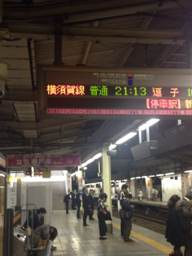
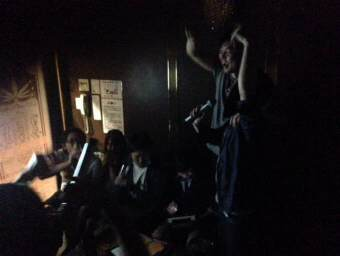
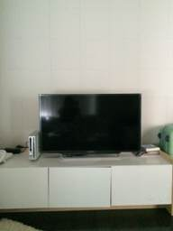
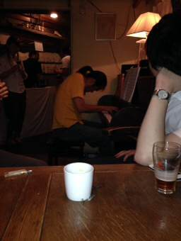
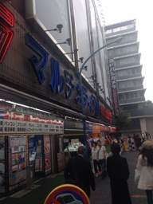
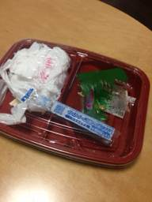
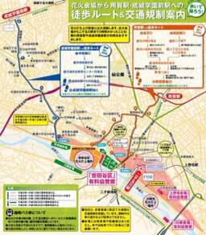
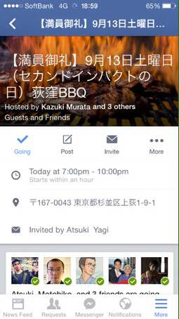
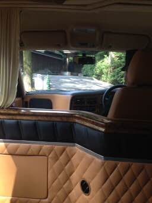

PARTICIPANTS:
DB ID: 497
Current name: tomomi (Emilio)
Address book name: None
User name: tomomi
Phone Number:
Key:
DB ID: 0
Current name: You
Address book name: You
User name:
Phone Number:
Key:
Messages:
2014/03/29 23:32:40, "497:tomomi (Emilio)":
I miss you😢
2014/03/29 23:38:31, "497:tomomi (Emilio)":
What are you doing?
2014/03/30 02:37:12, "0:You":
I've been sleeping all day long.
I miss you too.
How are you?
2014/03/30 08:53:34, "497:tomomi (Emilio)":
Good morning.
You were tired, so you slept well.
I drank too much last night, but I'm not a hangover.
2014/03/30 18:15:12, "497:tomomi (Emilio)":
I miss you…
2014/03/30 18:15:13, "497:tomomi (Emilio)":
2014/03/30 20:14:44, "0:You":
Me too
2014/03/30 20:14:50, "0:You":
Good night babe
2014/03/30 22:18:47, "497:tomomi (Emilio)":
How was your day?
2014/03/30 22:19:14, "497:tomomi (Emilio)":
I wanna see you.
Good night🌙
2014/03/31 06:03:43, "0:You":
I like you soo much.
Wanna see you too.
When do you have time?
2014/03/31 06:09:34, "0:You":
Tomomi!!
2014/03/31 08:36:45, "0:You":
今週末、受験サプリを見つけました。
アプリをインストールして国語を勉強している。
2014/03/31 11:45:23, "497:tomomi (Emilio)":
You're great!
2014/03/31 12:08:31, "497:tomomi (Emilio)":
What time are you going to finish work today?
2014/03/31 12:09:33, "0:You":
7pm
2014/03/31 12:09:58, "0:You":
Can we meet today?
2014/03/31 12:17:09, "497:tomomi (Emilio)":
I have a time tonight.
If you have a time, and we meet tonight.
2014/03/31 12:23:37, "0:You":
Good!
お好み焼きat Ebisu?
2014/03/31 12:32:41, "497:tomomi (Emilio)":
If I go to your home, let's cook together.
2014/03/31 13:10:47, "0:You":
Let's go next time.
2014/03/31 13:11:20, "0:You":
Let's eat out today
2014/03/31 13:22:28, "497:tomomi (Emilio)":
2014/03/31 18:13:19, "497:tomomi (Emilio)":
How about 8pm?
I had a reservation the restaurant in Ebisu.
2014/03/31 18:14:46, "0:You":
Ok
2014/03/31 18:14:55, "497:tomomi (Emilio)":
お好み焼き いまり 東京本店
03-3440-6600
東京都渋谷区恵比寿4丁目27-8
http://tabelog.com/tokyo/A1303/A130302/13094329/
2014/03/31 18:15:12, "0:You":
tnx
2014/03/31 19:53:14, "497:tomomi (Emilio)":
I'm waiting for you at the restaurant.
2014/03/31 19:54:00, "0:You":
I'll be 10 min late
2014/03/31 19:55:00, "497:tomomi (Emilio)":
OK.
Take care.
2014/03/31 20:08:04, "497:tomomi (Emilio)":
Seen that way?
I worry about you.
2014/03/31 20:08:56, "0:You":
No worries
I have google maps
2014/03/31 20:10:06, "497:tomomi (Emilio)":
That's good.
2014/04/01 05:56:18, "0:You":
Thank you!
Have a nice day
2014/04/01 05:57:51, "497:tomomi (Emilio)":
Thank you.
See you.
Have a nice day
2014/04/01 12:48:45, "497:tomomi (Emilio)":
2014/04/01 16:52:19, "497:tomomi (Emilio)":
There is a emargency operation this evening.
So it seems to become slow and finish my work today.
2014/04/01 18:55:02, "0:You":
can we meet today?
2014/04/01 19:06:32, "0:You":
are you still working?
2014/04/01 19:27:37, "497:tomomi (Emilio)":
I finished work now.
2014/04/01 19:28:02, "0:You":
good!
2014/04/01 19:28:34, "0:You":
I'm still working
2014/04/01 19:32:33, "497:tomomi (Emilio)":
I'll go back to my home now.
You don't need hurry.
2014/04/01 19:33:00, "0:You":
None
2014/04/01 19:53:22, "0:You":
finished!
going to 大井町
wanna sleep here?
2014/04/01 19:58:29, "497:tomomi (Emilio)":
I wanna be with you, and I'm good anywhere.
Can I visit your home?
2014/04/01 19:58:49, "0:You":
sure!
2014/04/01 19:59:31, "0:You":
come to 大井町駅
I'll be there in 40min
2014/04/01 20:01:08, "497:tomomi (Emilio)":
Maybe I'll arrive in Oimachi 9o'clock.
2014/04/01 20:01:15, "0:You":
OK
2014/04/01 20:43:56, "497:tomomi (Emilio)":
I'll arrive at the Oimachi station about 9:30.
2014/04/01 20:44:12, "0:You":
Ok
2014/04/01 21:20:00, "497:tomomi (Emilio)":
I arrived at the Oimachi station.
Where should I go?
2014/04/01 21:32:52, "0:You":
I'll be there in 10
2014/04/01 21:34:22, "497:tomomi (Emilio)":
2014/04/01 21:34:49, "0:You":
10min
2014/04/01 21:35:12, "497:tomomi (Emilio)":
I wanna go back my home
2014/04/01 21:35:53, "0:You":
I'm walking
Wait just a little
2014/04/01 21:36:16, "497:tomomi (Emilio)":
2014/04/01 21:36:51, "497:tomomi (Emilio)":
I'm tired of waiting.
2014/04/01 21:41:33, "0:You":
Sorry
Just a little more
2014/04/01 21:41:51, "0:You":
Location 140-0014
Tokyo Shinagawa
21-7, Oi 3-Chōme
2014/04/01 21:42:16, "497:tomomi (Emilio)":
OK.
Take care.
2014/04/01 21:43:00, "0:You":
I had to clean a little
2014/04/01 21:43:33, "497:tomomi (Emilio)":
That's good
2014/04/01 21:46:58, "497:tomomi (Emilio)":
Where you are headed?
JR gates?
2014/04/01 21:50:17, "497:tomomi (Emilio)":
Not yet?
2014/04/01 22:01:21, "0:You":
Sorry
I feel really sick
2014/04/01 22:01:56, "497:tomomi (Emilio)":
Are you OK?
2014/04/01 22:02:04, "0:You":
You don't wanna meet me today.
2014/04/01 22:03:05, "497:tomomi (Emilio)":
No.
I worry about you.
2014/04/01 22:05:18, "0:You":
Sorry!
Somebody just came today.
I cannot be alone with you.
2014/04/01 22:06:28, "497:tomomi (Emilio)":
2014/04/01 22:06:54, "0:You":
Good night!
2014/04/01 22:08:40, "497:tomomi (Emilio)":
帰れってこと？
2014/04/01 22:08:57, "0:You":
うん！
2014/04/01 22:09:30, "497:tomomi (Emilio)":
じゃあ、帰るね。
バイバイ👋
2014/04/01 22:09:50, "0:You":
バイバイ！
2014/04/01 22:12:09, "497:tomomi (Emilio)":
トニーひどい
2014/04/01 22:16:23, "497:tomomi (Emilio)":
すごく傷ついたよ
😢
2014/04/02 09:27:12, "0:You":
昨日はごめね！
元彼女がいきなり現れてずっと泣いてた。
いきなりだったのでどうすればいいか分からなくてともみちゃんに申し訳ないことをしてしまった。
2014/04/02 09:29:57, "0:You":
None
2014/04/06 14:38:47, "497:tomomi (Emilio)":
Are you being with ex-girlfriend much since then?
2014/04/06 20:23:30, "0:You":
Yes, sorry!
But we decided to break up long time ago.
2014/04/06 20:23:42, "0:You":
I'm free
2014/04/06 21:38:48, "497:tomomi (Emilio)":
I knew it.
I wanna see you again, but I can't meet you, don't you?
2014/04/06 21:56:06, "0:You":
I wanna see you too
Let's go dinner tomorrow
2014/04/06 22:57:11, "0:You":
Oh!wait...
When are you free this week?
2014/04/07 07:36:44, "497:tomomi (Emilio)":
Good morning.
It's all right today.
I'm looking forward to meet you.
2014/04/07 08:25:57, "0:You":
ごめん〜
確認をしたら今日は行けない。
間違った
明日でもいい？
2014/04/07 13:34:19, "497:tomomi (Emilio)":
Sorry.
I have a plan tomorrow.
2014/04/07 13:35:08, "0:You":
OK
lets meet another day
2014/04/07 13:36:01, "0:You":
Tomomi,
when are you free?
2014/04/07 13:42:19, "497:tomomi (Emilio)":
How about this friday?
2014/04/07 13:46:45, "0:You":
sorry.
I'm busy on Friday.
...on the weekend?
2014/04/07 13:47:56, "497:tomomi (Emilio)":
Saturday?
2014/04/07 13:48:15, "0:You":
yes
2014/04/07 13:48:28, "0:You":
love you, babe!
2014/04/07 13:53:22, "497:tomomi (Emilio)":
I wanna to meet you soon.
Love you too
2014/04/07 19:12:08, "497:tomomi (Emilio)":
I miss you
2014/04/07 19:12:09, "497:tomomi (Emilio)":
2014/04/07 19:13:13, "0:You":
miss you too, babe
2014/04/07 19:17:59, "497:tomomi (Emilio)":
It's too lonely, I can't sleep alone.
2014/04/07 19:36:45, "0:You":
we can sleep together next week.
Sleep well! Good night!
2014/04/07 19:57:18, "497:tomomi (Emilio)":
Good night🌙
2014/04/08 08:54:56, "497:tomomi (Emilio)":
Good morning dear☀️
Kiss you
2014/04/08 09:17:22, "0:You":
Good morning!
2014/04/08 16:57:55, "497:tomomi (Emilio)":
Today is day off.
I baked bagels in bread class🍞
2014/04/08 16:58:03, "497:tomomi (Emilio)":
tomomi (Emilio) sent you a photo.
2014/04/08 17:00:27, "0:You":
I love bagels
looks good!
2014/04/08 20:12:02, "0:You":
Finished work.
Time to go home and get some sleep
2014/04/08 20:15:01, "497:tomomi (Emilio)":
Cheers for good work.
Good night🌙
Loving
2014/04/08 20:15:46, "0:You":
Love u too
2014/04/08 20:40:43, "497:tomomi (Emilio)":
I have a question.
Is ex-girlfriend in your home?
2014/04/08 20:41:18, "0:You":
Yes.
She's leaving this week
2014/04/08 20:42:49, "497:tomomi (Emilio)":
I relieved.
2014/04/08 22:57:54, "497:tomomi (Emilio)":
Hi, sweety
Have a good dream⭐️
2014/04/08 23:50:43, "0:You":
Night night!
2014/04/09 08:05:32, "497:tomomi (Emilio)":
Good morning
2014/04/09 08:10:06, "0:You":
Tomomi!!
2014/04/09 08:11:48, "497:tomomi (Emilio)":
Hi, Toni
2014/04/09 08:12:46, "0:You":
Good morning beauty!
2014/04/09 08:13:55, "497:tomomi (Emilio)":
Lovely
2014/04/09 08:15:01, "0:You":
See you Saturday
2014/04/09 08:16:08, "497:tomomi (Emilio)":
2014/04/09 12:12:34, "497:tomomi (Emilio)":
I miss you…
But I'm calling on duty today.
I can't meet you.
I can't wait until saturday, but to put up…
2014/04/09 13:00:39, "0:You":
You're so sweet
2014/04/09 20:41:55, "0:You":
What r you doing?
2014/04/09 22:45:48, "497:tomomi (Emilio)":
I'm going to back my home.
2014/04/09 22:48:28, "0:You":
Did you have a good day?
2014/04/09 22:49:13, "497:tomomi (Emilio)":
Yes.But I miss you.
2014/04/09 22:52:04, "0:You":
I miss you too
2014/04/09 22:52:58, "497:tomomi (Emilio)":
I wanna see you…
2014/04/09 23:02:25, "497:tomomi (Emilio)":
To come to see me.
2014/04/09 23:04:02, "0:You":
Let's meet Saturday noon
2014/04/09 23:07:02, "497:tomomi (Emilio)":
Is it good at night on saturday?
I'll go to nail salon at noon.
2014/04/09 23:07:38, "0:You":
np
Let's meet at night
2014/04/09 23:08:57, "497:tomomi (Emilio)":
2014/04/09 23:11:32, "497:tomomi (Emilio)":
Good night🌙
Kiss you
2014/04/09 23:11:48, "0:You":
Good night babe
2014/04/10 08:05:15, "497:tomomi (Emilio)":
Have you woken up yet?
morning☀️
2014/04/10 08:06:20, "0:You":
I'm up
Good morning
Did you sleep well?
2014/04/10 08:13:06, "497:tomomi (Emilio)":
I slept well last night.
2014/04/10 08:17:07, "497:tomomi (Emilio)":
And you?
2014/04/10 08:21:57, "0:You":
Good
I wanna sleep with you more.
2014/04/10 09:48:22, "497:tomomi (Emilio)":
me too.
2014/04/10 13:00:34, "497:tomomi (Emilio)":
I wish comes early on saturday.
2014/04/10 18:09:02, "497:tomomi (Emilio)":
I finished work.
2014/04/11 13:05:29, "497:tomomi (Emilio)":
What's up?
2014/04/11 14:33:01, "0:You":
Hi!
2014/04/11 21:09:08, "0:You":
What time are you free tomorrow?
2014/04/11 22:57:09, "497:tomomi (Emilio)":
May be at 18:30.
2014/04/11 23:50:05, "0:You":
None
2014/04/12 00:16:31, "0:You":
Good night babe
See you tomorrow
2014/04/12 08:31:31, "0:You":
Good morning!
2014/04/12 08:32:21, "497:tomomi (Emilio)":
Good morning
2014/04/12 13:48:32, "497:tomomi (Emilio)":
I'm in Ginza.
Shall we have a dinner in Ginza?
Can you come to Ginza in the evening?
2014/04/12 13:57:23, "0:You":
Nice!
Ginza at 18:30
2014/04/12 16:33:00, "0:You":
16:48に銀座に着きます
--- from 駅すぱあと ---
2014/04/12 16:33:44, "0:You":
そこのヘンでコピーを飲んで待ってるよ
2014/04/12 16:36:28, "497:tomomi (Emilio)":
2014/04/12 17:42:05, "0:You":
Location 104-0061
Tokyo Chuo
2-1, Ginza 2-Chōme
2014/04/12 17:42:20, "0:You":
ここにいるよ
2014/04/12 18:05:32, "497:tomomi (Emilio)":
I have kept you waiting.
I finished.
I'll go to there.
2014/04/12 18:08:44, "0:You":
マクドナルド 銀座インズ店
〒104-0061 Tokyo, Chūō, 銀座西1−2, 銀座インズ3内
http://goo.gl/maps/OBplc
2014/04/14 12:46:40, "497:tomomi (Emilio)":
今日、私が、トニーの家に行こうか？
私の方が、朝早いからわるいなと思って。
朝早かったから、疲れてるでしょ…
2014/04/14 13:11:19, "0:You":
大丈夫だよ！
気にせず
私が新宿で泊まるのも問題ない
2014/04/14 13:11:47, "497:tomomi (Emilio)":
ありがとう
2014/04/14 17:43:02, "497:tomomi (Emilio)":
仕事終わったよ✨
ごはん作って待ってる
パスタにしようかな…
2014/04/14 17:52:37, "0:You":
まだ仕事
なるはや行きますよ
2014/04/14 17:54:16, "497:tomomi (Emilio)":
ゆっくりでいいよ
2014/04/14 19:38:33, "0:You":
仕事を終わった
直新宿に来る
2014/04/14 20:01:49, "0:You":
20:31に西新宿五丁目に着きます
--- from 駅すぱあと ---
2014/04/14 20:17:04, "497:tomomi (Emilio)":
早い💦
今からごはん作るね。
駅まで迎えに行くよ。
2014/04/14 20:18:00, "0:You":
家で待ってていいよ
1人で行けそう
2014/04/14 20:24:13, "497:tomomi (Emilio)":
ありがとう😄
2014/04/14 23:45:05, "0:You":
You sent a photo.

2014/04/15 20:26:17, "497:tomomi (Emilio)":
Are you still working?
2014/04/15 20:28:43, "0:You":
just finished
going to 西大井 now
2014/04/15 20:29:42, "497:tomomi (Emilio)":
I'll go to Nishioi
2014/04/15 20:30:06, "0:You":
I'll be there in 30min
2014/04/15 20:42:13, "497:tomomi (Emilio)":
I wanna go to 100yen-shop.
So I'll be there after 50min.
2014/04/15 20:42:31, "0:You":
None
2014/04/15 21:05:46, "497:tomomi (Emilio)":
I'll arrive at 21:34 to Nishioi.
2014/04/15 21:06:29, "0:You":
21:34に西大井に着きます
--- from 駅すぱあと ---
2014/04/15 21:06:56, "497:tomomi (Emilio)":
You too?
2014/04/15 21:07:26, "0:You":
You sent a photo.
2014/04/15 21:07:44, "0:You":
今なん号車？
2014/04/15 21:09:26, "497:tomomi (Emilio)":
新宿駅を21:19発の電車待ってる。
8号車のとこにいる。
2014/04/15 21:17:41, "0:You":
8号車で待ってるよ
とびら1
2014/04/15 21:18:09, "497:tomomi (Emilio)":
2014/04/15 21:19:22, "497:tomomi (Emilio)":
Where?
2014/04/15 21:20:51, "0:You":
Plenty of people here,
I'm on the bottom of the car
2014/04/15 21:21:30, "0:You":
I'll go there at Shibuya
Wait 1min
2014/04/15 21:22:16, "497:tomomi (Emilio)":
2014/04/15 21:22:44, "0:You":
None
2014/04/15 21:23:23, "497:tomomi (Emilio)":
I'm waiting for you in Shibuya.
2014/04/16 19:12:00, "497:tomomi (Emilio)":
I finished work.
I miss you tonight
2014/04/16 19:13:31, "0:You":
I will miss you too
2014/04/16 21:15:18, "497:tomomi (Emilio)":
2014/04/16 21:15:29, "497:tomomi (Emilio)":
Good night🌙
2014/04/16 21:49:56, "0:You":
Good night babe
2014/04/16 23:10:05, "0:You":
ビッグダディが再婚するって
http://rocketnews24.com/2014/04/16/433011/
2014/04/17 08:00:41, "497:tomomi (Emilio)":
Good morning.
I know that he got married.
Have a nice day.
2014/04/17 08:01:04, "497:tomomi (Emilio)":
2014/04/17 08:03:22, "0:You":
Good morning!
See you tonight
2014/04/17 08:06:16, "497:tomomi (Emilio)":
I waiting for you to make a dinner.
2014/04/17 08:17:20, "0:You":
Thanks
2014/04/17 20:37:13, "497:tomomi (Emilio)":
What time will you come home?
2014/04/17 20:37:38, "0:You":
in 1 hour
2014/04/17 21:20:03, "0:You":
21:54に西新宿五丁目に着きます
--- from 駅すぱあと ---
2014/04/17 21:20:30, "497:tomomi (Emilio)":
2014/04/18 12:57:36, "0:You":
remind me to buy a Moka pot when we go to IKEA
http://en.wikipedia.org/wiki/Moka_pot
2014/04/18 12:59:45, "497:tomomi (Emilio)":
2014/04/18 22:10:20, "497:tomomi (Emilio)":
帰るとき、メールしてね✨
2014/04/18 22:44:13, "0:You":
帰った
今から映画を見て寝る。
また日曜日だね！
お休み
2014/04/18 22:45:30, "497:tomomi (Emilio)":
帰っちゃったの…
一緒に寝たい💤
今から行ったら、ダメ？
2014/04/18 23:07:52, "0:You":
ごめん！
仕事に疲れて半分寝てる
2014/04/18 23:08:05, "0:You":
動けない
2014/04/19 00:20:07, "0:You":
Good night babe
2014/04/19 09:24:26, "497:tomomi (Emilio)":
morning☀️
Lovin
2014/04/19 09:28:14, "497:tomomi (Emilio)":
I've my period.
I was sorry for you.
2014/04/19 09:58:01, "0:You":
Morning
2014/04/19 10:03:13, "0:You":
See you tomorrow !
2014/04/19 10:06:15, "497:tomomi (Emilio)":
Shall we go to IKEA in Tachikawa tomorrow.
We can go only by a train there.
2014/04/19 11:57:38, "0:You":
Let's meet at the IKEA Stn...
Tachikawaminami Stn
Tomorrow morning
2014/04/19 12:51:57, "497:tomomi (Emilio)":
Let's go out after having lunch in Shinjuku.
How?
2014/04/19 13:54:57, "497:tomomi (Emilio)":
I'm anxious when your mobile phone is turned off.
2014/04/19 14:59:20, "0:You":
Ok
2014/04/19 15:50:54, "0:You":
Where do you want to meet tomorrow?
2014/04/19 16:12:36, "497:tomomi (Emilio)":
My house or Shinjuku station is good.
2014/04/19 18:04:09, "0:You":
Ok
I'll go to your place tomorrow morning
2014/04/19 18:20:48, "497:tomomi (Emilio)":
2014/04/19 18:27:48, "0:You":
Sexy!
2014/04/19 21:44:15, "0:You":
Good night
2014/04/19 21:48:15, "497:tomomi (Emilio)":
Good night🌙
See you tomorrow.
2014/04/20 10:49:12, "497:tomomi (Emilio)":
Morning
2014/04/20 10:51:51, "0:You":
10:57に西新宿五丁目に着きます
--- from 駅すぱあと ---
2014/04/20 10:51:58, "0:You":
起きた？
2014/04/20 10:54:05, "497:tomomi (Emilio)":
うん
お掃除中‼︎
2014/04/20 23:24:19, "0:You":
08034165631
2014/04/21 22:05:12, "497:tomomi (Emilio)":
Have a fun?
2014/04/21 22:05:21, "497:tomomi (Emilio)":
tomomi (Emilio) sent you a photo.
2014/04/21 22:05:43, "497:tomomi (Emilio)":
Today's dinner✨
2014/04/21 22:06:59, "0:You":
I couldn't go to the concert.
I went straight home.
Your dinner looks good
2014/04/21 22:10:20, "497:tomomi (Emilio)":
It was disappointing.
Let's go for TV buying together next sunday.
2014/04/21 22:15:01, "0:You":
This is the last we saw yesterday.
http://item.rakuten.co.jp/akindo/kdl-42w650a/
2014/04/21 22:18:26, "497:tomomi (Emilio)":
Is it true?
2014/04/21 22:18:45, "497:tomomi (Emilio)":
2014/04/21 22:56:48, "497:tomomi (Emilio)":
night🌙🌟
Love you
2014/04/21 22:57:18, "0:You":
Night night, darling
2014/04/21 22:57:59, "497:tomomi (Emilio)":
See you tomorrow
2014/04/21 22:58:22, "0:You":
See you tomorrow
2014/04/22 08:06:09, "497:tomomi (Emilio)":
morning☀️sweety
A wonderful day✨
2014/04/22 08:11:59, "0:You":
Tomomi!!
2014/04/22 08:13:51, "497:tomomi (Emilio)":
Hi, Toni
2014/04/22 08:14:49, "0:You":
See you later
2014/04/22 12:11:15, "497:tomomi (Emilio)":
Today's dinner is a cheese in hamburger steak.
2014/04/22 12:20:56, "0:You":
Yeah!
2014/04/22 18:13:16, "497:tomomi (Emilio)":
I do shopping and return.
What time do you come home in?
2014/04/22 18:13:31, "0:You":
9pm
2014/04/22 18:13:52, "497:tomomi (Emilio)":
2014/04/22 19:20:43, "0:You":
19:46に西新宿五丁目に着きます
--- from 駅すぱあと ---
2014/04/22 19:33:37, "497:tomomi (Emilio)":
まだごはん作ってない
これから作るね🍴
2014/04/22 19:38:05, "0:You":
None
2014/04/23 13:07:42, "497:tomomi (Emilio)":
I'm lovin' you
2014/04/23 13:07:43, "497:tomomi (Emilio)":
2014/04/23 18:20:56, "497:tomomi (Emilio)":
I just came home.
If the work is over, please contact me.
2014/04/23 18:43:39, "0:You":
OK
2014/04/23 18:43:56, "0:You":
it will be 8pm~
2014/04/23 19:04:08, "497:tomomi (Emilio)":
2014/04/23 19:32:41, "0:You":
I'm going to NishiOoi now.
I'll be there in 30min
2014/04/23 19:39:03, "0:You":
ごめん
2014/04/23 19:39:30, "0:You":
まだ仕事残ってた
８：３０に帰る
2014/04/23 20:09:21, "497:tomomi (Emilio)":
今、家出たよ。
たぶん、西大井に9時過ぎに着くよ。
2014/04/23 20:37:02, "497:tomomi (Emilio)":
8:58に西大井に着くよ。
2014/04/23 20:37:30, "0:You":
20:58に西大井に着きます
--- from 駅すぱあと ---
2014/04/23 20:37:59, "497:tomomi (Emilio)":
たぶん同じ電車だよ。
2014/04/23 20:38:35, "0:You":
2014/4/23(水) 出発
池袋 → 西大井
所要時間21分 片道302円 乗換0回
池袋
｜20:37
｜ＪＲ湘南新宿ライン・大船行
｜20:58
西大井
--- from 駅すぱあと ---
2014/04/23 20:39:00, "497:tomomi (Emilio)":
同じ電車
2014/04/23 20:39:31, "0:You":
8号車です
2014/04/23 20:41:18, "497:tomomi (Emilio)":
OK
2014/04/23 20:41:53, "497:tomomi (Emilio)":
またいなくても乗っちゃうね。
2014/04/23 20:43:54, "497:tomomi (Emilio)":
やっぱりいない😢
2014/04/25 09:39:59, "0:You":
Good morning babe!
今夜六本木で送別会があって、終わったらとんちゃんのところで寝てていい？
2014/04/25 10:04:56, "497:tomomi (Emilio)":
morning☀️
今日大丈夫だよ。
私も、歓迎会🍺があるので、終わったら、連絡するね。
2014/04/25 10:07:37, "0:You":
None
2014/04/25 16:12:25, "0:You":
ビグカメラポイントを持ってるから明日使おうか？
2014/04/25 18:26:51, "497:tomomi (Emilio)":
2014/04/25 21:00:16, "497:tomomi (Emilio)":
I return now.
I'm waiting for you.
2014/04/25 21:29:37, "497:tomomi (Emilio)":
It's all right even if it becomes late.
2014/04/25 21:57:22, "0:You":
Tnx
2014/04/25 23:57:24, "0:You":
オールナイトになりそう
先に寝てて
2014/04/26 00:35:10, "0:You":
カラオケになっちゃた
2014/04/26 00:35:17, "0:You":
You sent a photo.
2014/04/26 00:35:37, "497:tomomi (Emilio)":
2014/04/27 01:29:55, "497:tomomi (Emilio)":
2014/04/27 09:58:29, "497:tomomi (Emilio)":
morning☀️
2014/04/27 09:58:33, "497:tomomi (Emilio)":
2014/04/27 09:59:27, "0:You":
Morning darling
See you later
2014/04/27 14:34:09, "497:tomomi (Emilio)":
I go to Shinjuku now.
2014/04/27 14:35:42, "0:You":
Do you have my Biccamera point card ?
2014/04/27 14:44:29, "497:tomomi (Emilio)":
Yes, I have.
2014/04/27 14:45:01, "0:You":
Good job!
2014/04/27 14:46:16, "497:tomomi (Emilio)":
2014/04/27 14:50:43, "0:You":
15:07に新宿に着きます
--- from 駅すぱあと ---
2014/04/27 14:58:41, "497:tomomi (Emilio)":
I'll be in the west exit of Shinjuku station.
2014/04/27 15:08:24, "0:You":
Are you thirsty?
2014/04/27 15:09:57, "497:tomomi (Emilio)":
YES
2014/04/27 15:15:25, "497:tomomi (Emilio)":
Where r you?
2014/04/27 15:15:55, "0:You":
Outside
2014/04/27 15:16:34, "0:You":
Wanna meet at biccamera , 2f?
2014/04/27 15:18:03, "497:tomomi (Emilio)":
2014/04/28 14:11:17, "0:You":
椎名町の焼き鳥だよ！
http://tabelog.com/tokyo/A1321/A132101/13162306/
2014/04/28 14:11:41, "0:You":
8:30pm~
だけど行ける？
2014/04/28 14:14:34, "497:tomomi (Emilio)":
2014/04/29 20:01:31, "0:You":
I'll message you when the party is over
2014/04/29 20:01:55, "497:tomomi (Emilio)":
OK
2014/04/29 22:00:44, "497:tomomi (Emilio)":
It seems to become late tonight.
Please enjoy the party.
See you.
2014/04/29 22:17:30, "0:You":
I'm going home
2014/04/29 22:21:45, "0:You":
Are you sleeping?
2014/04/29 22:23:22, "0:You":
Can I stay at your place tonight ?
2014/04/29 22:27:20, "497:tomomi (Emilio)":
I'm sleepy.
You can stay my home tonight, but it'll be early tomorrow morning. So shall I go to your home?
2014/04/29 22:28:23, "0:You":
No, it's ok
Put on your pajama and relax
I'll get there in 15min
2014/04/29 22:29:13, "497:tomomi (Emilio)":
OK. I'm waiting for you.
2014/04/30 11:33:52, "497:tomomi (Emilio)":
It'll be not busy tomorrow, so I have a day off tomorrow.
Yeah!!
2014/04/30 11:35:21, "0:You":
Nice!
Let's go somewhere.
2014/04/30 11:35:49, "497:tomomi (Emilio)":
Yes
2014/04/30 19:18:17, "497:tomomi (Emilio)":
I can't wait until tomorrow.
2014/04/30 19:18:28, "497:tomomi (Emilio)":
2014/04/30 19:19:01, "0:You":
I'll go Shinjuku tomorrow morning.
Now it's raining
2014/04/30 19:20:34, "497:tomomi (Emilio)":
I'm waiting for you
2014/04/30 19:21:25, "497:tomomi (Emilio)":
2014/04/30 22:36:22, "497:tomomi (Emilio)":
night🌙🌟
2014/04/30 22:36:25, "497:tomomi (Emilio)":
2014/04/30 22:41:15, "0:You":
Night night !
2014/05/01 08:17:34, "497:tomomi (Emilio)":
morning☀️darling
2014/05/01 08:17:35, "497:tomomi (Emilio)":
2014/05/01 08:45:50, "0:You":
Just got up
2014/05/01 09:42:07, "0:You":
I'll go to your place as soon as I finish my laundry
2014/05/01 09:54:14, "497:tomomi (Emilio)":
2014/05/01 10:45:52, "0:You":
10分で着くよ
2014/05/01 10:49:26, "497:tomomi (Emilio)":
2014/05/01 10:49:33, "497:tomomi (Emilio)":
間違えた
2014/05/01 10:49:57, "497:tomomi (Emilio)":
2014/05/01 10:52:17, "0:You":
絵文字を間違えることもあるの！さ〜！
2014/05/01 19:32:54, "0:You":
すし居酒屋小池
03-5928-0777
東京都豊島区東池袋1-20-18
http://tabelog.com/tokyo/A1305/A130501/13133702/
2014/05/02 12:08:48, "497:tomomi (Emilio)":
I'll finish work at 5:30pm.
Do you go shopping for dinner with me?
It's good to come to the time that can be for dinner.
2014/05/02 12:10:42, "0:You":
OK, let's go shopping.
Where shall we meet?
2014/05/02 12:12:18, "497:tomomi (Emilio)":
How about Midtown?
2014/05/02 12:12:52, "0:You":
5:30?
2014/05/02 12:13:51, "497:tomomi (Emilio)":
6:00pm.
Are you OK?
2014/05/02 12:24:55, "0:You":
No problem.
See you at Midtown at 6z
2014/05/02 12:25:01, "0:You":
6pm
2014/05/02 12:25:55, "497:tomomi (Emilio)":
See you later
2014/05/02 17:42:24, "0:You":
I'm in midtown
2014/05/02 17:46:40, "497:tomomi (Emilio)":
I'm going to Midtown.
2014/05/02 17:51:53, "0:You":
Just paid docomo.
I'll wait in the 2nd floor
2014/05/02 17:54:51, "0:You":
You sent a photo.
2014/05/02 17:56:08, "497:tomomi (Emilio)":
I just arrive the Midtown.
2014/05/02 17:58:47, "497:tomomi (Emilio)":
Now it is toward the 2nd floor.
2014/05/04 14:55:28, "497:tomomi (Emilio)":
2014/05/04 17:27:31, "0:You":
今日来ていい？
2014/05/04 18:01:39, "497:tomomi (Emilio)":
いいけど、toniは、今夜どこか行くの？
2014/05/04 18:13:02, "0:You":
行くよ！
2014/05/04 18:16:45, "497:tomomi (Emilio)":
私も飲みに行くから、帰るとき連絡ちょうだいね😄✨
2014/05/04 18:27:01, "0:You":
ありがと！
2014/05/04 18:27:05, "0:You":
今から
2014/05/04 18:27:44, "497:tomomi (Emilio)":
またあとでね👋
2014/05/04 19:33:08, "0:You":
着いたよ
家にいる？
2014/05/04 19:34:54, "497:tomomi (Emilio)":
いない。
新宿三丁目にいるよ。
来る？
2014/05/04 19:35:19, "0:You":
お‼︎
2014/05/04 19:35:30, "0:You":
いいよ
2014/05/04 19:35:47, "497:tomomi (Emilio)":
伊勢丹まで来れる？
2014/05/04 19:36:48, "0:You":
うん！
2014/05/04 19:37:18, "497:tomomi (Emilio)":
伊勢丹着いたら、連絡してね。
2014/05/04 19:57:22, "0:You":
ここの伊勢丹であってる？
2014/05/04 19:57:29, "0:You":
You sent a photo.
2014/05/04 19:57:57, "497:tomomi (Emilio)":
あってる。今行くね。
2014/05/07 17:13:06, "0:You":
次はいつ会えるの？
2014/05/07 17:50:24, "497:tomomi (Emilio)":
いつでもいいよ😄
2014/05/07 20:32:32, "497:tomomi (Emilio)":
おやすみ🌙🌟😄✨
2014/05/07 20:37:37, "0:You":
お休み！明日は会えるといいな！
2014/05/08 08:09:17, "497:tomomi (Emilio)":
morning☀️
I can meet you today.
How about you?
If we can meet, I'll go to your house.
Cause It'll be early morning tomorrow.
2014/05/08 08:10:20, "0:You":
Yes, sure!
You're always welcome
2014/05/08 09:25:30, "0:You":
ともみちゃんのビルって何という名前？
2014/05/08 10:09:23, "497:tomomi (Emilio)":
シティータワー新宿新都心だよ🌟
2014/05/08 18:23:03, "497:tomomi (Emilio)":
What time dose work finish you today?
2014/05/08 18:36:27, "0:You":
19:30
2014/05/08 19:48:46, "497:tomomi (Emilio)":
I'm going to Oimachi.
Do I cook a dinner?
2014/05/08 19:54:29, "0:You":
None
2014/05/08 20:07:42, "0:You":
20:58に西大井に着きます
--- from 駅すぱあと ---
2014/05/08 20:10:32, "0:You":
えんどうちゃんはどこから来るの？大井町、それか西大井ですか？
2014/05/08 20:11:34, "497:tomomi (Emilio)":
大井町だよ🌟
2014/05/08 20:11:50, "0:You":
Ok
2014/05/08 20:12:29, "0:You":
20:55に大井町に着きます
--- from 駅すぱあと ---
2014/05/08 20:13:53, "497:tomomi (Emilio)":
待ってるね😄
2014/05/08 20:14:21, "0:You":
も着いた？
2014/05/08 20:17:37, "497:tomomi (Emilio)":
今、大崎💦
2014/05/08 20:18:15, "0:You":
いいね！速い！
2014/05/08 21:00:04, "0:You":
着いた！
2014/05/08 21:00:12, "0:You":
今イトウヨウカドウ
2014/05/08 21:00:36, "0:You":
今どこ？
2014/05/08 21:00:47, "497:tomomi (Emilio)":
阪急のとこのサンマルクの前にいるよ。
2014/05/08 21:01:44, "0:You":
サンマルクか？！
2014/05/08 21:02:17, "497:tomomi (Emilio)":
そう✨
2014/05/09 10:42:19, "0:You":
よく寝た？まだ疲れてる？
2014/05/09 11:15:12, "497:tomomi (Emilio)":
よく寝たよ💤
大丈夫✨😄
2014/05/10 22:37:01, "0:You":
明日暇？行っていい？
2014/05/10 22:41:16, "0:You":
Good night babe!
2014/05/11 08:54:36, "0:You":
起きた？
2014/05/11 11:24:00, "0:You":
今日は泊まっていいですか？
2014/05/11 16:56:06, "0:You":
Call History : 0 millisecs, Result: 16
2014/05/11 18:28:38, "497:tomomi (Emilio)":
こないだのことで、元気がないので、今日は、一人にさせてください。
ごめんなさい😢
2014/05/11 18:30:51, "0:You":
ごめん！本当にごめん！
もしないから。
傷をつけないから。
元気が戻ったら連絡をしてください。
2014/05/12 13:02:21, "0:You":
おはよう！
2014/05/12 22:07:44, "0:You":
お休み！
2014/05/13 06:57:37, "0:You":
雨が降ってるね！
2014/05/13 07:52:09, "497:tomomi (Emilio)":
おはよう☀️
2014/05/13 08:00:12, "0:You":
I love you
2014/05/13 08:07:10, "497:tomomi (Emilio)":
I can't believe you💦
2014/05/13 08:18:14, "0:You":
Give me 1 more chance, please.
2014/05/13 08:24:22, "0:You":
夜会おうか？
2014/05/13 08:33:16, "497:tomomi (Emilio)":
いいよ。
2014/05/13 08:33:44, "0:You":
ありがと！またね！
2014/05/13 11:40:10, "497:tomomi (Emilio)":
今日、外でごはん食べたいんだけど…
2014/05/13 11:42:26, "0:You":
いいよ
ガウディにする？
http://tabelog.com/tokyo/A1307/A130701/13023826/
2014/05/13 11:45:46, "497:tomomi (Emilio)":
うん。
そこに行ったことないから、そこにしよう😄
2014/05/13 11:47:55, "0:You":
None
2014/05/13 12:00:32, "497:tomomi (Emilio)":
時間遅くてもいいよ🌟
21時とか…
2014/05/13 12:03:48, "0:You":
21時にしましょ
2014/05/13 12:12:24, "497:tomomi (Emilio)":
2014/05/13 12:25:39, "497:tomomi (Emilio)":
お店21時に予約したよ😄
2014/05/13 12:34:42, "0:You":
ありがと
2014/05/13 20:51:11, "0:You":
21:23に六本木に着きます
--- from 駅すぱあと ---
2014/05/13 20:51:34, "0:You":
ごめん！
仕事が遅かった
2014/05/13 20:52:19, "497:tomomi (Emilio)":
分かった😄
待ってるね✨
2014/05/13 21:22:32, "0:You":
六本木に着いた
あとちょっと
2014/05/13 21:23:04, "497:tomomi (Emilio)":
2014/05/14 21:34:04, "0:You":
21:50に新宿に着きます
--- from 駅すぱあと ---
2014/05/14 21:42:19, "497:tomomi (Emilio)":
2014/05/14 22:02:45, "497:tomomi (Emilio)":
新宿駅から歩くの？
2014/05/15 22:07:18, "0:You":
遅くなってごめん
まだ会社
2014/05/15 22:23:29, "497:tomomi (Emilio)":
分かった😢
頑張ってね✨
ごはん出来てるよ🌟🍴
2014/05/15 22:58:51, "0:You":
駅に着いた
2014/05/15 22:59:21, "497:tomomi (Emilio)":
お疲れ様✨どこの？
2014/05/16 15:33:09, "497:tomomi (Emilio)":
TVきたよ😄✨
2014/05/16 16:17:57, "0:You":
None
2014/05/16 20:16:37, "0:You":
まだ仕事です
2014/05/16 20:17:30, "497:tomomi (Emilio)":
OK😄
ルミネ新宿で買い物してるよ🌟
お仕事頑張ってね✨
2014/05/16 20:57:13, "497:tomomi (Emilio)":
今から、大井町に向かいます。
お仕事ゆっくりでいいよ✨
2014/05/16 21:03:52, "0:You":
私も向かうのじゃ！
2014/05/16 21:05:22, "497:tomomi (Emilio)":
2014/05/16 21:12:20, "497:tomomi (Emilio)":
見て見て♪
新しいTV⭐︎
2014/05/16 21:12:25, "497:tomomi (Emilio)":
tomomi (Emilio) sent you a photo.
2014/05/16 21:15:27, "0:You":
このテレビって前より大きい？
2014/05/16 21:17:46, "497:tomomi (Emilio)":
うん😄
2014/05/16 21:25:00, "497:tomomi (Emilio)":
大井町駅前のスタバにいるね☕️
2014/05/16 21:29:23, "0:You":
22:01に大井町に着きます
--- from 駅すぱあと ---
2014/05/16 21:34:13, "497:tomomi (Emilio)":
2014/05/16 21:51:35, "497:tomomi (Emilio)":
ごはんどうする？
作る？
2014/05/16 22:03:40, "0:You":
駅に着いた
スターバックスに向かう
2014/05/16 22:05:34, "497:tomomi (Emilio)":
スタバ終わったから、1階にいるね。
2014/05/16 22:05:51, "0:You":
了解
2014/05/16 22:08:36, "0:You":
Call History : 0 millisecs, Result: 21
(Binary)
2014/05/16 23:05:53, "0:You":
何をしてるの？
2014/05/17 12:21:17, "497:tomomi (Emilio)":
食事急がせてゴメンね😢
間に合ったよ✈️
行ってきます😄✨
BBQ楽しんで来てねshiny
2014/05/17 12:22:59, "0:You":
うん！
よかった、よかった！
2014/05/17 12:23:18, "0:You":
気をつけてね！
2014/05/17 12:23:30, "497:tomomi (Emilio)":
2014/05/17 12:24:38, "497:tomomi (Emilio)":
2014/05/17 12:34:18, "0:You":
None
2014/05/17 21:30:11, "0:You":
お休み！
2014/05/17 21:39:50, "497:tomomi (Emilio)":
おやすみ🌙
今から、ラーメン食べに行ってくる🍜
2014/05/18 07:54:50, "0:You":
おはよう！
よく寝た？
生理が来た？
2014/05/18 08:20:21, "497:tomomi (Emilio)":
morning☀️
よく寝たよ💤toniがいなくてさみしかったけど😢💦
昨日、生理きちゃった
2014/05/18 10:55:42, "497:tomomi (Emilio)":
帰りの飛行機✈️
ANA 272便 だよ🌟
羽田空港に22:30くらいに着くよ♡
遠いから、お迎え来なくてもいいよ😄
2014/05/18 19:52:38, "0:You":
家で仕事をしてる。
空港へ行けなさそう。
2014/05/18 20:01:39, "497:tomomi (Emilio)":
分かった😄✨
2014/05/18 23:01:13, "497:tomomi (Emilio)":
今、着いた✈️
これから行くと遅くなるから、私、今日は新宿に帰ろうか？
2014/05/18 23:02:21, "0:You":
分かった！新宿で泊まっちゃっていいよ
また明日ね！
2014/05/18 23:03:53, "497:tomomi (Emilio)":
明日は、オンコールなの😢
2014/05/18 23:06:34, "0:You":
そうか？！
じゃ、明日新宿へ行くよ
2014/05/18 23:13:00, "497:tomomi (Emilio)":
いやいや。
呼び出し当番だから、あさって会う？それか、明日なら、トニーの家の方がいいと思う。
2014/05/18 23:23:42, "0:You":
じゃ
2014/05/18 23:23:54, "0:You":
水曜日会おう
2014/05/19 00:20:03, "497:tomomi (Emilio)":
今、家着いた🏠
火曜じゃなくて、水曜会うの？
おやすみなさい🌙
2014/05/19 00:21:24, "0:You":
火曜日は予定が入ってて
2014/05/19 00:21:43, "497:tomomi (Emilio)":
2014/05/19 00:21:51, "0:You":
お休み！
2014/05/19 08:41:25, "497:tomomi (Emilio)":
morning
Love U
2014/05/19 09:29:42, "0:You":
Morning!
今日は遅刻だな〜
困った！
2014/05/19 11:38:38, "497:tomomi (Emilio)":
寝坊したの？
大変だったね😱
2014/05/19 19:45:59, "497:tomomi (Emilio)":
福岡のおみやげcakeJapanese Pinataたくさんあるから、楽しみにしててねheartheartheart
2014/05/19 19:50:12, "0:You":
オー！
ありがと！
2014/05/19 21:05:36, "497:tomomi (Emilio)":
仕事終わった？
お風呂入って寝ようdoze off
おやすみtwo hearts
2014/05/19 21:07:14, "0:You":
Good night babe !
2014/05/19 21:08:00, "497:tomomi (Emilio)":
I miss youCony sad
2014/05/19 21:20:49, "0:You":
Miss you too
2014/05/20 08:02:55, "497:tomomi (Emilio)":
おはよう☀️
今日は、遅刻しないでねCony
2014/05/20 08:12:31, "0:You":
うん！
頑張る！
2014/05/20 12:53:34, "497:tomomi (Emilio)":
2014/05/20 19:14:34, "0:You":
今日はともみの家に泊まっていい？
2014/05/20 19:15:30, "497:tomomi (Emilio)":
もちろん
いいよtwo hearts
2014/05/20 19:16:46, "0:You":
新宿のサルバトレで送別会があって
その後来ます
先に食べておいて
2014/05/20 19:17:35, "497:tomomi (Emilio)":
2014/05/20 23:30:38, "0:You":
終わった
10分で着くよ
2014/05/20 23:41:45, "497:tomomi (Emilio)":
2014/05/21 20:06:17, "0:You":
今帰ってる
大井町駅がいい？
2014/05/21 20:08:52, "0:You":
ともみ！
2014/05/21 20:20:09, "0:You":
20:52に大井町に着きます
--- from 駅すぱあと ---
2014/05/21 20:21:45, "497:tomomi (Emilio)":
今、宅急便来たよ🌟
まだ、家🏠
大井町でも、西大井でも、 どちらでも良いよ。
2014/05/21 20:24:37, "0:You":
一旦帰る
ともみさんが着いたら向かいに行きます
2014/05/21 20:31:50, "497:tomomi (Emilio)":
ごめんね😢
でも、一人でtoniの家行けるよ🌟
2014/05/21 20:32:48, "0:You":
(null)
2014/05/21 20:50:32, "497:tomomi (Emilio)":
夜ごはん何が食べたい？
2014/05/21 20:51:38, "0:You":
なんでもいいよ
2014/05/21 21:25:14, "497:tomomi (Emilio)":
今、大井町
買い物して帰るねhouse
ドライカレーにしようかなheart
2014/05/21 21:25:57, "0:You":
オー！
いいんじゃない？！
2014/05/22 10:51:02, "0:You":
また後だね！
2014/05/22 12:03:25, "497:tomomi (Emilio)":
うんmoon grin
2014/05/22 19:48:31, "497:tomomi (Emilio)":
雨すごかったね☔️
買い物して大井町駅に向かうね
ゆっくりでいいよ😄
2014/05/22 19:52:15, "0:You":
オー！
まだ会社です。
またね！
2014/05/22 20:43:36, "0:You":
21:27に大井町に着きます
--- from 駅すぱあと ---
2014/05/22 20:46:42, "497:tomomi (Emilio)":
はーい
2014/05/22 20:52:19, "0:You":
21:12に大井町に着きます
--- from 駅すぱあと ---
2014/05/22 20:52:55, "0:You":
ちょい早い電車に乗った
2014/05/22 20:54:46, "497:tomomi (Emilio)":
よかったshiny
今、イトーヨーカドーsparkling 2
2014/05/22 21:09:45, "0:You":
イトーヨーカ堂へ行くよ
2014/05/22 21:10:49, "497:tomomi (Emilio)":
ありがとう
今、スーパーで、お会計するとこCony happy
2014/05/22 21:11:23, "0:You":
速い！
2014/05/23 07:38:26, "497:tomomi (Emilio)":
コート忘れた😲
2014/05/23 08:05:25, "0:You":
そうなの？！
寒い？
2014/05/23 08:08:22, "497:tomomi (Emilio)":
たぶん、白いイスの上…
toniの服の上だと思う…
寒いけど、着なくても大丈夫。
ただ、コート持って帰りたかっただけ😢
2014/05/23 08:09:12, "0:You":
大丈夫よ！
また届けてあげるよ
2014/05/23 14:18:18, "497:tomomi (Emilio)":
ありがとう
2014/05/23 22:32:00, "0:You":
早く終わりそう
ともみさん家で寝てていい？
2014/05/24 03:14:35, "497:tomomi (Emilio)":
ごめん😢
今メールみたよ💦
寝てた😴
2014/05/24 08:13:49, "0:You":
オー！
そうっか？！
気にしないて。
またね！
2014/05/24 22:47:04, "0:You":
お休み！
も寝てるの？
2014/05/25 08:41:02, "497:tomomi (Emilio)":
おはよう☀️
2014/05/25 11:08:07, "0:You":
Good morning babe!
2014/05/25 12:25:01, "497:tomomi (Emilio)":
やっぱり心配Cony sadCony sadCony sad
2014/05/25 12:25:47, "0:You":
心配って〜
何が？
2014/05/25 12:27:58, "497:tomomi (Emilio)":
今日から、元彼女が来ることBrown sad
2014/05/25 12:29:17, "0:You":
気にしない、気にしない。
出来るだけともみ家で泊まる。
2014/05/25 12:30:03, "497:tomomi (Emilio)":
すごく気にする😢💦
2014/05/25 12:31:31, "0:You":
ごめんな、
2週間だけです
2014/05/25 12:35:11, "497:tomomi (Emilio)":
やっぱり無理かも…😭
2014/05/25 13:32:53, "0:You":
困ったな、も遅いかも。
今日はともみちゃんで泊まっていい？
2014/05/25 15:15:38, "497:tomomi (Emilio)":
toniを困らせてごめんなさい😢
信じていいか不安になったの💦
2014/05/25 15:16:07, "497:tomomi (Emilio)":
今日は、来れないでしょ…
だから、頑張る。
2014/05/25 15:18:57, "0:You":
どっちでもいいよ
今日泊まって欲しい？
2014/05/25 15:21:06, "497:tomomi (Emilio)":
泊まってほしいけど、toniに迷惑かけたくないし、困らせたくないから、大丈夫。
今夜飲みに出かけるし…
2014/05/25 15:30:15, "0:You":
分かった。楽しんで行って来て。
また今度、ね！
2014/05/26 00:22:22, "0:You":
寝てる？
早くまた会いたいです。
おやすみ！
2014/05/26 00:24:51, "497:tomomi (Emilio)":
さっき帰ってきたよ🏠
おやすみ🌙
2014/05/26 09:31:16, "0:You":
おはよう！
ちゃんと寝れた？
2014/05/26 14:58:34, "497:tomomi (Emilio)":
さみしかったけど、
ちゃんと寝れたよgoodnight
2014/05/27 00:19:16, "0:You":
も寝るよ
明日は泊まれるの？
2014/05/27 00:21:30, "497:tomomi (Emilio)":
おやすみ🌙
明日は、仕事なんだ…
calling on duty…
2014/05/27 12:29:21, "497:tomomi (Emilio)":
ぜんぜん会えないCony sad💧
2014/05/27 13:00:35, "0:You":
明日は？
2014/05/27 15:05:04, "497:tomomi (Emilio)":
明日大丈夫だよ。
だけど、toniが毎日元彼女と一緒にいるかと思うと、悲しいの😢
会いたいけど、よろこんで会えない気がする…
2014/05/27 15:21:53, "0:You":
そんな考えを辞めて
私が本当にともみちゃんのそばにいたい
2014/05/27 16:06:23, "0:You":
ともみを失うと困ります、本当に困ります
2014/05/27 18:37:43, "497:tomomi (Emilio)":
I'm a complicated feeling.
2014/05/27 19:19:57, "0:You":
It's gonna be OK
See you tomorrow
2014/05/27 19:32:58, "0:You":
今日はともみ家で泊まった方がいい？
2014/05/27 21:01:07, "0:You":
私がどうすればいいの？
2014/05/27 21:03:26, "497:tomomi (Emilio)":
今日？
2014/05/27 21:03:34, "0:You":
どう？
2014/05/27 21:05:07, "0:You":
ダメ？
2014/05/27 21:05:43, "497:tomomi (Emilio)":
泊まってもいいけど、呼び出し当番だし、明日早いから…
toniに迷惑かかるかも…
2014/05/27 21:06:20, "0:You":
None
2014/05/27 21:06:48, "497:tomomi (Emilio)":
ん？
2014/05/27 21:07:02, "0:You":
21:15に新宿に着きます
--- from 駅すぱあと ---
2014/05/27 21:07:45, "497:tomomi (Emilio)":
今、寝てたからごはん作ってないよ…
2014/05/27 21:08:33, "0:You":
了解です
2014/05/28 16:48:18, "0:You":
彼女さん！
今日は早く帰って一緒に食べていいですか？
2014/05/28 17:39:23, "497:tomomi (Emilio)":
いいよ😄
適当にごはん作って待ってるねheart
2014/05/28 17:43:37, "0:You":
うん！１９：３０に帰ってきます
2014/05/28 17:51:42, "497:tomomi (Emilio)":
はーいmoon grin
2014/05/28 19:57:42, "0:You":
遅れます
２０：３０
2014/05/28 19:59:45, "497:tomomi (Emilio)":
OKCony
20:30に会社出るの？
2014/05/28 20:06:01, "0:You":
うん！会社出る
2014/05/28 20:06:29, "497:tomomi (Emilio)":
分かったぁ
2014/05/28 20:40:44, "0:You":
20:45に新宿に着きます
--- from 駅すぱあと ---
2014/05/28 20:41:21, "497:tomomi (Emilio)":
2014/05/29 19:02:44, "497:tomomi (Emilio)":
ケーキ🍰予約したよ
2014/05/29 19:02:50, "497:tomomi (Emilio)":
tomomi (Emilio) sent you a photo.
2014/05/29 19:03:24, "497:tomomi (Emilio)":
ちなみに、これより、大きいサイズね✨
2014/05/29 19:04:57, "0:You":
ありがとう！
2014/05/30 08:05:05, "497:tomomi (Emilio)":
おはよー☀️
昨日の夜メールくれなかったね😢
2014/05/30 08:35:21, "0:You":
そうか、そうか？！
寝ちゃた、ごめん！
今日は早めに行くよ
髪皿と紙コップ持ってたから持っていく
2014/05/30 09:12:43, "497:tomomi (Emilio)":
友達一人誘ったよshiny
2014/05/30 09:18:01, "0:You":
いいね！
いっぱい誘って
The more, the better
2014/05/30 09:30:13, "0:You":
You sent a photo.
2014/05/30 09:30:42, "0:You":
大きいといろいろ便利ですね
2014/05/30 09:32:20, "497:tomomi (Emilio)":
何が…❓
2014/05/30 09:32:38, "0:You":
w
2014/05/30 10:44:11, "497:tomomi (Emilio)":
またあとでね👋
2014/05/30 19:00:25, "497:tomomi (Emilio)":
ケーキって、お店でcutしてもらわなくてよい？
あと、ろうそくどうすればいい？
2014/05/30 19:03:42, "0:You":
うん！
cutもろうそくもいる
2014/05/30 19:15:21, "497:tomomi (Emilio)":
cutしたらくずれやすいよ。大丈夫？
2014/05/30 19:16:13, "0:You":
そうか、そうか？！
任せるよ
どちでもいいよ
2014/05/30 19:19:19, "497:tomomi (Emilio)":
何時に来れるの？
2014/05/30 19:23:26, "0:You":
19:58に西新宿五丁目に着きます
--- from 駅すぱあと ---
2014/05/30 19:54:01, "497:tomomi (Emilio)":
3007号室鳴らして。
2014/05/30 20:03:01, "497:tomomi (Emilio)":
Blliantってとこ
2014/05/30 20:03:20, "0:You":
だれそれ？
2014/05/30 20:05:49, "497:tomomi (Emilio)":
お部屋。30階に来て
2014/05/30 20:06:27, "497:tomomi (Emilio)":
エレベーターおりて、左に曲がるの。
2014/05/31 21:08:55, "497:tomomi (Emilio)":
今から帰る🏠
2014/05/31 21:48:15, "0:You":
食べたから先に食べてて
2014/05/31 21:49:13, "497:tomomi (Emilio)":
もう食べたよ🍴
2014/05/31 21:50:26, "0:You":
(null)
後一時間で行くよ
2014/05/31 21:53:00, "497:tomomi (Emilio)":
2014/06/01 21:06:01, "497:tomomi (Emilio)":
今夜は、来れないね？Good night🌙⭐︎ sweety
Sleep well✨
2014/06/01 21:07:32, "0:You":
今仕事に必死
行けない
また火曜日
2014/06/01 22:56:40, "0:You":
も寝るよ
おやすみ！
2014/06/01 22:58:46, "497:tomomi (Emilio)":
night🌙
loving
2014/06/02 08:01:21, "497:tomomi (Emilio)":
morning
2014/06/02 08:01:41, "0:You":
Good morning
2014/06/02 16:17:33, "497:tomomi (Emilio)":
まだまだオペが終わらない💦
2014/06/02 16:19:48, "0:You":
頑張れ
2014/06/02 16:20:01, "497:tomomi (Emilio)":
2014/06/02 16:20:24, "497:tomomi (Emilio)":
明日ね
2014/06/02 16:20:37, "0:You":
うん！また明日
2014/06/02 23:25:22, "0:You":
おやすみ！後ちょい
2014/06/03 08:08:10, "497:tomomi (Emilio)":
おはよー☀️
昨日は、今日の朝2:30に仕事終わった😢
今日は、お昼から仕事😱
夜ね👋
2014/06/03 08:12:47, "0:You":
すげ〜、大変だな！
夜は一緒にゆっくり寝よう
2014/06/03 08:13:32, "497:tomomi (Emilio)":
うんCony
2014/06/03 17:55:10, "497:tomomi (Emilio)":
仕事終わった✨
眠い😴
toniは、今日遅いの？
2014/06/03 18:08:25, "0:You":
まだ仕事
2014/06/03 18:08:32, "0:You":
なるはや来ます
2014/06/03 19:07:38, "497:tomomi (Emilio)":
ごはん作ったほうがいい？
2014/06/03 19:08:18, "0:You":
どっちでもいいよ
疲れたらやめておき
2014/06/03 19:08:45, "497:tomomi (Emilio)":
ありがとう♡♡♡
2014/06/03 20:12:16, "497:tomomi (Emilio)":
ごはん作って待ってるねhousecutlery
ゆっくりでいいよCony happy
2014/06/03 20:18:28, "0:You":
ありがと！
今終わった
2014/06/03 20:21:22, "0:You":
20:57に西新宿五丁目に着きます
--- from 駅すぱあと ---
2014/06/04 19:25:08, "0:You":
今日は一緒に寝ていいですか？
2014/06/04 19:31:09, "497:tomomi (Emilio)":
いいよ😄
2014/06/04 19:39:01, "0:You":
ありがとう！
2014/06/04 19:59:35, "0:You":
20:31に西新宿五丁目に着きます
--- from 駅すぱあと ---
2014/06/04 19:59:54, "497:tomomi (Emilio)":
ごはん作ってないんだ😢
2014/06/04 20:09:24, "0:You":
も食べた？外食する？
2014/06/04 20:10:39, "497:tomomi (Emilio)":
まだ食べてないよ。
外食しよ🍴
2014/06/05 23:48:17, "497:tomomi (Emilio)":
night🌙⭐︎sweet
2014/06/06 08:07:11, "497:tomomi (Emilio)":
morning
2014/06/06 08:24:06, "0:You":
Morning!
Have a nice day
2014/06/07 13:45:50, "497:tomomi (Emilio)":
昨日は、会えなかったね…
2014/06/07 15:55:14, "497:tomomi (Emilio)":
I miss youCony sad
2014/06/07 16:41:20, "0:You":
I miss you too
なる早会おう
2014/06/07 17:06:36, "497:tomomi (Emilio)":
連絡なかったけど、何してるの？
2014/06/07 18:00:52, "0:You":
昨日の飲み会が長くなちゃった感じ。
オールをしてて寝てた。
2014/06/07 21:30:14, "0:You":
おやすみ！
2014/06/07 21:31:02, "497:tomomi (Emilio)":
おやすみ🌙
今度は、いつ会えるの？
2014/06/07 21:31:38, "0:You":
月曜とかは大丈夫？
2014/06/07 21:38:11, "497:tomomi (Emilio)":
大丈夫だよ。
なんで、今週末会えないの？
2014/06/07 21:49:39, "0:You":
仕事が忙しくなって
2014/06/07 21:50:56, "497:tomomi (Emilio)":
toniなんか、あやしいと思ってた…
また浮気かなって…
2014/06/07 21:51:28, "0:You":
浮気はしてないのよ
2014/06/07 21:56:24, "0:You":
アプリのリリースが月曜にあるから今も家で仕事してれんだ
2014/06/07 21:56:39, "0:You":
月曜日まで待てる？
2014/06/07 21:57:54, "497:tomomi (Emilio)":
待ってる
2014/06/07 21:58:38, "0:You":
月曜日楽しみにしてるよ
2014/06/07 22:00:44, "497:tomomi (Emilio)":
Love U
2014/06/07 22:01:05, "497:tomomi (Emilio)":
仕事頑張って
2014/06/07 22:01:24, "0:You":
Me too! Good night, sweet!
2014/06/08 10:18:58, "497:tomomi (Emilio)":
morningCony happy
2014/06/08 10:23:51, "0:You":
Morning babe!
2014/06/08 22:03:16, "0:You":
おやすみ！
また明日ね！
2014/06/08 22:05:23, "497:tomomi (Emilio)":
night🌙⭐︎sweety
2014/06/09 08:08:24, "497:tomomi (Emilio)":
morningshinyCony happy
sweety
2014/06/09 10:16:29, "0:You":
morning!
see ya later!
2014/06/09 15:56:12, "497:tomomi (Emilio)":
今日は、遅いの？
2014/06/09 16:18:35, "0:You":
８時〜
2014/06/09 18:20:28, "497:tomomi (Emilio)":
今日も新宿に来る？
2014/06/09 18:20:55, "0:You":
yes
新宿に来ます
2014/06/09 18:22:04, "497:tomomi (Emilio)":
じゃあ、ごはん作って待ってるねCony happy
食べたいものある？
2014/06/09 18:22:30, "0:You":
おいしいを食べたい
2014/06/09 18:23:03, "497:tomomi (Emilio)":
OKcutlery
適当に作るね✨
2014/06/09 19:42:33, "0:You":
20:14に西新宿五丁目に着きます
--- from 駅すぱあと ---
2014/06/10 08:26:53, "0:You":
いつもありがとう
2014/06/10 14:39:55, "497:tomomi (Emilio)":
こちらこそ、いつもありがとうね
大好きだよ
2014/06/10 21:12:09, "497:tomomi (Emilio)":
night
I hope you can sleep well tonight🌙
Kiss you
2014/06/10 21:36:35, "0:You":
Good night sweet!
2014/06/11 08:43:43, "497:tomomi (Emilio)":
morningSweety
2014/06/11 08:44:30, "0:You":
Morning darling!
Did you sleep well?
2014/06/11 12:58:35, "497:tomomi (Emilio)":
Yes, I did.
How about you?
2014/06/11 13:05:01, "0:You":
sleeped very well.
I miss you
2014/06/11 13:45:13, "497:tomomi (Emilio)":
I miss you tooCony sad
2014/06/12 00:14:39, "497:tomomi (Emilio)":
night🌙⭐︎
honey
2014/06/12 00:15:40, "0:You":
Good night!
Sleep tight
2014/06/12 08:06:12, "497:tomomi (Emilio)":
morning sweety
2014/06/12 08:07:06, "0:You":
Hi, good morning my love!
I miss you so much
2014/06/12 08:07:27, "497:tomomi (Emilio)":
me tooCony sadCony sadCony sad
2014/06/12 12:03:20, "497:tomomi (Emilio)":
I'd like to meet youCony sad💧
2014/06/12 12:14:51, "0:You":
ゆかりちゃんは３日間ゲリと吐きげいと高熱なんです。
新宿へ行きたいけどまだ行けないですよ
2014/06/12 12:15:57, "497:tomomi (Emilio)":
2014/06/13 09:25:55, "0:You":
おはよう！
よく寝た？
2014/06/13 14:17:01, "497:tomomi (Emilio)":
HiCony happy
I slept well
2014/06/13 14:17:24, "0:You":
busy today?
2014/06/13 14:18:25, "497:tomomi (Emilio)":
I'll go to cooking class tonightcutlery
2014/06/13 14:18:39, "0:You":
oh!
have fun!
2014/06/13 14:30:34, "497:tomomi (Emilio)":
I miss you
2014/06/13 14:30:52, "0:You":
oh girl!
2014/06/13 14:31:32, "0:You":
I miss you to. lets meet next week, monday?
2014/06/13 14:34:54, "497:tomomi (Emilio)":
We can't meet for a long timeCony sad
I can meet you next monday
2014/06/13 14:39:25, "0:You":
tnx! see you monday!
2014/06/13 14:45:01, "497:tomomi (Emilio)":
It's so long until next monday.
See you next mondayshiny
2014/06/13 14:45:14, "0:You":
None
2014/06/13 23:22:24, "497:tomomi (Emilio)":
You're not here, so I'm lonelyCony eww
Good night sweetyshiny
2014/06/13 23:36:55, "0:You":
Good night
2014/06/13 23:37:05, "0:You":
You sent a photo.
2014/06/14 10:26:52, "497:tomomi (Emilio)":
morning
Was it all night last night?
2014/06/14 11:24:35, "0:You":
Not all night
Just some drinks after-party and everybody went home.
昨日遊んでた、
2014/06/14 11:24:37, "0:You":
？
2014/06/14 11:25:30, "497:tomomi (Emilio)":
料理教室終わって、すぐ帰ったよ。
2014/06/14 11:26:05, "0:You":
いい子、いい子。
月曜を楽しみにしてます
2014/06/14 11:33:10, "497:tomomi (Emilio)":
I'd like to date on monday
2014/06/14 11:37:57, "0:You":
イェーイ！
2014/06/14 22:25:25, "497:tomomi (Emilio)":
night🌙sweety
Love U
2014/06/14 22:27:10, "0:You":
Good night babe
2014/06/14 22:40:23, "0:You":
See you monday
2014/06/14 22:41:18, "497:tomomi (Emilio)":
Yes, see you mondayCony happyshiny
2014/06/15 08:36:42, "497:tomomi (Emilio)":
morning☀️
Have a good day
2014/06/15 08:37:16, "0:You":
Good morning!
2014/06/15 17:02:27, "497:tomomi (Emilio)":
miss youCony sad
2014/06/15 17:02:29, "497:tomomi (Emilio)":
2014/06/15 17:13:46, "0:You":
I miss you too
2014/06/15 21:03:20, "497:tomomi (Emilio)":
Let's have a diner outside tomorrow evening.
2014/06/15 21:03:37, "0:You":
OK
2014/06/16 00:13:14, "497:tomomi (Emilio)":
night🌙⭐︎
sweety
2014/06/16 09:27:06, "0:You":
おはよう！
2014/06/16 09:53:28, "497:tomomi (Emilio)":
morning☀️
2014/06/16 09:53:57, "0:You":
起きたのか？
夜は楽しみに！
2014/06/16 09:54:40, "497:tomomi (Emilio)":
See you later.
I'm working now.
2014/06/16 15:32:28, "497:tomomi (Emilio)":
What time is the work over today?
2014/06/16 15:34:38, "0:You":
7:30
2014/06/16 19:36:50, "0:You":
20:09に西新宿五丁目に着きます
--- from 駅すぱあと ---
2014/06/16 19:39:55, "497:tomomi (Emilio)":
今、家🏠
近くのお店適当に予約しちゃった💦
駅にお迎えに行こうか？
2014/06/16 19:40:49, "0:You":
やる〜！！
うん！いいよ
駅で集合
2014/06/17 18:29:21, "0:You":
19:01に西新宿五丁目に着きます
--- from 駅すぱあと ---
2014/06/17 18:29:35, "0:You":
今どこ？
2014/06/17 18:38:47, "0:You":
ともみ！
2014/06/17 18:41:23, "497:tomomi (Emilio)":
今、家🏠
2014/06/18 20:18:46, "0:You":
今日元気？体は大丈夫？
2014/06/18 21:37:13, "497:tomomi (Emilio)":
元気だよ😄
でも、眠い😴
ありがとう♡
2014/06/19 00:10:07, "497:tomomi (Emilio)":
2014/06/19 08:01:04, "497:tomomi (Emilio)":
morning🌻Sweety
2014/06/19 10:51:18, "0:You":
Morning!
Have a good day
2014/06/19 18:16:36, "497:tomomi (Emilio)":
仕事終わった✨
今日は、朝からずっと頭が痛いよ😢
2014/06/19 18:40:59, "0:You":
顔がきれいすぎるので痛い？
2014/06/19 18:49:16, "497:tomomi (Emilio)":
ん？
アタマが痛いのCony eww
でも、コーヒー飲んだら、なおったよCony
2014/06/19 19:06:22, "0:You":
よかった！
明日行ってもいいですか？
2014/06/19 19:06:57, "497:tomomi (Emilio)":
うん
来てね
2014/06/19 22:06:06, "497:tomomi (Emilio)":
2014/06/19 22:06:07, "497:tomomi (Emilio)":
2014/06/19 23:16:53, "0:You":
おやすみ！
2014/06/20 08:02:02, "497:tomomi (Emilio)":
morning☀️Sweetytwo hearts
2014/06/20 08:56:21, "0:You":
Morning darling!
See you tonight
2014/06/20 16:26:13, "497:tomomi (Emilio)":
toniは、何時仕事終わるの？
2014/06/20 16:28:36, "497:tomomi (Emilio)":
今日呼び出し当番なんだけど、これからオペあるの。
すごく遅くは、ならないと思うけど、9時過ぎるかも💦
2014/06/20 17:34:08, "0:You":
了解です。９時にあわせて来ます
2014/06/20 18:41:26, "497:tomomi (Emilio)":
終わったら、連絡します。
2014/06/20 18:41:45, "0:You":
None
2014/06/20 19:50:45, "497:tomomi (Emilio)":
9時過ぎそう…
2014/06/20 19:51:56, "0:You":
問題ない
漫画喫茶で待ってるよ
2014/06/20 20:23:34, "497:tomomi (Emilio)":
9:30くらいに家着くよ。
2014/06/20 20:52:44, "0:You":
2014/06/20 21:00:21, "497:tomomi (Emilio)":
今どこ？
これから病院出る。
2014/06/20 21:14:35, "497:tomomi (Emilio)":
ごはん食べた？
2014/06/20 21:15:01, "0:You":
ヒルトン前
食べてない
2014/06/20 21:16:06, "497:tomomi (Emilio)":
あと、15分くらいで
西新宿5丁目に着くよ。
どこかで食べる？
2014/06/20 21:16:34, "0:You":
おけ〜！
2014/06/20 21:17:00, "497:tomomi (Emilio)":
こないだのデニーズ行く？
2014/06/20 21:23:52, "0:You":
いいよ
今駅の外で待ってるよ
2014/06/20 21:25:01, "497:tomomi (Emilio)":
今、代々木
出口2コあるけど、どちら側にいるの？
2014/06/20 21:25:57, "0:You":
代々木なの？
私が西新宿五丁目
2014/06/20 21:26:23, "497:tomomi (Emilio)":
今、西新宿5丁目に向かってる。
2014/06/20 21:26:35, "497:tomomi (Emilio)":
あと、5分。
2014/06/20 21:27:00, "0:You":
いいよ
先にデニーズへ行ってて
2014/06/20 21:27:28, "497:tomomi (Emilio)":
西新宿5丁目の駅で待ってて。もうすぐ着くから。
2014/06/20 21:28:02, "0:You":
そうか、そうか？
じゃ！待ってるよ
2014/06/20 21:28:16, "497:tomomi (Emilio)":
ありがとう♡
2014/06/20 21:28:46, "0:You":
代々木で降りたかって思った
2014/06/20 21:29:29, "497:tomomi (Emilio)":
ごめん😢
電車が止まってる駅を教えたの。
2014/06/20 21:31:36, "497:tomomi (Emilio)":
ねぇねぇ。
どちらの出口にいるの？
2014/06/20 21:32:08, "0:You":
A1
2014/06/20 21:32:24, "497:tomomi (Emilio)":
今、着いたから向かうね。
2014/06/21 17:39:15, "497:tomomi (Emilio)":
仕事終わった✨Cony happy
19:30くらいに新宿伊勢丹ね
2014/06/21 17:39:41, "0:You":
2014/06/21 17:42:01, "497:tomomi (Emilio)":
2014/06/21 19:05:43, "0:You":
19:37に新宿に着きます
--- from 駅すぱあと ---
2014/06/21 19:06:41, "497:tomomi (Emilio)":
2014/06/21 19:39:40, "497:tomomi (Emilio)":
今、伊勢丹の化粧品売り場にいるよlip rouge
2014/06/21 19:47:57, "0:You":
マジか？！
2014/06/21 19:48:05, "497:tomomi (Emilio)":
どこ？
2014/06/21 19:51:36, "0:You":
まだ着いてない
2014/06/21 19:52:28, "497:tomomi (Emilio)":
はーい😃
いま、地下に来た。
2014/06/21 19:54:09, "0:You":
エ？！
今着いた
外へ行けばいい？
2014/06/21 19:55:10, "497:tomomi (Emilio)":
今、1階の入り口に行くね✨
2014/06/21 20:37:56, "0:You":
050 1017 3506
2014/06/22 14:10:56, "497:tomomi (Emilio)":
終わったよ✨
お待たせしました♥️
2014/06/22 14:12:06, "0:You":
まだ仕事
30分待って
2014/06/22 14:13:37, "497:tomomi (Emilio)":
2014/06/22 14:18:39, "0:You":
も終わりそう
後15分
2014/06/22 14:19:23, "497:tomomi (Emilio)":
はーい😃
今、西口のヨドバシカメラに向かってるよ。
2014/06/22 14:38:32, "0:You":
終わった
今どこ？
2014/06/22 14:39:01, "497:tomomi (Emilio)":
今、西口のバスターミナルのとこ
2014/06/22 14:42:10, "497:tomomi (Emilio)":
ヨドバシカメラマルチメディア館のあたり。
2014/06/22 14:47:26, "0:You":
着いた
2014/06/22 14:47:43, "497:tomomi (Emilio)":
どこ？
2014/06/22 14:48:17, "0:You":
You sent a photo.
2014/06/22 14:48:52, "497:tomomi (Emilio)":
今行くね。
2014/06/24 21:18:13, "497:tomomi (Emilio)":
2014/06/24 21:30:27, "0:You":
Good night babe
2014/06/24 21:39:49, "0:You":
ともみがいないとお弁当しかないね〜
困った！
2014/06/25 08:09:59, "497:tomomi (Emilio)":
morningtwo hearts
サッカー⚽︎日本負けたCony sad
2014/06/25 08:11:13, "0:You":
困ったな！
辛い時もそばにいるから
2014/06/25 08:12:43, "497:tomomi (Emilio)":
ありがとうCony happy
toni優しいね♥️
4年後に向けて、頑張ってもらおう✨
2014/06/25 15:13:34, "0:You":
You sent a photo.

2014/06/25 17:52:59, "497:tomomi (Emilio)":
買ってくれたの？
でもtoniが飲んじゃったでしょ？
2014/06/25 17:54:59, "0:You":
None
2014/06/25 17:55:42, "0:You":
None
2014/06/25 17:56:21, "497:tomomi (Emilio)":
私も、ENDOって書いてあるのと、TOMOMIって書いてあるのもらったよCony happy
2014/06/25 17:56:43, "0:You":
トニーはある？
2014/06/25 17:56:52, "497:tomomi (Emilio)":
ないよ😢
2014/06/25 17:57:02, "0:You":
クソ！
2014/06/25 17:57:12, "0:You":
なんでだよね？！
2014/06/25 17:57:38, "497:tomomi (Emilio)":
さがしてあげるCony happy
2014/06/25 19:17:23, "0:You":
今日泊まっていい？
2014/06/25 19:31:44, "0:You":
tomomi
2014/06/25 20:37:24, "497:tomomi (Emilio)":
いいよ。
でも、今、お料理教室✨
2014/06/25 20:38:29, "0:You":
ごめんね
返事が来なかったから大井町に着いた。
また金曜日でいい？
2014/06/25 20:39:08, "497:tomomi (Emilio)":
うん😄
金曜日ね👋
ごめんね😢
2014/06/25 20:39:42, "0:You":
料理教室を楽しんで
2014/06/25 20:41:38, "497:tomomi (Emilio)":
ありがとう
2014/06/25 20:55:35, "497:tomomi (Emilio)":
明日は、ジム行けるね
2014/06/25 20:55:52, "0:You":
そうそう
2014/06/25 20:59:08, "497:tomomi (Emilio)":
サボっちゃダメよ
2014/06/25 20:59:36, "0:You":
サボらない、サボらない！
2014/06/25 21:00:05, "0:You":
2014/06/25 21:00:10, "497:tomomi (Emilio)":
2014/06/25 22:41:48, "497:tomomi (Emilio)":
2014/06/25 22:47:27, "0:You":
2014/06/25 22:48:15, "0:You":
おやすみ！
2014/06/25 22:48:57, "497:tomomi (Emilio)":
おやすみ🌙⭐︎
2014/06/26 08:48:51, "497:tomomi (Emilio)":
morning☀️sweety
2014/06/26 08:49:52, "0:You":
Morning
2014/06/26 10:35:05, "497:tomomi (Emilio)":
missing youCony sad
2014/06/26 10:35:25, "0:You":
me too
wanna meet tonight?
2014/06/26 10:35:41, "497:tomomi (Emilio)":
yes
2014/06/26 10:35:47, "0:You":
20:30
2014/06/26 10:36:03, "497:tomomi (Emilio)":
2014/06/26 10:36:05, "0:You":
新宿だね
2014/06/26 10:36:27, "497:tomomi (Emilio)":
大井町でいいよ
2014/06/26 10:36:36, "0:You":
じゃ！大井町で
2014/06/26 10:36:48, "497:tomomi (Emilio)":
2014/06/26 12:55:01, "497:tomomi (Emilio)":
前に行けなかった大井町の
ピザ店に行きたーい
2014/06/26 12:55:16, "0:You":
いいですね
2014/06/26 16:43:39, "497:tomomi (Emilio)":
今日は、残り番なんだけど、ちょっと残りそう。
toniは、20:30に仕事終わるの？
2014/06/26 17:00:06, "0:You":
そうですね〜
いいよ、着いたら駅まで向かいにきます
2014/06/26 18:37:22, "497:tomomi (Emilio)":
今終わった✨
2014/06/26 19:23:40, "497:tomomi (Emilio)":
疲れたから、明日にしてもいい？
ごめん😢
2014/06/26 19:24:37, "0:You":
ok
2014/06/26 19:24:56, "497:tomomi (Emilio)":
本当にごめん😢
2014/06/26 23:08:11, "0:You":
も寝てるの？
2014/06/27 00:45:24, "497:tomomi (Emilio)":
ソファーで寝てた💤
おやすみ🌙
2014/06/27 08:05:06, "497:tomomi (Emilio)":
おはよう☀️
今日何時に仕事終わるの？
2014/06/27 08:06:37, "0:You":
20:30
やっと会う
2014/06/27 10:12:51, "0:You":
Tomony!
2014/06/27 10:13:30, "0:You":
一文字を変えると意味深いですね
2014/06/27 12:44:52, "497:tomomi (Emilio)":
どういう意味？
2014/06/27 12:45:06, "497:tomomi (Emilio)":
2014/06/27 12:49:30, "0:You":
Tomomi + tony = tomony
2014/06/27 12:59:08, "497:tomomi (Emilio)":
なるほどね
2014/06/27 15:46:48, "0:You":
早く行っていい？
６時とか？
2014/06/27 15:47:09, "0:You":
今日は仕事は早く終わりそう
2014/06/27 15:49:43, "0:You":
tomony!!
2014/06/27 17:37:34, "497:tomomi (Emilio)":
今、仕事終わった✨
研修が、これから少しあるから新宿着くの19時くらいになるかも。
toniは、新宿に何時に着くの？
2014/06/27 17:38:04, "0:You":
じゃ！私も１９：３０に会わせます
2014/06/27 17:40:48, "497:tomomi (Emilio)":
ありがとう
2014/06/27 17:41:52, "497:tomomi (Emilio)":
19時過ぎね😄
2014/06/27 17:43:06, "497:tomomi (Emilio)":
今日、病院予約してるんだけど、一緒に行く？
イヤなら一人で行くね♪
2014/06/27 17:43:57, "0:You":
うん！遠慮しておきます
仕事場へ行くのが恥ずかしい
2014/06/27 17:46:45, "497:tomomi (Emilio)":
三田病院じゃなくて、婦人科。
妊娠の確認‼︎
西新宿の病院行くの。19:30に予約してる。
2014/06/27 17:52:20, "0:You":
オー！一緒に行きます
2014/06/27 17:53:32, "497:tomomi (Emilio)":
ありがとう
新宿駅で待ち合わせしよ。
19:15くらいに。
西口ね。
2014/06/27 17:53:50, "0:You":
了解です
2014/06/27 18:42:59, "497:tomomi (Emilio)":
19時くらいに新宿着くよ。
2014/06/27 18:58:07, "0:You":
19:10に西武新宿に着きます
--- from 駅すぱあと ---
2014/06/27 19:02:50, "497:tomomi (Emilio)":
今、西武新宿の駅の方に行くね。
2014/06/27 19:04:19, "0:You":
ありがとう
2014/06/27 19:08:30, "0:You":
着いたよ
2014/06/27 19:08:47, "0:You":
トンネルにいる
2014/06/28 18:18:35, "497:tomomi (Emilio)":
ネイルも行くことにしたから、21時くらいになっちゃう💦
遅くてごめんね😢
2014/06/28 21:02:35, "497:tomomi (Emilio)":
終わった✨
これから帰る🏠
toni来るの大変だったら、いいよ。
雨降ってるし☔️
2014/06/28 21:03:40, "0:You":
あした来ます
ごめんね！
朝一で
2014/06/28 23:50:35, "0:You":
おやすみ
2014/06/29 09:12:03, "497:tomomi (Emilio)":
おはよう😃
2014/06/29 10:08:42, "0:You":
今家？
行ってていい？
2014/06/29 10:09:38, "497:tomomi (Emilio)":
いいよ😃
2014/06/29 10:23:05, "497:tomomi (Emilio)":
でも、11時に伊勢丹行かなきゃ行けないの…
2014/06/29 10:23:52, "0:You":
そうなの？！
間に合わないねー
今日はダメか？！
2014/06/29 10:24:35, "497:tomomi (Emilio)":
1時間くらいで用事終わるよ？
今、どこ？
2014/06/29 10:25:58, "0:You":
大井町だけど。
12時〜
伊勢丹で会おうか？
2014/06/29 10:26:37, "497:tomomi (Emilio)":
うん😄
2014/06/29 12:11:23, "0:You":
着いた
2014/06/29 12:13:38, "497:tomomi (Emilio)":
こないだのとこ？
2014/06/29 12:14:21, "0:You":
うん！
2014/06/29 12:14:34, "497:tomomi (Emilio)":
今、行くね。
2014/06/29 12:16:10, "497:tomomi (Emilio)":
どこ？
2014/06/29 12:16:35, "0:You":
信号
2014/06/29 12:17:06, "0:You":
三井住友銀行
2014/07/01 00:06:04, "497:tomomi (Emilio)":
2014/07/01 00:06:36, "0:You":
おやすみ！
明日大井町に来るら
2014/07/01 00:06:40, "0:You":
？
2014/07/01 00:07:26, "497:tomomi (Emilio)":
元気だったら、行くね
2014/07/01 00:08:56, "0:You":
うん！
無理をしないで
2014/07/01 00:09:13, "497:tomomi (Emilio)":
ありがとうCony happy
2014/07/01 08:08:05, "497:tomomi (Emilio)":
おはようCony happy
2014/07/01 08:14:32, "0:You":
オー！おはよう！
2014/07/01 11:36:43, "497:tomomi (Emilio)":
朝からおなか痛いから、今日行くのやめるね😢
ごめんね💦
2014/07/01 12:25:34, "0:You":
了解です
2014/07/01 22:33:50, "0:You":
今日泊まっていい！
2014/07/01 22:33:53, "0:You":
？
2014/07/01 22:40:25, "0:You":
ともみ！
2014/07/01 23:04:03, "0:You":
じゃ、大井町に帰ります
2014/07/02 00:28:27, "0:You":
おやすみ
2014/07/02 08:03:21, "497:tomomi (Emilio)":
おはよう☀️
昨日は、もう寝てた😴
ごめんね😢
2014/07/02 08:03:45, "0:You":
浮気？
2014/07/02 08:52:31, "497:tomomi (Emilio)":
違うよ。
2014/07/02 09:01:42, "0:You":
冗談だよ。
2014/07/02 09:43:27, "497:tomomi (Emilio)":
2014/07/02 09:44:13, "0:You":
今日は何をしたい。
一人でいる？一緒にいる？
2014/07/02 12:13:41, "497:tomomi (Emilio)":
一緒にいたい
だけど、疲れて一人でいたくなるかも…
仕事終わったら、また連絡するねCony happy
ワガママでごめんなさいCony sad
2014/07/02 12:22:17, "0:You":
2014/07/02 17:58:46, "497:tomomi (Emilio)":
今日も、一人でいる😢
疲れた💦
ごめんね😢
2014/07/02 18:35:54, "0:You":
うん！分かった
またね
2014/07/02 18:50:21, "497:tomomi (Emilio)":
ごめんね😢
またね👋
2014/07/02 19:23:04, "497:tomomi (Emilio)":
Love youtwo hearts
2014/07/02 19:23:21, "0:You":
I love you too
2014/07/03 08:02:41, "497:tomomi (Emilio)":
morning☀️sweety
2014/07/03 08:08:09, "0:You":
Morning babe
2014/07/03 08:08:41, "0:You":
元気戻った？
2014/07/03 12:27:18, "497:tomomi (Emilio)":
うん😄
2014/07/03 12:55:28, "497:tomomi (Emilio)":
Hawaii 行きたーいCony attracted
2014/07/03 13:16:27, "0:You":
行こう！行こう！
2014/07/03 14:31:39, "0:You":
今日大井町で泊まりたい？
2014/07/03 15:32:52, "497:tomomi (Emilio)":
うん😄
前に行けなかったピザ店さんに行こう🍴
2014/07/03 15:33:14, "0:You":
2014/07/03 18:03:08, "497:tomomi (Emilio)":
何時に仕事終わるの？
2014/07/03 18:21:38, "0:You":
20:30
2014/07/03 19:50:00, "497:tomomi (Emilio)":
眠くなってきちゃった😴
2014/07/03 20:40:48, "0:You":
帰ります。
大井町駅で集合？
2014/07/03 20:41:49, "497:tomomi (Emilio)":
お疲れ様✨
眠くて動けなくなっちゃった😢
2014/07/03 20:42:30, "0:You":
分かった！
今日は寝てて。
また違う日に会おう
2014/07/03 20:42:48, "497:tomomi (Emilio)":
ごめんね💦😢
2014/07/03 20:43:13, "0:You":
大丈夫だよ
2014/07/03 20:43:29, "497:tomomi (Emilio)":
ありがとう
2014/07/04 08:00:38, "497:tomomi (Emilio)":
おはよう
今日、仕事早く終わったら、病院行ってくる🐤
2014/07/04 08:01:50, "0:You":
私も行って欲しい？
2014/07/04 08:06:33, "497:tomomi (Emilio)":
大丈夫😄
2014/07/04 08:08:09, "0:You":
夜は一緒に寝る？それか一人で居たい？
2014/07/04 08:12:21, "497:tomomi (Emilio)":
今日、呼び出し当番なんだけど、一緒がいい
明日、やすんでもいいよって言われた
2014/07/04 08:15:14, "0:You":
困った
明日は私が仕事
2014/07/04 08:16:03, "0:You":
日曜日は会えるからいいよ
2014/07/04 10:28:09, "497:tomomi (Emilio)":
今日は、会える？
2014/07/04 11:10:36, "0:You":
ごめん！
今日は仕事の人と飲みに行きます。
2014/07/04 12:44:46, "497:tomomi (Emilio)":
分かった😢
2014/07/05 08:02:40, "497:tomomi (Emilio)":
おはよう☀️
今日、仕事何時から？
2014/07/05 11:11:43, "0:You":
そろそろ会社へ行く
2014/07/05 11:16:16, "497:tomomi (Emilio)":
仕事終わるの遅い？
2014/07/05 11:57:09, "0:You":
わからない
全部うまくいったらすぐ終わる、問題が発生をしたらもちょいかかる。
2014/07/05 11:58:50, "497:tomomi (Emilio)":
toniに伝えることがあるんだ。
明日でもいいけど…
2014/07/05 11:59:34, "0:You":
今日終わったら新宿に来ます。
2014/07/05 12:24:20, "497:tomomi (Emilio)":
ありがとう♡
2014/07/05 20:23:00, "0:You":
20:57に西新宿五丁目に着きます
--- from 駅すぱあと ---
2014/07/05 20:23:31, "497:tomomi (Emilio)":
2014/07/05 20:52:38, "497:tomomi (Emilio)":
駅の改札へ向かうね。
2014/07/06 17:42:45, "497:tomomi (Emilio)":
2014/07/06 17:43:06, "497:tomomi (Emilio)":
2014/07/07 23:38:33, "497:tomomi (Emilio)":
2014/07/07 23:54:02, "0:You":
Good night darling
2014/07/08 08:02:57, "497:tomomi (Emilio)":
morning sweetytwo hearts
Did you tell the thing of our baby to your mother yesterday?
2014/07/08 08:21:38, "0:You":
No
Not yet
2014/07/08 18:41:43, "497:tomomi (Emilio)":
Can you tell the thing of our baby to your mother today?
2014/07/08 19:06:31, "0:You":
my mom?!
We can call her tomorrow from your place.
better tomorrow
2014/07/08 19:22:07, "497:tomomi (Emilio)":
I'll be calling on duty tomorrow.
2014/07/08 21:46:41, "497:tomomi (Emilio)":
My darling
Good night🌙
2014/07/09 08:00:26, "497:tomomi (Emilio)":
morning
What were U doing last night🌙?
2014/07/09 08:01:11, "0:You":
Morning!
I was thinking about you
2014/07/09 08:01:35, "497:tomomi (Emilio)":
really?
2014/07/09 08:02:32, "497:tomomi (Emilio)":
You didn't send me a mail.
2014/07/09 08:03:05, "0:You":
Was too tired
Are we meeting today
2014/07/09 08:03:58, "497:tomomi (Emilio)":
今日、呼び出し当番だよ…
遅くなるかも…
2014/07/09 09:36:54, "0:You":
2014/07/09 09:37:10, "0:You":
仕事は20:30まで
2014/07/09 09:37:18, "0:You":
それで行く
2014/07/09 09:48:21, "497:tomomi (Emilio)":
2014/07/09 11:57:45, "497:tomomi (Emilio)":
早く会いたいよ
2014/07/09 16:16:39, "497:tomomi (Emilio)":
20時くらいに仕事終わりそう💦
外でごはんでもいい？
2014/07/09 16:16:53, "0:You":
OK
2014/07/09 19:31:21, "497:tomomi (Emilio)":
今から帰る🏠
ごはん作れたら、作るね😃
2014/07/09 19:31:32, "0:You":
雨を気をつけて
2014/07/09 20:04:07, "497:tomomi (Emilio)":
帰ってくるとき、コンビニでお水買って来て下さい
2014/07/09 20:04:19, "0:You":
はい
2014/07/09 20:04:42, "497:tomomi (Emilio)":
ありがとう♡
2014/07/10 19:27:06, "0:You":
いきなりごめん
今日も泊まっていいですか？
2014/07/11 08:15:08, "497:tomomi (Emilio)":
ヴィトンのキーケースごと持っていってね。
2014/07/11 08:15:54, "0:You":
了解です
2014/07/11 16:00:02, "0:You":
明日ひとみちゃんとランチをしましょ
2014/07/11 16:44:07, "497:tomomi (Emilio)":
ひとみちゃん？
2014/07/11 16:49:44, "497:tomomi (Emilio)":
明日のお昼は、ネイル💅しに行くの。
2014/07/11 16:50:42, "0:You":
何時終わる？
2014/07/11 16:51:11, "497:tomomi (Emilio)":
19時過ぎかな…
2014/07/11 16:51:48, "497:tomomi (Emilio)":
映画は、21:55からだから、間に合うはず
2014/07/11 16:52:23, "497:tomomi (Emilio)":
あっ…
もしかして、明日の時間聞いたの？
2014/07/11 16:53:47, "0:You":
そうそう！
明日は？
2014/07/11 16:54:09, "497:tomomi (Emilio)":
たぶん18時過ぎ…
2014/07/11 17:56:06, "0:You":
映画館ってピカデリーですか？
2014/07/11 19:54:20, "497:tomomi (Emilio)":
そう
2014/07/11 19:54:41, "497:tomomi (Emilio)":
今終わったよ✨
チケットは、予約済みだよ。
2014/07/11 19:56:14, "0:You":
私も終わった
いったん遠藤さん家へ行って荷物を置いておく
2014/07/11 20:02:05, "497:tomomi (Emilio)":
どこで待ち合わせする？
2014/07/11 20:02:19, "0:You":
家
2014/07/11 20:02:37, "497:tomomi (Emilio)":
はい😄
2014/07/11 20:02:50, "0:You":
鍵ある？
2014/07/11 20:13:20, "497:tomomi (Emilio)":
ある。
2014/07/11 20:14:34, "0:You":
ヴィトンを持つのが恥ずかしい
2014/07/11 20:15:15, "497:tomomi (Emilio)":
おなかすいた…
食べてから、映画見よ
2014/07/11 20:15:34, "0:You":
食べるものあるの？
2014/07/11 20:15:54, "497:tomomi (Emilio)":
ないから、外で…
2014/07/11 20:16:13, "497:tomomi (Emilio)":
今日は！デートだよ
2014/07/11 20:16:34, "0:You":
オー！
デート、デート！
2014/07/11 20:17:41, "0:You":
明日の晩もだよ
ひとみちゃんと飲みに行こう、ね！
2014/07/11 20:18:19, "497:tomomi (Emilio)":
OK
2014/07/11 20:27:09, "497:tomomi (Emilio)":
何時に家着く？
2014/07/11 20:27:41, "0:You":
今着いた
2014/07/11 20:28:22, "497:tomomi (Emilio)":
待ってて。もう着く。
2014/07/11 20:30:15, "497:tomomi (Emilio)":
家に向かってるの？
2014/07/11 20:31:33, "0:You":
うん！
荷物があるから置いてる
上で待ってるよ
2014/07/12 16:12:40, "497:tomomi (Emilio)":
韓国料理は、安いんじゃない？
2014/07/12 16:13:16, "0:You":
今日は行かないことになった
2014/07/12 16:13:38, "497:tomomi (Emilio)":
そうなんだ😢
2014/07/12 16:53:20, "497:tomomi (Emilio)":
写真みたよ📷
ありがとう
お昼ごはん食べた？
2014/07/12 16:54:15, "0:You":
食べてない
2014/07/12 16:54:30, "0:You":
今どこ？
2014/07/12 16:55:00, "497:tomomi (Emilio)":
まだ、銀座のネイルサロン💅
終わったら、すぐ帰るね🏠
2014/07/12 17:02:04, "0:You":
漫画喫茶にいる
2014/07/12 17:02:24, "497:tomomi (Emilio)":
どこの？
2014/07/12 17:03:55, "0:You":
http://imanga.jp/100244/?map=on
歌舞伎
2014/07/12 18:23:52, "497:tomomi (Emilio)":
終わったよ✨上野にいるの？
歌舞伎町？
2014/07/12 18:33:14, "0:You":
歌舞伎です
伊勢丹で集合？
2014/07/12 18:35:07, "497:tomomi (Emilio)":
そうしようshiny
2014/07/12 18:35:42, "497:tomomi (Emilio)":
19時くらいに着くよ
2014/07/12 18:38:11, "0:You":
おけ〜
2014/07/12 19:00:12, "0:You":
着いた！
2014/07/12 19:02:23, "497:tomomi (Emilio)":
三井住友銀行のとこ？
2014/07/12 19:02:31, "0:You":
Yes
2014/07/12 19:02:43, "497:tomomi (Emilio)":
今行くね。
2014/07/14 20:49:50, "497:tomomi (Emilio)":
今、お料理教室🍴
2014/07/14 20:50:15, "0:You":
何時帰る？
2014/07/14 20:50:34, "497:tomomi (Emilio)":
あと30分くらいだよ。
2014/07/14 20:50:58, "0:You":
今日新宿で泊まりたい
2014/07/14 20:51:13, "497:tomomi (Emilio)":
2014/07/14 20:52:38, "0:You":
鍵は会社に残したので
家の前のマクドナルドで待ってるよ
2014/07/14 20:52:59, "497:tomomi (Emilio)":
はーい♡
2014/07/15 09:43:40, "0:You":
泣いてまうやろぉ〜〜
http://youtu.be/DfKqzcvMj_c
2014/07/15 09:55:50, "497:tomomi (Emilio)":
いつしてくれるの？
2014/07/15 09:56:07, "497:tomomi (Emilio)":
2014/07/15 19:05:31, "497:tomomi (Emilio)":
プロポーズ
ダーリン無視してるのCony sad？
2014/07/15 19:05:59, "0:You":
またするよ
2014/07/15 19:06:33, "497:tomomi (Emilio)":
また？
前にされましたっけ？
2014/07/15 19:22:20, "0:You":
そうか？！
まだやってないんだ
2014/07/15 19:30:44, "497:tomomi (Emilio)":
2014/07/15 23:32:17, "497:tomomi (Emilio)":
2014/07/15 23:32:40, "0:You":
Good night babe
2014/07/16 08:02:08, "497:tomomi (Emilio)":
morning sweety
2014/07/16 08:02:30, "0:You":
Morning
2014/07/16 08:02:52, "0:You":
See you tonight
2014/07/16 09:59:01, "0:You":
遠藤ちゃんは車あるの？
2014/07/16 12:43:57, "497:tomomi (Emilio)":
ないよ。なんで？
2014/07/16 18:00:59, "497:tomomi (Emilio)":
何時に終わる？
2014/07/16 18:09:11, "0:You":
21:00
2014/07/16 20:48:03, "497:tomomi (Emilio)":
ごはん食べちゃった。
ダーリン何か買ってきてね。
それと、私の家の鍵持ってきてね。
2014/07/16 20:48:26, "0:You":
了解です
2014/07/17 19:01:09, "0:You":
たびたびすみません
2014/07/17 19:01:25, "0:You":
今日も泊まらせて頂けますか？
2014/07/17 19:02:44, "0:You":
新宿でゲーム業界の飲み会があって、ともみさん家で泊まるとより多く寝る
2014/07/17 19:30:48, "497:tomomi (Emilio)":
昨日は、ごめんなさいCony sad
今日お泊りいいよ😃
待ってるね
2014/07/17 19:32:37, "0:You":
ありがとう
今夜、遅く来ます。
2014/07/17 19:34:02, "497:tomomi (Emilio)":
待ってるねtwo hearts
2014/07/18 13:20:54, "497:tomomi (Emilio)":
朝起きれた？
2014/07/18 16:34:42, "0:You":
今日は飲み会があるのでちょいおそくなるかも
2014/07/18 18:16:41, "497:tomomi (Emilio)":
2014/07/18 20:24:26, "497:tomomi (Emilio)":
今日、病院行って来たよ🐤
帰ってきたら、話すね
2014/07/18 23:17:43, "0:You":
はい
2014/07/19 12:22:36, "497:tomomi (Emilio)":
起きた❓
2014/07/19 12:25:44, "0:You":
うん！
テレビを見てる
2014/07/19 12:26:53, "497:tomomi (Emilio)":
二日酔い大丈夫？
2014/07/19 12:27:50, "497:tomomi (Emilio)":
tomomi (Emilio) sent you a photo.

2014/07/19 12:27:52, "497:tomomi (Emilio)":
昨日の赤ちゃん🐤
2014/07/20 09:08:12, "497:tomomi (Emilio)":
morning sweetycat smileshiny
2014/07/20 09:09:11, "0:You":
Morning
服を運んでいいですか？
2014/07/20 09:09:51, "497:tomomi (Emilio)":
うんCony happy
いいよtwo hearts
2014/07/20 09:11:05, "0:You":
tnx
2014/07/21 18:28:04, "497:tomomi (Emilio)":
toni
2014/07/21 18:29:50, "0:You":
お！
2014/07/21 18:41:27, "497:tomomi (Emilio)":
miss youCony sad
2014/07/21 22:09:56, "497:tomomi (Emilio)":
What are U doing?
night🌙🌙🌙
2014/07/21 22:10:33, "0:You":
nothing
2014/07/21 22:11:05, "0:You":
Are you back already?
2014/07/21 22:11:35, "497:tomomi (Emilio)":
No.
It's tomorrow.
2014/07/21 22:16:09, "0:You":
Can I stay at your place tomorrow?
2014/07/21 22:17:22, "497:tomomi (Emilio)":
Yes, sure.
だけど、明日、帰り遅いよ…
2014/07/21 22:18:15, "0:You":
先に食べるよ。
またね！
2014/07/21 22:18:42, "497:tomomi (Emilio)":
明日来る？
2014/07/21 22:18:59, "0:You":
来ます
2014/07/21 22:19:11, "497:tomomi (Emilio)":
よかったCony happy
2014/07/22 17:51:50, "497:tomomi (Emilio)":
I'll go to watch a game baseball tonight.
2014/07/22 18:01:32, "0:You":
Have fun!
I'll be sleeping at your place
2014/07/22 21:32:06, "0:You":
帰ります
10分で着く
2014/07/22 22:18:56, "0:You":
えんどうちゃんがいない
2014/07/22 22:27:27, "497:tomomi (Emilio)":
もう少し待っててね。
2014/07/22 22:28:05, "0:You":
ごゆっくりどうぞ
2014/07/22 23:20:08, "497:tomomi (Emilio)":
今から、帰るよ🏠
2014/07/22 23:26:45, "0:You":
女！
2014/07/22 23:27:12, "497:tomomi (Emilio)":
寝てていいよ😃
2014/07/23 18:21:13, "497:tomomi (Emilio)":
仕事終わった✨
toni仕事終わるの19:30？
2014/07/23 18:21:32, "0:You":
今日は１９時で終わる
2014/07/23 18:22:46, "497:tomomi (Emilio)":
早い😊
じゃあ、sizzer行こう✨
2014/07/23 18:23:04, "497:tomomi (Emilio)":
ごはん間に合わないから…
2014/07/23 18:23:05, "0:You":
None
2014/07/23 19:34:14, "0:You":
19:52に新宿に着きます
--- from 駅すぱあと ---
2014/07/23 19:35:06, "0:You":
20にsizzlerで集合
2014/07/23 19:38:32, "497:tomomi (Emilio)":
2014/07/23 20:04:02, "0:You":
着いた
2014/07/23 20:05:36, "497:tomomi (Emilio)":
もうすぐ着くよ。
2014/07/23 20:42:39, "0:You":
ANYTIME FITNESS 西新宿店
2014/07/25 15:58:19, "0:You":
元気？
2014/07/25 18:30:54, "497:tomomi (Emilio)":
疲れてる。
2014/07/25 18:43:55, "0:You":
そうか、そうか〜？
今日は飲み会の後一緒にゆっくり寝よう
2014/07/27 21:50:48, "497:tomomi (Emilio)":
ごはん食べた？
何か買って帰る？
2014/07/27 21:51:21, "0:You":
You sent a photo.
2014/07/27 21:51:29, "0:You":
食べた
2014/07/27 21:51:48, "0:You":
何もいらない
ありがとう
2014/07/28 15:25:38, "0:You":
安野に電話をしてみて
年寄り用の椅子がある部屋をくださいって
2014/07/28 15:26:51, "0:You":
予約センター
0334031177
2014/07/28 17:54:57, "497:tomomi (Emilio)":
2014/07/28 17:57:01, "497:tomomi (Emilio)":
今、電話したら、今日は、休みだって…
2014/07/28 17:58:07, "0:You":
OK
両親は24〜29に来るって
2014/07/28 18:08:57, "497:tomomi (Emilio)":
はーい♡
何時に仕事終わるの？
2014/07/28 18:16:09, "0:You":
19:30
2014/07/28 19:01:13, "497:tomomi (Emilio)":
今終わった✨
2014/07/28 19:23:03, "497:tomomi (Emilio)":
ごはん買って帰るね。
何か食べたいものある？
2014/07/28 19:30:05, "0:You":
なんでもいいよ
今から帰る
2014/07/28 19:31:21, "497:tomomi (Emilio)":
適当に買って帰るね🐱
2014/07/29 16:33:54, "497:tomomi (Emilio)":
今、安野さんに電話したよ☎︎
連絡待ち中…
2014/07/29 18:29:27, "497:tomomi (Emilio)":
仕事早く終われそう？
2014/07/29 19:05:57, "0:You":
今行く
2014/07/29 19:07:07, "497:tomomi (Emilio)":
何時に着く？
2014/07/29 19:08:18, "0:You":
ちょい待って、、、調べる
2014/07/29 19:08:34, "497:tomomi (Emilio)":
2014/07/29 19:18:20, "0:You":
19:47に信濃町に着きます
--- from 駅すぱあと ---
2014/07/29 19:18:50, "497:tomomi (Emilio)":
はーい♡
2014/07/29 19:19:02, "0:You":
遅くなちゃいます
その時間で大丈夫？
2014/07/29 19:19:17, "497:tomomi (Emilio)":
大丈夫😄
2014/07/29 19:37:10, "0:You":
19:43に信濃町に着きます
--- from 駅すぱあと ---
2014/07/29 19:37:20, "0:You":
早く着くよ
2014/07/29 19:39:31, "497:tomomi (Emilio)":
2014/07/29 19:39:52, "497:tomomi (Emilio)":
改札にいるよ。
2014/07/30 19:06:24, "497:tomomi (Emilio)":
2014/07/31 17:47:26, "0:You":
出た！
https://itunes.apple.com/jp/app/xin-mi-tongshi/id857595723?l=en&mt=8
2014/07/31 17:51:17, "497:tomomi (Emilio)":
2014/07/31 19:53:23, "0:You":
20:25に西新宿五丁目に着きます
--- from 駅すぱあと ---
2014/07/31 20:49:16, "0:You":
女！
2014/08/01 12:18:05, "497:tomomi (Emilio)":
I wanna go to Hawaii
2014/08/01 12:18:10, "497:tomomi (Emilio)":
tomomi (Emilio) sent you a photo.
2014/08/01 20:41:36, "497:tomomi (Emilio)":
赤ちゃん🐤元気だったよ
2014/08/01 20:43:31, "0:You":
よかった！
2014/08/01 23:41:17, "497:tomomi (Emilio)":
2014/08/03 20:20:57, "0:You":
今日は大井町でにるから
先に寝てて
2014/08/03 20:21:22, "497:tomomi (Emilio)":
浮気？
2014/08/04 10:08:38, "0:You":
おはよう！
2014/08/04 11:45:43, "497:tomomi (Emilio)":
今日は、体調が悪くて、仕事に来たけど、帰っていいとなり、これから、帰る🏠
2014/08/04 11:46:15, "0:You":
困った、ね
どこがいたいの？大丈夫？
2014/08/04 11:56:50, "0:You":
今日は早く帰って来ますから
2014/08/04 12:06:03, "497:tomomi (Emilio)":
朝から、気持ち悪くて、頭痛いの。
仕事忙しかったら、帰ってくるのゆっくりで、いいよ。大丈夫だから。
2014/08/04 12:08:40, "0:You":
None
2014/08/04 12:11:18, "497:tomomi (Emilio)":
昨日、浮気した？
2014/08/04 12:11:53, "0:You":
してない
2014/08/04 12:12:32, "497:tomomi (Emilio)":
2014/08/04 14:59:47, "0:You":
えんどちゃん！
まだ壊れてる？
2014/08/04 16:06:23, "497:tomomi (Emilio)":
だいぶ良くなったよ😄
2014/08/04 17:10:08, "497:tomomi (Emilio)":
2014/08/04 17:13:10, "0:You":
7:30
2014/08/04 17:14:15, "497:tomomi (Emilio)":
2014/08/04 17:24:00, "0:You":
両親のフライト
到着10/24 13:15
成田空港ターミナル３
Etihad Airways 878（Abu-Dhabiから）
出国29日21:30
2014/08/06 12:09:57, "497:tomomi (Emilio)":
Etihad airwaysは、成田の第一ターミナル南ウィングだよ✨
2014/08/06 12:52:36, "0:You":
2014/08/06 18:38:51, "497:tomomi (Emilio)":
今、結婚式の相談で、明治記念館に来たよ
2014/08/06 18:45:25, "0:You":
いい部屋になるといいね
2014/08/06 19:05:11, "497:tomomi (Emilio)":
手続きめんどくさい😔
toni何時に帰ってくるの？
2014/08/06 19:05:36, "0:You":
もちょいで帰る
2014/08/06 19:06:00, "497:tomomi (Emilio)":
早い✨
まだ、私、帰れない😢
2014/08/06 20:05:26, "497:tomomi (Emilio)":
もう家？
2014/08/06 20:06:13, "0:You":
まだ
今から帰る
2014/08/06 20:14:47, "497:tomomi (Emilio)":
疲れた😖
2014/08/06 20:44:24, "497:tomomi (Emilio)":
tonitwo hearts
2014/08/06 20:45:48, "497:tomomi (Emilio)":
どこ？
2014/08/06 20:47:32, "0:You":
今地下鉄
すぐ着きます
2014/08/06 20:47:57, "497:tomomi (Emilio)":
私は、今、代々木✨
2014/08/06 20:48:29, "0:You":
駅で待ってるよ
2014/08/06 20:49:02, "497:tomomi (Emilio)":
ありがとう♡
2014/08/06 20:59:12, "497:tomomi (Emilio)":
どこ？
2014/08/06 20:59:47, "0:You":
改札口
2014/08/06 21:00:19, "497:tomomi (Emilio)":
いなかったから、A1出口来ちゃった…
2014/08/06 21:00:42, "0:You":
行く
2014/08/07 18:18:49, "497:tomomi (Emilio)":
2014/08/07 18:24:31, "0:You":
大井町に行って来るよ
解約を届かなきゃいけない
2014/08/07 18:25:10, "497:tomomi (Emilio)":
何時に新宿の家に着く？
2014/08/07 18:27:41, "0:You":
21時
2014/08/07 18:31:45, "497:tomomi (Emilio)":
2014/08/07 20:25:10, "497:tomomi (Emilio)":
2014/08/07 20:26:46, "0:You":
ごめん
今大井町
後40分かかりそう
2014/08/07 20:28:28, "497:tomomi (Emilio)":
はーい👋
2014/08/07 21:31:53, "0:You":
21:40に新宿に着きます
--- from 駅すぱあと ---
2014/08/07 21:33:33, "497:tomomi (Emilio)":
2014/08/07 21:33:44, "497:tomomi (Emilio)":
ごはん出来てるよ✨
2014/08/07 21:36:20, "0:You":
http://mw.nikkei.com/sp/#!/article/DGXMZO75259580V00C14A8000000/
2014/08/07 21:37:13, "0:You":
ヤバイです！
いろいろな友だちが首になってるかも
2014/08/07 21:37:34, "497:tomomi (Emilio)":
大変だね😱
2014/08/08 18:07:32, "497:tomomi (Emilio)":
今から、帰る🏠
頭痛い💦
何時に帰ってくるの？
2014/08/08 18:08:00, "0:You":
２０時
2014/08/08 18:56:40, "497:tomomi (Emilio)":
帰りに、お水買って来てほしいの🌟
2014/08/08 18:57:00, "0:You":
None
2014/08/09 12:24:43, "497:tomomi (Emilio)":
今ね、銀座でランチ🍴
2014/08/09 12:27:51, "0:You":
2014/08/09 12:29:16, "497:tomomi (Emilio)":
2014/08/09 12:29:48, "0:You":
2014/08/09 15:26:25, "0:You":
西口から紀伊国屋・東急ハンズまではどうやって行くの？
2014/08/09 16:25:05, "497:tomomi (Emilio)":
小田急のモザイク通りを通って行くよ。
京王デパートと小田急デパートのあいだにある通り。
2014/08/09 16:35:06, "497:tomomi (Emilio)":
今どこ？
2014/08/09 16:37:11, "0:You":
高島屋
2014/08/09 16:37:27, "497:tomomi (Emilio)":
行けたんだね😄
2014/08/09 16:37:32, "497:tomomi (Emilio)":
よかった♡
2014/08/09 16:37:51, "0:You":
コーヒー飲む？
2014/08/09 16:38:18, "497:tomomi (Emilio)":
今、銀座だよ。
まだ、出かけない？
2014/08/09 16:38:54, "0:You":
18:30からカートをする
2014/08/09 16:39:02, "497:tomomi (Emilio)":
何時に新宿でる？
2014/08/09 16:39:23, "0:You":
17:30~
2014/08/09 16:40:03, "497:tomomi (Emilio)":
新宿着くの17時過ぎるから、ゆっくりできないよ😖
2014/08/09 16:40:41, "0:You":
じゃ！
また夜だね〜
2014/08/09 16:41:15, "497:tomomi (Emilio)":
はーい👋
気をつけて行って来て♪
楽しんで来てね😄
2014/08/09 16:45:49, "0:You":
駅前の工事が燃えてる
火事です
2014/08/09 16:45:59, "0:You":
You sent a photo.

2014/08/09 16:46:22, "497:tomomi (Emilio)":
大丈夫？
2014/08/09 16:47:01, "0:You":
また人が火をつけて自殺してるのかな
2014/08/09 16:48:05, "497:tomomi (Emilio)":
んなわけないでしょ。
ハンズで何か買ったの？
2014/08/09 16:52:57, "497:tomomi (Emilio)":
買ったの？
2014/08/09 16:52:57, "0:You":
http://4-bridal.jp/s/detail.php?usesess=1&ring_no=111322245202&s=2
2014/08/09 16:54:03, "497:tomomi (Emilio)":
まだ新宿？
2014/08/09 16:54:05, "0:You":
文字を入れたり、サイズ合わせるのが時間がかかる。
10/03に届く
2014/08/09 16:54:50, "0:You":
うん！
クリスピークリームにいる
2014/08/09 16:55:10, "497:tomomi (Emilio)":
今から、行く😄
2014/08/09 16:55:47, "0:You":
早い、ね！
2014/08/09 16:56:06, "497:tomomi (Emilio)":
まだ着かないよ。
まだいる？
2014/08/09 16:57:11, "0:You":
待ってるよ
2014/08/09 16:57:24, "497:tomomi (Emilio)":
ありがとう♡
2014/08/09 17:04:17, "497:tomomi (Emilio)":
17:20に新宿駅に着くけど
大丈夫かな？
2014/08/09 17:05:52, "0:You":
いいよ
2014/08/09 17:24:59, "0:You":
You sent a photo.
2014/08/09 17:25:04, "0:You":
えんどうちゃん！
2014/08/11 18:22:10, "497:tomomi (Emilio)":
仕事終わった✨😄
何時に帰ってくる？
2014/08/11 18:25:38, "0:You":
19:30
2014/08/11 18:46:13, "497:tomomi (Emilio)":
お水買って来てね😄
2014/08/11 20:46:58, "0:You":
アイロンを持ってるの？
2014/08/11 20:47:26, "497:tomomi (Emilio)":
もってない。
2014/08/11 20:53:59, "0:You":
ウソ？！！
2014/08/11 21:27:18, "497:tomomi (Emilio)":
何時に帰ってくるの？
2014/08/11 21:33:27, "0:You":
も帰ったよ
2014/08/12 18:45:49, "0:You":
今日は仕事の人と飲むよ
先に食べてて
2014/08/12 23:14:23, "0:You":
23:22に新宿に着きます
--- from 駅すぱあと ---
2014/08/12 23:30:57, "0:You":
女！
大丈夫？
も寝てるの？！
2014/08/13 12:45:05, "497:tomomi (Emilio)":
お昼食べた？
2014/08/13 14:27:59, "0:You":
食べた
2014/08/13 14:40:37, "0:You":
ちゃんと仕事をしてるの？
2014/08/13 17:16:16, "0:You":
何時来るの？
2014/08/13 17:34:52, "497:tomomi (Emilio)":
どこに？
2014/08/13 17:35:18, "0:You":
部屋
2014/08/13 17:36:04, "497:tomomi (Emilio)":
21時くらいかな…
2014/08/13 17:36:53, "0:You":
オー！
先に食べる
2014/08/13 17:38:14, "497:tomomi (Emilio)":
うん😄
ごめんね💦
2014/08/13 21:59:56, "0:You":
今コンビニです
何かいる？
2014/08/13 22:01:37, "497:tomomi (Emilio)":
いらないよ。今から、帰る🏠
2014/08/13 22:33:27, "497:tomomi (Emilio)":
夜ごはん食べた？
おなかいっぱい？
2014/08/13 22:35:37, "0:You":
I'm full, tnx.
2014/08/14 10:07:18, "497:tomomi (Emilio)":
起きた？
大使館行ってね
2014/08/14 11:26:42, "497:tomomi (Emilio)":
toni
2014/08/14 12:59:49, "497:tomomi (Emilio)":
何してるの？
2014/08/14 13:00:19, "0:You":
筋トレ
2014/08/14 14:51:32, "497:tomomi (Emilio)":
夜、デートしよshiny
2014/08/14 15:10:25, "0:You":
本当？！
恥ずかしい！
2014/08/14 16:15:30, "497:tomomi (Emilio)":
じゃあ、いいよCony sad
2014/08/14 16:36:38, "0:You":
行こう、ね行こう！
2014/08/14 16:54:00, "497:tomomi (Emilio)":
明治記念館にお金払いに、行くから、また連絡するね。
2014/08/14 17:00:45, "0:You":
2014/08/14 17:14:44, "497:tomomi (Emilio)":
今、家？
2014/08/14 17:20:07, "0:You":
今大井町です。
2014/08/14 18:02:23, "0:You":
何時帰る？
2014/08/14 18:18:50, "497:tomomi (Emilio)":
今、病院…
これから、お金払いに行く。
新宿に荷物運んでるの？
2014/08/14 18:25:21, "0:You":
うん！
運んで来ます
2014/08/14 18:52:00, "497:tomomi (Emilio)":
今、どこ？
2014/08/14 19:00:56, "497:tomomi (Emilio)":
おなかすいた😩
2014/08/14 19:19:47, "0:You":
シャワーを浴びてた
今から駅に向かう
家で待ってて
2014/08/14 19:20:10, "497:tomomi (Emilio)":
何時に新宿着くの？
2014/08/14 19:27:15, "497:tomomi (Emilio)":
先に食べていい？
2014/08/14 19:43:44, "0:You":
食べていいよ
今電車
2014/08/14 19:43:56, "497:tomomi (Emilio)":
ありがとう♡
2014/08/14 19:45:21, "497:tomomi (Emilio)":
荷物重い？
2014/08/14 19:50:19, "0:You":
重くない
大丈夫です
2014/08/14 19:50:38, "497:tomomi (Emilio)":
心配😱
2014/08/14 20:12:41, "497:tomomi (Emilio)":
家に何時に着く？
2014/08/14 20:18:39, "0:You":
後10分
今大江戸線
2014/08/15 13:05:10, "497:tomomi (Emilio)":
大井町の片付けしてるの？
2014/08/15 14:30:11, "0:You":
家具を捨てるのに5万円だって
2014/08/15 14:42:17, "497:tomomi (Emilio)":
わー😱
払いましょうか？
2014/08/15 14:52:06, "0:You":
体で払って
2014/08/15 17:27:49, "497:tomomi (Emilio)":
今、どこ？
2014/08/15 17:28:15, "0:You":
大井町です
2014/08/15 17:28:24, "0:You":
まだまだ
2014/08/15 17:28:38, "497:tomomi (Emilio)":
手伝い行く？
2014/08/15 17:28:43, "497:tomomi (Emilio)":
仕事終わった。
2014/08/15 17:28:50, "0:You":
来て
2014/08/15 17:29:42, "497:tomomi (Emilio)":
今から、病院でる。
2014/08/15 17:29:56, "0:You":
ありがとうございます
2014/08/15 17:35:09, "497:tomomi (Emilio)":
何か買ってく？
2014/08/15 17:35:30, "0:You":
愛情が欲しい
2014/08/15 17:36:17, "497:tomomi (Emilio)":
あげる
2014/08/15 18:34:44, "497:tomomi (Emilio)":
着いたよ。
2014/08/16 08:03:58, "497:tomomi (Emilio)":
BBQ行く時、家のカギかけるの忘れないでね。
2014/08/16 16:26:08, "497:tomomi (Emilio)":
雨降ってないの？
2014/08/16 18:42:55, "0:You":
大丈夫よ
ありがとう
2014/08/16 22:37:23, "0:You":
オールナイトのカラオケになりそうで
先に寝てて
2014/08/16 22:53:47, "497:tomomi (Emilio)":
朝から、大井町の片付けするのに大丈夫？
2014/08/16 23:00:46, "0:You":
大丈夫よ
えんどうちゃんも来る？
朝の9:00に大井町にいるよ
2014/08/16 23:01:48, "497:tomomi (Emilio)":
分かった。
行くね😄
2014/08/16 23:02:19, "0:You":
また明日
おやすみ！
2014/08/17 00:08:47, "497:tomomi (Emilio)":
おやすみなさい🌙
楽しんで来てね😄
2014/08/17 09:11:03, "0:You":
朝だよ！起きて
2014/08/17 09:11:17, "497:tomomi (Emilio)":
起きたよ😄
2014/08/17 09:11:31, "497:tomomi (Emilio)":
今、向かってるよ✨
2014/08/17 09:12:16, "0:You":
私はも着いたよ
えんどうちゃんも来る？
2014/08/17 09:12:40, "497:tomomi (Emilio)":
10時ちょい前にtoniの家に着くよ😄
朝ごはん買ってく？
2014/08/17 09:14:31, "0:You":
朝ごはんはまだいらない。
作業が終わったら食べよ
2014/08/17 09:14:42, "497:tomomi (Emilio)":
はーい♡
2014/08/17 22:50:51, "497:tomomi (Emilio)":
tonitwo hearts
帰ってくる？
2014/08/17 23:03:36, "0:You":
うん！
先に寝てて
2014/08/17 23:04:14, "497:tomomi (Emilio)":
2014/08/18 08:59:59, "497:tomomi (Emilio)":
Darling
起きた？
2014/08/18 09:00:47, "0:You":
起きてる
2014/08/18 18:44:59, "497:tomomi (Emilio)":
これから、パン教室🍞
クルミチーズ楽しみに
2014/08/18 18:45:26, "0:You":
楽しんで行って来て
2014/08/18 18:45:58, "497:tomomi (Emilio)":
ありがとう♡
toniに早く会いたいなtwo hearts
2014/08/18 20:51:48, "497:tomomi (Emilio)":
tomomi (Emilio) sent you a photo.
2014/08/18 20:51:53, "497:tomomi (Emilio)":
出来たよ😄
2014/08/18 21:11:11, "0:You":
いいね！
2014/08/18 21:14:17, "497:tomomi (Emilio)":
帰った？
2014/08/18 21:15:55, "0:You":
帰ったよ
2014/08/19 09:41:54, "0:You":
先、荷物が届いた
2014/08/19 11:43:17, "497:tomomi (Emilio)":
なんの？
2014/08/19 11:43:51, "0:You":
知らない、ね
一階のボックスに入ってるはずえです
2014/08/19 11:50:28, "497:tomomi (Emilio)":
結婚式の招待状だ❗️
2014/08/19 17:57:53, "497:tomomi (Emilio)":
今日何時に帰ってくる？
ごはん肉じゃがでもいい？
2014/08/19 17:59:07, "0:You":
7時
2014/08/19 17:59:22, "0:You":
None
2014/08/19 17:59:27, "497:tomomi (Emilio)":
早いね✨😄
2014/08/19 20:18:32, "497:tomomi (Emilio)":
ごはん出来たよ😄
2014/08/19 20:24:56, "0:You":
10分で着きます
2014/08/20 11:43:11, "497:tomomi (Emilio)":
明日お休みいただいた
2014/08/20 11:44:39, "0:You":
ラッキー！
2014/08/20 12:08:27, "497:tomomi (Emilio)":
今日の夜ごはんは、ペンネにしようかな…
2014/08/20 12:13:12, "0:You":
いいね！
2014/08/20 12:15:19, "497:tomomi (Emilio)":
今日は、お帰り何時？
2014/08/20 13:44:17, "0:You":
１９：３０
2014/08/20 19:42:39, "497:tomomi (Emilio)":
今から帰る🏠
2014/08/20 19:43:28, "0:You":
私はもすぐ着くよ
2014/08/20 19:45:11, "497:tomomi (Emilio)":
早いね。
今、六本木✨
2014/08/20 19:48:48, "0:You":
六本木で遊んでるの？！
2014/08/20 19:50:39, "497:tomomi (Emilio)":
スーパーで、お買い物😄
2014/08/20 19:51:58, "497:tomomi (Emilio)":
お水買って来て下さい♡
2014/08/20 19:52:22, "497:tomomi (Emilio)":
2014/08/20 19:52:34, "0:You":
はーい
2014/08/20 19:52:42, "497:tomomi (Emilio)":
2014/08/20 19:53:58, "497:tomomi (Emilio)":
今どこ？
2014/08/20 19:54:10, "0:You":
大江戸線
2014/08/20 19:54:22, "497:tomomi (Emilio)":
どこの駅❓
2014/08/20 19:54:43, "0:You":
中野坂上
2014/08/20 19:55:17, "497:tomomi (Emilio)":
toniの方が、早い✨
私、今、新宿❗️
2014/08/21 10:26:06, "497:tomomi (Emilio)":
赤ちゃん元気だったよ😄✨
2014/08/21 10:49:52, "0:You":
よかった
2014/08/21 10:50:20, "497:tomomi (Emilio)":
お会計待ってるのが、長い😱
2014/08/21 10:50:49, "0:You":
そうか、そうか？！
2014/08/21 17:44:37, "497:tomomi (Emilio)":
夜ごはんミートソースパスタにするね
2014/08/21 17:45:17, "0:You":
None
2014/08/21 21:49:42, "497:tomomi (Emilio)":
Miguelちゃんの写真や成長記録を家族だけに共有できるアプリ、kazoc（カゾック）を一緒に使おう♪
ダウンロードして、家族グループ設定をしてね！
※招待の有効期限は、24時間後です。
■STEP1:
下記URLより無料アプリをダウンロード
※ダウンロード後はアプリを起動せずにこのメッセージへ戻り、
STEP2へ進んでください。
http://yahoo.jp/-yJbqJ
■STEP2:
下記URLよりアプリを起動する
※下記URL以外からは、家族グループに入れません。
http://yahoo.jp/20140822/1_X3Hn
■ヘルプ・お問い合わせ
http://m.yahoo-help.jp/app/home/p/7036/
2014/08/21 21:52:29, "497:tomomi (Emilio)":
http://www.angel-memory.jp/AgmMovie/033/00032059/mp4/0330003205920140821102010.mp4
2014/08/21 21:54:52, "0:You":
2014/08/22 13:37:27, "497:tomomi (Emilio)":
今日のデート楽しみtwo hearts
2014/08/22 13:44:07, "0:You":
None
2014/08/22 18:11:28, "497:tomomi (Emilio)":
仕事終わったよ😄
六本木で、デートする？
でも、toni遠いでしょ？
2014/08/22 18:12:01, "0:You":
いいよ
六本木でも
2014/08/22 18:16:52, "497:tomomi (Emilio)":
何時に終わりそう？
2014/08/22 18:17:01, "0:You":
19:30
2014/08/22 18:17:27, "497:tomomi (Emilio)":
待ってるねCony happy
2014/08/22 18:23:23, "497:tomomi (Emilio)":
ねー、ねー、お台場は？
2014/08/22 18:25:59, "497:tomomi (Emilio)":
bills お台場
03-3599-2100
東京都港区台場1-6-1 デックス東京ビーチ シーサイドモール 3F
http://tabelog.com/tokyo/A1313/A131306/13128948/
2014/08/22 18:36:52, "0:You":
了解です
2014/08/22 18:38:07, "497:tomomi (Emilio)":
とりあえず、新宿駅で、ぶらぶらしてるね
2014/08/22 18:49:34, "0:You":
集合はどこがいい？
2014/08/22 18:51:27, "497:tomomi (Emilio)":
新宿駅✨
2014/08/22 18:59:53, "0:You":
はーい！
2014/08/22 19:01:30, "497:tomomi (Emilio)":
改札出なくていいからね😉
りんかい線のホームにしよ😄
2014/08/22 19:17:19, "0:You":
了解です
2014/08/22 20:11:44, "0:You":
20:17に新宿に着きます
--- from 駅すぱあと ---
2014/08/22 20:12:29, "497:tomomi (Emilio)":
OK
ホームにいるね。
どのあたりの車両？
2014/08/22 20:13:00, "0:You":
真ん中のへん
2014/08/22 20:13:20, "497:tomomi (Emilio)":
OKtwo hearts
2014/08/22 20:17:56, "497:tomomi (Emilio)":
どこ？
とりあえず乗る？
2014/08/22 21:33:13, "497:tomomi (Emilio)":
Miguelちゃんの写真や成長記録を家族だけに共有できるアプリ、kazoc（カゾック）を一緒に使おう♪
ダウンロードして、家族グループ設定をしてね！
※招待の有効期限は、24時間後です。
■STEP1:
下記URLより無料アプリをダウンロード
※ダウンロード後はアプリを起動せずにこのメッセージへ戻り、
STEP2へ進んでください。
http://yahoo.jp/-yJbqJ
■STEP2:
下記URLよりアプリを起動する
※下記URL以外からは、家族グループに入れません。
http://yahoo.jp/20140823/aZmopS
■ヘルプ・お問い合わせ
http://m.yahoo-help.jp/app/home/p/7036/
2014/08/23 10:26:15, "497:tomomi (Emilio)":
電気と水道終わった❗️
あと、ガスだけ…
2014/08/23 10:53:09, "497:tomomi (Emilio)":
ガス来なーーい😩
待ちくたびれたよ😵
2014/08/23 11:33:24, "497:tomomi (Emilio)":
toni
雨降ってるよ☔️
2014/08/23 12:02:49, "497:tomomi (Emilio)":
ガスまだ来ない😭
2014/08/23 12:18:52, "0:You":
えんどうちゃんのカミソリを使った。
買い換えなきゃ。
2014/08/23 12:19:29, "0:You":
私は以外と毛深いかも
2014/08/23 17:43:30, "497:tomomi (Emilio)":
終わった❓
2014/08/23 17:57:33, "497:tomomi (Emilio)":
darling
2014/08/23 18:09:03, "497:tomomi (Emilio)":
もう、コストコ行けない😢
2014/08/23 18:15:25, "497:tomomi (Emilio)":
2014/08/23 18:35:26, "0:You":
終わった
どこへ行ったらいいの？
帰る？
2014/08/23 18:36:02, "497:tomomi (Emilio)":
今、こないだの喫茶店☕️
地下の。分かる❓
2014/08/23 18:37:34, "0:You":
はーい
2014/08/23 18:44:05, "0:You":
http://www.tamagawa-hanabi.com/about.html
2014/08/23 18:44:11, "0:You":
You sent a photo.
2014/08/23 18:44:35, "497:tomomi (Emilio)":
もう始まるよ🎆
2014/08/25 13:00:13, "497:tomomi (Emilio)":
Darling
9月25日から、少しお休み取れるか、聞いてねCony happy
2014/08/25 17:59:17, "497:tomomi (Emilio)":
何時に帰ってくるの？
チャリンコしだい？
2014/08/25 18:54:08, "0:You":
今日は辞めておいた
会社と飲んで帰ります
2014/08/25 18:54:28, "497:tomomi (Emilio)":
じゃあ、ごはん買わなくていい？
2014/08/25 19:18:39, "0:You":
ご飯はここで食べるよ
2014/08/25 19:19:02, "497:tomomi (Emilio)":
ここってどこ？
2014/08/25 19:19:05, "0:You":
今からいったん帰るよ
TVをとりに来ます
2014/08/25 19:19:35, "497:tomomi (Emilio)":
まだ、家に帰ってない。
2014/08/25 19:19:52, "0:You":
オー！
2014/08/25 19:25:32, "497:tomomi (Emilio)":
今、さとこに報告したよ❗️
2014/08/25 19:28:59, "0:You":
いいね
2014/08/25 19:29:33, "497:tomomi (Emilio)":
これから、出掛けるの？
2014/08/25 19:36:32, "0:You":
えんどうちゃん家でTVをとって、五反田駅に届けてまた出かける
2014/08/25 19:40:11, "497:tomomi (Emilio)":
忙しいね😊
2014/08/25 19:42:12, "0:You":
急にTVが欲しいって連絡が来たから。
出かける前に届けます
2014/08/25 19:43:27, "0:You":
別件だけど、不動産から電話が来た
壁の傷は確認取れないから払わなくてもいいって
2014/08/25 19:48:01, "497:tomomi (Emilio)":
よかったね😄
2014/08/25 19:48:09, "497:tomomi (Emilio)":
楽しんで来てね🍺
2014/08/26 09:45:19, "0:You":
おはよう！
よく寝た？
えんどうちゃんと一緒に寝ないと寂しい。
今日は早く帰って寝よう、ね？！
2014/08/26 10:49:19, "497:tomomi (Emilio)":
おはよう☀️
どこで、寝たの❓
寂しかったよCony sad
今日は、早く帰って来てね
2014/08/26 10:59:52, "0:You":
会社のソファで寝た。
またね！
2014/08/26 11:33:59, "497:tomomi (Emilio)":
浮気しなかったんだ
2014/08/26 11:36:24, "0:You":
もちろんだ！
2014/08/26 11:45:42, "497:tomomi (Emilio)":
2014/08/26 17:53:06, "497:tomomi (Emilio)":
何時に終わる？
2014/08/26 17:53:14, "0:You":
19:30
2014/08/26 19:22:29, "497:tomomi (Emilio)":
アタマ痛いよ💦
2014/08/27 13:25:02, "497:tomomi (Emilio)":
素敵なバスマット買った✨
2014/08/27 13:26:46, "0:You":
オー！いいね！
2014/08/27 17:28:34, "497:tomomi (Emilio)":
今日、夜ごはん、外でもいい？
近所の中華店。
2014/08/27 17:29:22, "0:You":
(y)
2014/08/27 17:29:26, "0:You":
None
2014/08/27 17:35:37, "497:tomomi (Emilio)":
ありがとう✨😄
2014/08/27 19:24:38, "497:tomomi (Emilio)":
西新宿5丁目駅に、何時に着くか分かったら、連絡してね😉
駅まで、お迎えに行くから
2014/08/27 19:30:45, "0:You":
了解です
2014/08/27 19:50:34, "0:You":
19:58に西新宿五丁目に着きます
--- from 駅すぱあと ---
2014/08/27 19:52:06, "497:tomomi (Emilio)":
はーい♡
改札にいるね
2014/08/27 20:05:45, "497:tomomi (Emilio)":
今、どこ？
2014/08/27 22:46:10, "497:tomomi (Emilio)":
オルオル7周年パーティ🍺二人で参加します
2014/08/27 22:46:25, "497:tomomi (Emilio)":
よろしく✌️
2014/08/27 22:46:36, "0:You":
2014/08/28 12:06:38, "497:tomomi (Emilio)":
明日、セキレイ予約いっぱいだってCony sad
2014/08/28 12:08:11, "0:You":
今週の登山が出来ないかも
６日のパーティーへ行かなきゃ行けないですか？
2014/08/28 12:08:59, "497:tomomi (Emilio)":
6日来て来れないの？
いいけど…
2014/08/28 12:10:06, "0:You":
迷っています
パーティーがなければ登山をする。
パーティーが大切だったらパーティーの方へ行く
2014/08/28 12:10:28, "497:tomomi (Emilio)":
登山行って来ていいよ😄
2014/08/28 12:11:27, "497:tomomi (Emilio)":
でも、7日結婚式の衣裳合わせあるよ。
2014/08/28 12:11:34, "497:tomomi (Emilio)":
大丈夫？
2014/08/28 12:11:48, "0:You":
大丈夫
2014/08/28 12:12:11, "497:tomomi (Emilio)":
7日帰ってくるの❓
2014/08/28 12:12:49, "0:You":
うん、昼前に帰るよ
2014/08/28 12:12:58, "497:tomomi (Emilio)":
よかった😄
2014/08/28 17:36:55, "497:tomomi (Emilio)":
今日、チャリンコのる？
2014/08/28 17:37:49, "0:You":
雨しだいです。
これから雨が降りそう？
2014/08/28 17:38:24, "497:tomomi (Emilio)":
降るかも☔️
2014/08/28 18:03:50, "497:tomomi (Emilio)":
今、降ってるよ☔️
2014/08/28 18:08:40, "0:You":
困った
2014/08/28 19:56:13, "497:tomomi (Emilio)":
何してる❓
2014/08/28 19:58:26, "0:You":
帰る
2014/08/28 19:58:56, "0:You":
20:09に西新宿五丁目に着きます
--- from 駅すぱあと ---
2014/08/29 08:01:09, "497:tomomi (Emilio)":
行ってきますCony happy
今日、夜ごはん家で食べる？
2014/08/29 08:01:54, "0:You":
うん！家で食べる
2014/08/29 08:02:16, "497:tomomi (Emilio)":
じゃあ、ごはん作るね🍴
2014/08/29 11:34:16, "497:tomomi (Emilio)":
ありがとうないから、作るのやめようかな😁…
2014/08/29 11:47:10, "0:You":
ありが１０
2014/08/29 11:55:00, "497:tomomi (Emilio)":
2014/08/29 16:50:30, "0:You":
いっぱい飲んでから行く
２３時になる
2014/08/29 18:22:34, "497:tomomi (Emilio)":
はーい♡
2014/08/29 18:25:22, "497:tomomi (Emilio)":
ごはんいらないよね？
2014/08/29 18:26:57, "0:You":
いらないかも
2014/08/30 11:36:52, "497:tomomi (Emilio)":
ジム？
2014/08/30 11:38:59, "0:You":
これから登山をするから
デートは出来ないかも
2014/08/30 11:59:26, "497:tomomi (Emilio)":
え？
富士山？
2014/08/30 11:59:39, "0:You":
そう！
2014/08/30 11:59:53, "497:tomomi (Emilio)":
明日帰ってくるの？
2014/08/30 12:00:13, "497:tomomi (Emilio)":
じゃあ、6日のパーティ来れる？
2014/08/30 12:01:15, "0:You":
そう！
2014/08/30 12:03:53, "497:tomomi (Emilio)":
ちゃんと、あたたかい服持って行ってね。
2014/08/30 12:12:44, "497:tomomi (Emilio)":
気をつけて行って来てね
無事に帰って来て
2014/08/31 12:03:37, "0:You":
新宿に着いた、帰る。
今家？
2014/08/31 12:04:11, "497:tomomi (Emilio)":
今、丸の内✨
お料理教室🍴
2014/08/31 12:05:05, "0:You":
オー！
分かった。
先に帰る、ね！
2014/08/31 12:06:22, "497:tomomi (Emilio)":
うん。
3時くらいに帰るね。
寝てていいよ
2014/08/31 12:10:24, "497:tomomi (Emilio)":
洗濯物干してるから、シャワー浴びる時、はずしてね。
2014/08/31 12:21:33, "0:You":
了解です
靴が壊れたんです。
どうしよう？
2014/08/31 12:39:01, "497:tomomi (Emilio)":
前から分かってたじゃん。
新しいの買おう😄
2014/08/31 13:15:27, "0:You":
カウボーイブーツとかアイリスダンスシューズがいい
2014/08/31 13:20:30, "497:tomomi (Emilio)":
2014/09/01 18:27:33, "497:tomomi (Emilio)":
今、仕事終わった❗️
toniは、何時に帰って来る？
2014/09/01 18:35:23, "0:You":
19:30
2014/09/01 19:52:19, "0:You":
15分で着きます
2014/09/01 19:52:37, "497:tomomi (Emilio)":
はーい♡
2014/09/01 19:53:13, "0:You":
駅を通り過ぎたら、ごめん、ね！
2014/09/01 19:53:30, "497:tomomi (Emilio)":
うん😄
2014/09/02 22:58:24, "0:You":
帰るよ
2014/09/03 20:54:32, "0:You":
女！
2014/09/03 20:59:10, "497:tomomi (Emilio)":
なーに？
2014/09/03 21:14:02, "0:You":
いない
2014/09/03 21:14:31, "497:tomomi (Emilio)":
もう帰って来たの？
今、お料理教室🍴
2014/09/03 21:16:52, "0:You":
お弁当食べた。
先に寝てるよ
2014/09/03 21:17:32, "497:tomomi (Emilio)":
おかえり🏠
おやすみ🌙は
2014/09/03 21:39:36, "0:You":
お水ってもっとある？
2014/09/03 21:39:57, "497:tomomi (Emilio)":
買って帰るね。
2014/09/03 21:40:16, "0:You":
tnx
2014/09/03 23:22:21, "497:tomomi (Emilio)":
Darling
2014/09/03 23:22:28, "497:tomomi (Emilio)":
2014/09/03 23:25:01, "0:You":
今新宿
後ちょい
2014/09/04 22:15:25, "0:You":
22:53に新宿三丁目に着きます
--- from 駅すぱあと ---
2014/09/04 22:47:57, "497:tomomi (Emilio)":
はーい♡
2014/09/04 22:58:54, "497:tomomi (Emilio)":
新宿3丁目から、歩くのはてな
2014/09/04 23:15:37, "0:You":
疲れた
2014/09/04 23:16:07, "497:tomomi (Emilio)":
お家に帰ってゆっくり寝てね💤
2014/09/04 23:21:13, "0:You":
歩きたくない
2014/09/04 23:23:33, "497:tomomi (Emilio)":
だよねー💦
2014/09/04 23:23:53, "497:tomomi (Emilio)":
遠いよね😱
2014/09/05 20:57:35, "0:You":
僕らって大井町の電話を切ったの？
2014/09/05 21:06:19, "497:tomomi (Emilio)":
電話ってなーに？
2014/09/05 21:06:38, "0:You":
NTTです
2014/09/05 21:07:04, "497:tomomi (Emilio)":
NTTは、連絡してないよ。
2014/09/06 15:40:47, "497:tomomi (Emilio)":
今、どこ？
2014/09/06 15:45:16, "0:You":
赤阪
2014/09/06 15:46:08, "0:You":
どこで待ち合わせ？
どこの駅はいい？
2014/09/06 15:48:05, "497:tomomi (Emilio)":
有楽町か、銀座✨
大丈夫？
2014/09/06 15:49:51, "0:You":
銀座に5分で着きます
2014/09/06 15:50:18, "497:tomomi (Emilio)":
今から、行くね。
ちょっと待っててね👋
2014/09/06 15:51:23, "0:You":
15:56に銀座に着きます
--- from 駅すぱあと ---
2014/09/06 15:57:34, "497:tomomi (Emilio)":
有楽町の駅まで、来れる？
2014/09/06 15:58:18, "0:You":
ok行きます
2014/09/06 15:58:21, "497:tomomi (Emilio)":
すぐだよ。
2014/09/06 16:02:41, "497:tomomi (Emilio)":
ありがとう♡
2014/09/06 16:03:04, "0:You":
着いた
2014/09/06 16:03:21, "497:tomomi (Emilio)":
はい
2014/09/07 22:26:09, "0:You":
寝てて
2014/09/07 22:26:20, "0:You":
会社で泊まる
2014/09/07 22:26:42, "497:tomomi (Emilio)":
寂しい💦
2014/09/07 22:26:51, "497:tomomi (Emilio)":
2014/09/07 22:27:06, "497:tomomi (Emilio)":
まぁ、いいや😄
2014/09/08 09:33:17, "0:You":
おはよう！
よく寝た？
今日は早く帰る
2014/09/08 12:16:15, "497:tomomi (Emilio)":
寂しかったよ😢
今日は、早く帰って来てね👋
2014/09/08 12:31:40, "497:tomomi (Emilio)":
夜ごはん家で、食べる❓
2014/09/08 13:38:05, "0:You":
うん
家で食べよう
2014/09/09 10:24:46, "0:You":
久しぶり缶コーヒーを飲んだらまずかった
2014/09/09 13:01:10, "497:tomomi (Emilio)":
缶コーヒーは、ゆっこにあげよCony happy
2014/09/09 17:59:22, "497:tomomi (Emilio)":
ヒルトンのキャンセル出来なかった…toniじゃなきゃダメだって…
また今度一緒に行こうCony happy
2014/09/09 17:59:47, "0:You":
None
2014/09/10 19:17:15, "497:tomomi (Emilio)":
何時に帰って来る❓
2014/09/10 19:31:05, "497:tomomi (Emilio)":
帰って来る時、お水買ってきてね
あと、今月のお金ねドル
2014/09/10 19:40:40, "0:You":
了解です
今帰る
2014/09/10 19:41:44, "497:tomomi (Emilio)":
はーい♡
2014/09/11 19:31:49, "497:tomomi (Emilio)":
darling
2014/09/11 19:32:34, "497:tomomi (Emilio)":
2014/09/11 19:33:01, "0:You":
オー！
もすぐ帰る
2014/09/11 19:33:19, "497:tomomi (Emilio)":
あれ？
2014/09/11 19:33:29, "497:tomomi (Emilio)":
飲み会じゃないの？
2014/09/11 19:33:39, "0:You":
ない
2014/09/11 19:34:17, "497:tomomi (Emilio)":
JTBに行ったの。
まだ、帰ってない。
2014/09/11 19:37:01, "497:tomomi (Emilio)":
ごはん作ってない。
私、買ってかえろうか？
2014/09/11 19:47:57, "0:You":
どっちでもいいよ
2014/09/11 19:48:31, "497:tomomi (Emilio)":
じゃあ、toni食べたいもの買って来てcat smile
2014/09/11 19:49:27, "0:You":
2014/09/11 19:50:00, "497:tomomi (Emilio)":
2014/09/11 20:21:29, "0:You":
女！
2014/09/11 20:22:27, "497:tomomi (Emilio)":
今、帰ってるよ🏠
2014/09/11 20:34:12, "0:You":
お金を下ろした
2014/09/11 20:36:21, "497:tomomi (Emilio)":
2014/09/11 21:22:33, "0:You":
12700点獲得！【桐谷さん×チャリ走】株主優待券生活で有名な「桐谷さん」がゲームに！走り出したら止まらない桐谷さんで今すぐ爆走だ！ #桐谷さん http://on.mbga.jp/1jwsrAk
2014/09/12 16:52:29, "0:You":
今日は外食をします
2014/09/12 16:52:51, "0:You":
先に寝てって
2014/09/12 17:40:29, "497:tomomi (Emilio)":
はーいCony happy
2014/09/12 17:40:37, "497:tomomi (Emilio)":
楽しんで来てね👋
2014/09/12 17:40:46, "497:tomomi (Emilio)":
2014/09/12 17:40:50, "0:You":
tnx!
2014/09/13 00:18:49, "497:tomomi (Emilio)":
帰って来る❓
2014/09/13 00:18:58, "497:tomomi (Emilio)":
2014/09/13 17:55:24, "497:tomomi (Emilio)":
仕事終わった
2014/09/13 19:00:36, "0:You":
今日も営業です。
ちょっと行って来ます！
2014/09/13 19:00:47, "0:You":
You sent a photo.
2014/09/13 19:25:35, "497:tomomi (Emilio)":
行ってらっしゃい✨
2014/09/13 19:25:41, "497:tomomi (Emilio)":
2014/09/14 00:07:40, "0:You":
明日仕事なの？
も寝てる？
2014/09/14 20:29:56, "497:tomomi (Emilio)":
tomomi (Emilio) sent you a photo.
2014/09/14 20:30:58, "497:tomomi (Emilio)":
ヒルトン東京
〒160-0023 東京都新宿区西新宿6-6-2 TEL: 03-3344-5111
FAX: 03-3342-6094
2014/09/15 19:44:12, "0:You":
帰るよ
2014/09/15 19:44:34, "497:tomomi (Emilio)":
はーい♡
何時に着く？
2014/09/15 19:46:22, "0:You":
後10分
2014/09/15 19:51:50, "497:tomomi (Emilio)":
ダーリンのごはんないよ💦
2014/09/15 19:59:43, "0:You":
じゃ！今日はダイエットだね
2014/09/15 19:59:54, "0:You":
ピンポン！
2014/09/15 20:00:08, "497:tomomi (Emilio)":
買っておいでよ。
2014/09/16 18:50:01, "497:tomomi (Emilio)":
darling
帰りにお水買って来てCony happy
2014/09/17 14:47:06, "0:You":
いい名前を見つけた
http://dqname.jp/s.php?md=type&t=3
2014/09/17 17:47:05, "497:tomomi (Emilio)":
変な名前❗️
面白いけど…
2014/09/17 17:48:00, "0:You":
愛人（はあと）
2014/09/17 17:48:58, "497:tomomi (Emilio)":
愛人（lovers?）
2014/09/17 17:50:32, "0:You":
だめ？
2014/09/17 17:57:28, "497:tomomi (Emilio)":
うん。
かわいそう😢
2014/09/18 13:53:15, "0:You":
今日早く帰ります
2014/09/18 17:22:22, "497:tomomi (Emilio)":
はい
何時？
2014/09/18 17:22:33, "0:You":
7時
2014/09/18 17:22:43, "497:tomomi (Emilio)":
2014/09/18 17:22:44, "0:You":
今家？
2014/09/18 17:22:49, "497:tomomi (Emilio)":
まだ、仕事。
2014/09/18 17:22:55, "0:You":
OK
2014/09/18 17:23:19, "497:tomomi (Emilio)":
伊勢丹行ってから、帰るね。
2014/09/18 18:51:36, "0:You":
伊勢丹でどうするの？
2014/09/18 19:01:37, "497:tomomi (Emilio)":
買い物。
今帰って来た。
2014/09/19 10:25:51, "0:You":
保険の会社から電話が来た
2014/09/19 10:26:18, "0:You":
「返事をしないと支払えなうです」って
2014/09/19 16:45:37, "497:tomomi (Emilio)":
なんの保険？
家の？
2014/09/19 16:49:01, "0:You":
そう、そう！
あれ。あれ！
テレビの横にある封筒
2014/09/19 16:51:52, "497:tomomi (Emilio)":
返事しましょ。
2014/09/19 16:52:06, "0:You":
None
2014/09/19 17:04:57, "497:tomomi (Emilio)":
2014/09/19 17:05:16, "0:You":
None
2014/09/19 17:05:39, "497:tomomi (Emilio)":
2014/09/19 17:06:35, "0:You":
None
2014/09/19 17:07:02, "497:tomomi (Emilio)":
2014/09/19 22:45:05, "497:tomomi (Emilio)":
帰って来る❓
2014/09/20 00:00:08, "497:tomomi (Emilio)":
2014/09/20 00:02:41, "0:You":
Good night babe
I'll be back soon
2014/09/20 00:51:40, "0:You":
酔っ払った
2014/09/20 00:52:04, "0:You":
えんどう、助けて！
2014/09/20 08:38:46, "0:You":
Good morning
My baby
2014/09/20 08:53:15, "497:tomomi (Emilio)":
morning☀️
sweety
2014/09/20 12:37:45, "0:You":
http://www.angel-memory.jp/AgmMovie/033/00032059/mp4/0330003205920140920115210.mp4
2014/09/20 13:29:35, "497:tomomi (Emilio)":
Miguelちゃんの写真や成長記録を家族だけに共有できるアプリ、kazoc（カゾック）を一緒に使おう♪
ダウンロードして、家族グループ設定をしてね！
※招待の有効期限は、24時間後です。
■STEP1:
下記URLより無料アプリをダウンロード
※ダウンロード後はアプリを起動せずにこのメッセージへ戻り、
STEP2へ進んでください。
http://yahoo.jp/-yJbqJ
■STEP2:
下記URLよりアプリを起動する
※下記URL以外からは、家族グループに入れません。
http://yahoo.jp/20140921/d7IkJ5
■ヘルプ・お問い合わせ
http://m.yahoo-help.jp/app/home/p/7036/
2014/09/21 17:02:30, "497:tomomi (Emilio)":
まだ、終わらないよね…
2014/09/21 18:12:11, "0:You":
おごってもらってる。
先に食べてて
2014/09/21 18:12:43, "497:tomomi (Emilio)":
はい。
来ないよね？
2014/09/21 18:27:02, "497:tomomi (Emilio)":
虎ノ門ヒルズ来る❓
2014/09/21 18:28:53, "0:You":
ごめん！
いけない
2014/09/21 18:45:41, "497:tomomi (Emilio)":
2014/09/21 21:15:20, "497:tomomi (Emilio)":
まだ、飲んでるの？
2014/09/21 22:05:25, "497:tomomi (Emilio)":
toniCony sad
miss you💦
2014/09/21 23:22:20, "0:You":
23:56に西新宿五丁目に着きます
--- from 駅すぱあと ---
2014/09/22 18:18:35, "497:tomomi (Emilio)":
今日は、飲み会🍺ないの❓
2014/09/22 18:20:54, "0:You":
ないです...
今週はなにもないです
2014/09/22 20:12:10, "0:You":
女！
2014/09/22 20:35:34, "497:tomomi (Emilio)":
まだごはん食べてるよ🍴
2014/09/22 20:37:38, "497:tomomi (Emilio)":
もう家❓
2014/09/22 20:41:06, "0:You":
え！
食べてるの？！
2014/09/22 20:41:27, "0:You":
私がどうすればいいの？
2014/09/22 21:01:14, "497:tomomi (Emilio)":
朝言ったじゃん！
お出掛けするよって😄
2014/09/22 21:01:37, "497:tomomi (Emilio)":
ごはん買って帰ろうか？
2014/09/22 21:02:16, "0:You":
うん！お願い
コンビニ弁当でいい
2014/09/22 21:02:25, "497:tomomi (Emilio)":
はーい♡
2014/09/22 21:03:17, "497:tomomi (Emilio)":
今、六本木駅‼︎
あと、30分くらい待ってねCony happy
2014/09/22 21:03:46, "0:You":
はい
2014/09/22 21:04:01, "497:tomomi (Emilio)":
darling
2014/09/22 21:04:18, "0:You":
今浮気しているの？
2014/09/22 21:06:01, "497:tomomi (Emilio)":
してないよ
toniだけだよ
2014/09/22 21:06:31, "0:You":
オー！
よかった！
2014/09/22 21:06:52, "497:tomomi (Emilio)":
大好きよCony happy
2014/09/24 18:23:48, "497:tomomi (Emilio)":
今終わった✨
何時に帰る？
2014/09/24 19:26:44, "497:tomomi (Emilio)":
darling
元気？
2014/09/24 20:27:02, "0:You":
向かってる
後20分で着くよ
2014/09/24 20:27:33, "497:tomomi (Emilio)":
2014/09/25 18:05:18, "497:tomomi (Emilio)":
今日は何時に終わるの？
2014/09/25 18:07:41, "0:You":
早く帰るよ
2014/09/26 11:00:03, "0:You":
https://www.youtube.com/watch?v=7R9_PSz0rWQ
2014/09/26 11:01:48, "497:tomomi (Emilio)":
私は、幸せな気分になれなかったよ😢
男だけだねCony happy
2014/09/26 15:25:46, "0:You":
今家？
2014/09/26 15:45:32, "0:You":
女！
2014/09/26 16:21:48, "497:tomomi (Emilio)":
伊勢丹‼︎
2014/09/26 16:22:31, "497:tomomi (Emilio)":
どうしたの？
2014/09/26 16:23:23, "0:You":
青いフォルダーに
HiroseFXの紙はあります
2014/09/26 16:23:44, "0:You":
ユーザーIDとパスワードを教えてくれる？
2014/09/26 16:28:45, "497:tomomi (Emilio)":
帰るの、19時くらいになるんだけど、大丈夫？
マミーを送るから。
2014/09/26 16:49:16, "0:You":
マミーいるの？！
2014/09/26 16:58:24, "497:tomomi (Emilio)":
うん。
2014/09/26 16:59:06, "497:tomomi (Emilio)":
18:20の新幹線で帰るよ🚅
2014/09/26 19:20:03, "497:tomomi (Emilio)":
今、帰ってきたんだけど、
toniに頼まれた紙探せない😭
2014/09/26 19:20:31, "0:You":
大丈夫です
私も帰る
2014/09/26 19:20:46, "497:tomomi (Emilio)":
2014/09/26 19:44:22, "0:You":
今感動をした。
聞いて、聞いて！
カラオケの意味は空のオーケストラですって。
オーケストラなしで歌う。
2014/09/26 19:45:02, "497:tomomi (Emilio)":
知らなかったー！
ステキー✨
2014/09/27 15:50:26, "497:tomomi (Emilio)":
夕方お茶しようpuddingcoffeejuice
六本木で
仕事終わったら、連絡するけど、18時くらいにミッドタウン来れる❓
2014/09/27 15:50:49, "0:You":
2014/09/27 17:40:52, "497:tomomi (Emilio)":
今、終わった✨
これから、着替えて、ミッドタウンに向かいます。
2014/09/27 17:43:31, "0:You":
17:57に六本木に着きます
--- from 駅すぱあと ---
2014/09/27 17:52:16, "497:tomomi (Emilio)":
赤羽橋～六本木 17:58発
3分 乗換0回 180円
--------------------
切符利用時の運賃です。
ICカード利用の方が安いです。
[ 9/27]
17:58発 赤羽橋
都営大江戸線
18:01着 六本木
--------------------
詳しい結果はコチラ
ジョルダン乗換案内
http://tiny.jorudan.jp/A0Hm2e
2014/09/27 17:55:19, "497:tomomi (Emilio)":
ミッドタウン側の改札にいてね。
2014/09/27 18:04:23, "497:tomomi (Emilio)":
着いたよ。
2014/09/27 18:05:06, "0:You":
ミッドタウンに入った
2014/09/27 18:05:20, "497:tomomi (Emilio)":
どこ？
2014/09/27 18:05:31, "0:You":
スターバックス
2014/09/27 18:05:43, "497:tomomi (Emilio)":
今行くね。
2014/09/27 18:06:58, "497:tomomi (Emilio)":
外？
2014/09/27 18:07:35, "0:You":
外
2014/09/27 19:25:27, "0:You":
24 de octubre a las 13,15, por la terminal 3 del aeropuerto de Narita, procedente de Abu-Dhabi,con la compañia Etihad Airways,ey, vuelo 878.Salimos el 29 alas 21,30
2014/09/27 19:29:13, "0:You":
10月24日13:15
〜
29日21:30
2014/09/29 11:25:43, "0:You":
お願いしていい？
2014/09/29 11:26:44, "0:You":
青いフォルダーにあるヒロセの紙がある
こんなロゴが着いてる
2014/09/29 11:27:02, "0:You":
You sent a photo.
2014/09/29 11:27:12, "0:You":
見つけた？
2014/09/29 11:45:08, "497:tomomi (Emilio)":
青いファイルにないよ。
2014/09/29 11:45:16, "497:tomomi (Emilio)":
違うとこ❓
2014/09/29 11:45:41, "0:You":
青いファイルは２つある。
細い方です
2014/09/29 11:46:00, "0:You":
ページになってるやつ
2014/09/29 11:49:17, "497:tomomi (Emilio)":
あった❗️
2014/09/29 11:49:22, "497:tomomi (Emilio)":
tomomi (Emilio) sent you a photo.
2014/09/29 11:49:30, "497:tomomi (Emilio)":
tomomi (Emilio) sent you a photo.
2014/09/29 11:51:56, "0:You":
オー！ありがとう！
2014/09/29 11:52:27, "497:tomomi (Emilio)":
どういたしまして❗️
2014/09/29 22:52:51, "0:You":
また酔っ払った。
助けて！
2014/09/29 22:53:31, "497:tomomi (Emilio)":
どこにいるの❓
2014/09/29 22:53:44, "497:tomomi (Emilio)":
大丈夫❓
2014/09/29 22:55:15, "0:You":
ヒルトンの辺
2014/09/29 22:55:30, "497:tomomi (Emilio)":
お迎えに行く？
2014/09/29 22:55:52, "0:You":
後5分で着く。
来なくていいよ
2014/09/29 22:56:05, "0:You":
お水が飲みたい
2014/09/29 22:56:26, "497:tomomi (Emilio)":
用意しておくねCony happy
2014/09/29 22:56:53, "0:You":
素敵！
2014/09/29 22:57:05, "497:tomomi (Emilio)":
2014/09/30 19:06:31, "497:tomomi (Emilio)":
2014/09/30 19:42:44, "497:tomomi (Emilio)":
2014/09/30 19:48:10, "497:tomomi (Emilio)":
2014/10/01 11:59:36, "0:You":
今家にいるの？
2014/10/01 12:00:15, "0:You":
一旦帰って食べる。
2014/10/01 12:00:32, "0:You":
コンビニ弁当かな
2014/10/01 12:00:42, "497:tomomi (Emilio)":
家だよ。
2014/10/01 12:01:18, "497:tomomi (Emilio)":
ラーメン具なししか作れない。
2014/10/01 12:01:30, "0:You":
後6駅で着く
2014/10/01 12:02:13, "497:tomomi (Emilio)":
はーい😄
2014/10/01 20:12:36, "497:tomomi (Emilio)":
何時にお帰りかしら？
2014/10/01 21:15:22, "0:You":
も帰ったよ
2014/10/02 17:35:18, "497:tomomi (Emilio)":
今から研修あるから、
ごはん買って帰ってもいい？
2014/10/02 17:36:55, "0:You":
了解です
2014/10/02 18:31:46, "497:tomomi (Emilio)":
早く終わった✨
ごはん作れたら、作るね🍴
2014/10/02 18:46:14, "0:You":
ありがとう！
2014/10/02 20:03:32, "497:tomomi (Emilio)":
もうすぐ帰る❓
2014/10/02 20:03:44, "0:You":
うん！私も
2014/10/02 20:04:00, "497:tomomi (Emilio)":
ごはんもうすぐ出来るよ。
2014/10/02 20:34:58, "497:tomomi (Emilio)":
おなかすいたよ❗️
2014/10/02 20:59:02, "497:tomomi (Emilio)":
まだ❓
2014/10/02 21:00:41, "0:You":
オー！ごめん
2014/10/02 21:00:44, "0:You":
今出る
2014/10/02 21:01:03, "497:tomomi (Emilio)":
2014/10/02 21:01:27, "497:tomomi (Emilio)":
2014/10/02 21:04:50, "0:You":
2014/10/02 21:05:31, "497:tomomi (Emilio)":
2014/10/04 17:34:07, "497:tomomi (Emilio)":
仕事終わった✨
どこいるの？
2014/10/04 17:58:45, "497:tomomi (Emilio)":
2014/10/04 18:15:27, "497:tomomi (Emilio)":
デートは？
2014/10/04 19:19:22, "497:tomomi (Emilio)":
もう、toniなんていいよCony poutingCony poutingCony pouting
2014/10/04 19:31:57, "497:tomomi (Emilio)":
返事しない意味が分かんない‼️
2014/10/04 19:32:39, "0:You":
早く帰るよ
2014/10/04 19:32:50, "0:You":
先に食べてて
2014/10/04 23:24:05, "0:You":
も帰ってるよ。
今電車
2014/10/04 23:41:19, "0:You":
5分で着く
2014/10/04 23:44:14, "0:You":
エンドちゃん！
2014/10/06 18:29:07, "497:tomomi (Emilio)":
何時に帰る❓
2014/10/06 18:46:24, "0:You":
２０時
2014/10/06 20:15:35, "497:tomomi (Emilio)":
もう仕事終わった？
2014/10/06 20:18:07, "497:tomomi (Emilio)":
頭が痛いよ💢
助けて😲
2014/10/06 20:18:45, "0:You":
オー！マジか？！
今から行きます
2014/10/06 21:00:32, "497:tomomi (Emilio)":
まだ？
2014/10/07 11:50:13, "497:tomomi (Emilio)":
今日は家に帰りたくないなCony sad
2014/10/07 11:50:42, "0:You":
どうした？
まだ寂しいの？
2014/10/07 12:08:09, "0:You":
じゃ、分かったから。
今日は会社で寝る。
また明日、ね！
2014/10/07 12:21:34, "497:tomomi (Emilio)":
昨日、いやなこと言われたからCony depressed
ショックで💦
toni話し聞いてくれないんだね…
2014/10/07 13:18:19, "497:tomomi (Emilio)":
今日帰って来ないの？
2014/10/07 14:07:33, "0:You":
エンドちゃんが「今日は家に帰りたくないな」って言うから。
私の方を責任を
2014/10/07 14:07:53, "0:You":
もって外で寝た方がいい
2014/10/07 16:28:14, "497:tomomi (Emilio)":
やっぱりtoniがいないと
いやだCony sad汗Cony sad
2014/10/07 16:31:00, "0:You":
ありがとう、ね
MTGが終わったらすぐ帰る
2014/10/07 16:32:29, "497:tomomi (Emilio)":
うん
2014/10/08 13:42:17, "497:tomomi (Emilio)":
ビッグダディーが、バツ5だって‼️
2014/10/08 13:42:58, "0:You":
５なんだ！
旦那さんに向いてないかも
2014/10/08 14:11:59, "497:tomomi (Emilio)":
toniも気をつけて
2014/10/08 21:07:13, "497:tomomi (Emilio)":
今から帰る🏠
2014/10/08 21:07:37, "0:You":
うん！
2014/10/08 21:07:59, "497:tomomi (Emilio)":
何か、買ってきてほしい？
2014/10/08 21:08:31, "0:You":
何もいらない
ありがとう！
2014/10/09 21:00:52, "497:tomomi (Emilio)":
できた✨
2014/10/09 21:00:58, "497:tomomi (Emilio)":
tomomi (Emilio) sent you a photo.
2014/10/09 22:48:06, "497:tomomi (Emilio)":
生きてる？
2014/10/09 23:01:46, "497:tomomi (Emilio)":
帰ってくるの？
2014/10/09 23:33:19, "0:You":
今電車。もすぐ帰って来ます
2014/10/09 23:33:47, "497:tomomi (Emilio)":
生きててよかった
2014/10/09 23:37:24, "0:You":
同僚で飲んでた。
も新宿に着いた、これから歩きだな。
2014/10/09 23:38:01, "497:tomomi (Emilio)":
あと、20分くらいだねcat smile
2014/10/09 23:39:33, "0:You":
待たんで寝てて。
2014/10/09 23:40:14, "497:tomomi (Emilio)":
待ってる
2014/10/10 13:20:19, "0:You":
今日はハイネケンのパーティーへ行って来るから先に寝て
2014/10/10 13:44:28, "497:tomomi (Emilio)":
帰ってくるの？
2014/10/10 13:46:36, "0:You":
家の郵便番号は？
2014/10/10 13:46:55, "497:tomomi (Emilio)":
160-0023
2014/10/10 13:49:31, "0:You":
りえちゃんのお母さんが送ってくれるって
2014/10/10 13:54:43, "497:tomomi (Emilio)":
よかった✨
で、今日帰ってこないかもだね…
2014/10/10 14:00:37, "0:You":
ハイネケンのパーティーなので、どうなるかな〜
2014/10/10 16:17:39, "497:tomomi (Emilio)":
2014/10/10 20:14:48, "497:tomomi (Emilio)":
Have a fun
2014/10/10 20:14:57, "497:tomomi (Emilio)":
2014/10/10 20:17:32, "0:You":
Good night
2014/10/10 21:55:05, "497:tomomi (Emilio)":
2014/10/11 11:20:29, "0:You":
ね、ね、
仕事を終わったらすぐ教えて。
麻布十番駅で会おう、ね！
2014/10/11 13:48:26, "497:tomomi (Emilio)":
おはよう☀️
仕事終わったら、連絡するね。
18時過ぎるかも…
2014/10/11 18:00:34, "497:tomomi (Emilio)":
終わったよ✨
今から、麻布十番行くねcat smile
白金に行ってもいいよ
2014/10/11 18:24:42, "0:You":
いいよ
今終わった
2014/10/11 18:25:16, "497:tomomi (Emilio)":
今、麻布十番✨
どこ行けばいい？
2014/10/11 18:30:55, "0:You":
うん！
今から私も行く
2014/10/11 18:31:28, "497:tomomi (Emilio)":
今、麻布十番のスタバにいるよ☕️
2014/10/11 18:34:20, "0:You":
ちょい待って
いと駅で着く
2014/10/11 18:34:57, "497:tomomi (Emilio)":
はいCony happy
駅まで行く？
2014/10/11 18:39:29, "0:You":
お願いします
2014/10/11 18:40:53, "497:tomomi (Emilio)":
南北線の改札に行くね
2014/10/11 18:42:37, "0:You":
ありげたー
2014/10/11 18:44:02, "497:tomomi (Emilio)":
着いた〜❗️
2014/10/11 18:47:58, "0:You":
酔っ払ったから後ちょい
とりあえず今白金台駅に入れた
2014/10/11 18:49:00, "497:tomomi (Emilio)":
はいCony happy
2014/10/11 18:49:25, "0:You":
18:56に麻布十番に着きます
--- from 駅すぱあと ---
2014/10/11 18:52:56, "497:tomomi (Emilio)":
2014/10/14 12:40:07, "497:tomomi (Emilio)":
今日はお料理教室だよ🍴
夜ごはん作れないよCony depressed汗
2014/10/14 20:35:17, "497:tomomi (Emilio)":
tomomi (Emilio) sent you a photo.
2014/10/14 20:35:23, "497:tomomi (Emilio)":
できた✨
2014/10/14 21:05:47, "0:You":
すごすぎる！
2014/10/14 21:09:08, "497:tomomi (Emilio)":
まだ、帰ってないの？
2014/10/14 21:11:10, "0:You":
家にいるよ
2014/10/14 21:11:41, "497:tomomi (Emilio)":
今から帰る🏠
何かいる？
2014/10/14 21:11:54, "0:You":
何もいらない
2014/10/15 17:47:48, "497:tomomi (Emilio)":
寒いよ〜
2014/10/15 17:48:13, "497:tomomi (Emilio)":
2014/10/15 17:49:47, "0:You":
はい、分かった！
ハッグをしに行きます
2014/10/15 17:51:07, "497:tomomi (Emilio)":
2014/10/15 17:53:52, "497:tomomi (Emilio)":
今日は寒いから、家で、なべにしよ
帰る時間分かったら、連絡してね✨🍴
2014/10/16 11:48:32, "497:tomomi (Emilio)":
お腹大丈夫？
2014/10/16 11:55:52, "0:You":
大丈夫、ありがとう
2014/10/16 11:56:07, "497:tomomi (Emilio)":
よかった
2014/10/16 11:56:42, "0:You":
別件だけどう〜
今年のハロウィーンはミラにしようと思って
2014/10/16 11:56:53, "497:tomomi (Emilio)":
2014/10/16 11:57:47, "0:You":
バンドを買うよ
どこが安いですか？１００円ショップ？
2014/10/16 11:59:36, "497:tomomi (Emilio)":
今、ソフトバンク電話した電話
インターネットのことで。
toniが申し込んだのだと、家にだれか、いなきゃいけないんだけど、家に電話あるから、いなくても、工事できるんだって。
だから、明日はキャンセルして、いなくてもできる工事にしたら？
2014/10/16 12:00:08, "497:tomomi (Emilio)":
バンドって、包帯？
病院にあるよ。
2014/10/16 12:02:13, "0:You":
明日の工事はどっちでもいいよ。
そうそう包帯
2014/10/16 12:02:44, "497:tomomi (Emilio)":
持って帰るね。
2014/10/16 14:13:07, "0:You":
ありがとう
2014/10/16 18:05:13, "497:tomomi (Emilio)":
包帯Get‼️
2014/10/16 18:05:23, "497:tomomi (Emilio)":
今日、何時に帰る❓
2014/10/16 18:05:26, "0:You":
ありがとう！
2014/10/16 18:06:06, "0:You":
今日は仕事の人と飲んで帰ります。
夜はいらない。
2014/10/16 18:15:26, "497:tomomi (Emilio)":
はい。
2014/10/16 22:42:38, "497:tomomi (Emilio)":
toni
2014/10/16 22:55:43, "0:You":
今電車、後ちょい
2014/10/16 22:56:13, "497:tomomi (Emilio)":
2014/10/17 21:07:23, "497:tomomi (Emilio)":
帰ってるの？
2014/10/17 21:08:54, "0:You":
うん！
家にいる
2014/10/17 21:48:50, "0:You":
女！
遊んでる？
2014/10/18 15:50:42, "497:tomomi (Emilio)":
toni❗️
What are you doing❓
2014/10/18 16:20:44, "0:You":
At the gym
2014/10/18 17:24:09, "0:You":
掃除の手袋はどこにあるの？
2014/10/18 17:27:15, "497:tomomi (Emilio)":
流しの下の茶色袋の中❗️
2014/10/18 17:40:01, "0:You":
ありがとう
2014/10/18 17:42:09, "497:tomomi (Emilio)":
写真見せてね
2014/10/18 20:58:13, "0:You":
You sent a photo.
2014/10/18 20:58:29, "0:You":
六本木に向かってるよ
2014/10/18 20:59:11, "497:tomomi (Emilio)":
怖いー😲
これで、電車乗るの？
2014/10/18 20:59:46, "0:You":
You sent a photo.
2014/10/18 21:00:28, "497:tomomi (Emilio)":
ねー、怖いよー😲
ウケるけど😁
2014/10/18 22:46:08, "497:tomomi (Emilio)":
まだ帰らない❓
2014/10/18 23:42:14, "497:tomomi (Emilio)":
2014/10/20 12:14:19, "497:tomomi (Emilio)":
今、検診終わった✨
女の子っぽいって🐤誕生日
2014/10/20 12:14:58, "497:tomomi (Emilio)":
ショック受けないでねcat smile汗
2014/10/20 12:28:31, "0:You":
そうか、そうか？！
大丈夫ですよ。
2014/10/20 21:13:55, "497:tomomi (Emilio)":
お仕事お疲れ様✨⭐︎
2014/10/20 21:40:30, "497:tomomi (Emilio)":
toni汗女の子って聞いて、ショックでお酒飲んでるのかな？
2014/10/20 21:59:45, "0:You":
今地下鉄、すぐ着くよ
2014/10/20 22:00:23, "497:tomomi (Emilio)":
寂しいよCony sad
早く帰って来て🏠
2014/10/20 22:01:10, "0:You":
も食べたよ。
何か買って帰ろうか？
2014/10/20 22:01:45, "497:tomomi (Emilio)":
お水買ってきて
2014/10/20 22:06:14, "497:tomomi (Emilio)":
2014/10/20 22:53:06, "497:tomomi (Emilio)":
http://www.angel-memory.jp/AgmMovie/033/00032059/mp4/0330003205920141020115710.mp4
2014/10/21 07:53:23, "497:tomomi (Emilio)":
雨降ってるよ傘
2014/10/21 12:17:56, "0:You":
これが届いた
2014/10/21 12:18:01, "0:You":
＜ソフトバンクよりお知らせ＞
ホワイトBBに関する大切なお知らせです。
現在、本サービスをご利用いただくために必要なお客さま宅内での配線工事や局内工事などを行うことができない状況です。
弊社よりご説明・ご確認させていただきたい事項がございますので、お手数ではございますが、下記サポートセンターまでお電話いただけますようお願いいたします。
※既に弊社へご連絡いただきましたお客さまにつきましては、連絡は不要です。
●お問い合わせ：ホワイトBBサポートセンター
0800-170-0336
※通話料無料／受付時間：9-20時
●配信元：ソフトバンクモバイル（株）
2014/10/21 12:30:24, "497:tomomi (Emilio)":
あとで、電話しよ。
2014/10/21 12:43:51, "0:You":
今日は遅く帰るよ
2014/10/21 12:45:44, "497:tomomi (Emilio)":
うん。
金曜日でも、いいよ。
2014/10/21 12:47:57, "497:tomomi (Emilio)":
そういえば、金曜日お休み下さいって言ってね。
2014/10/21 12:48:07, "0:You":
了解です。
2014/10/21 22:13:37, "0:You":
先に寝てて。
今日は長くなりそう。
おやすみ！
2014/10/21 22:14:31, "497:tomomi (Emilio)":
もう寝てるよ💤
ごゆっくり
2014/10/22 10:07:38, "0:You":
おはよう！
よく寝た？
昨日ごめんね！
今日は早く帰るから、ね！
2014/10/22 12:52:32, "0:You":
エンドちゃん！
怒ってないでしょうね？
2014/10/22 14:09:26, "497:tomomi (Emilio)":
怒ってないよCony happy
今、お昼休みでメールみたよ
2014/10/23 19:11:11, "0:You":
家にいるの？
2014/10/23 19:45:06, "0:You":
美容院でしたっけ〜
2014/10/23 20:16:49, "497:tomomi (Emilio)":
家にいない。
今、ネイル終わったとこ。
2014/10/23 20:20:11, "497:tomomi (Emilio)":
どこいる？
2014/10/23 20:25:37, "0:You":
家にいる
甘い物を買って来てくれますか？
2014/10/23 20:25:53, "497:tomomi (Emilio)":
ごはんは、食べた？
2014/10/23 20:26:31, "0:You":
うん！お弁当食べた。
2014/10/23 20:26:56, "497:tomomi (Emilio)":
甘いもの買って帰りますCony happy
2014/10/23 20:29:03, "0:You":
エンドちゃんが甘い物を食べるとぼうにゅうがあまくなるのですか？
2014/10/23 20:29:20, "497:tomomi (Emilio)":
それは、ないでしょ。
2014/10/23 20:49:02, "497:tomomi (Emilio)":
21:30くらいに着く
2014/10/24 19:00:15, "497:tomomi (Emilio)":
QBハウス行く時間よ時計
2014/10/24 19:00:41, "0:You":
はい
2014/10/24 20:15:51, "497:tomomi (Emilio)":
髪切った？
2014/10/24 20:50:23, "497:tomomi (Emilio)":
もうすぐ新宿に着くよ。
2014/10/24 20:50:46, "0:You":
何階？
2014/10/24 20:52:28, "497:tomomi (Emilio)":
13階‼️
2014/10/24 20:52:33, "497:tomomi (Emilio)":
つな八‼️
2014/10/24 20:54:06, "0:You":
東急ハンドす？
ないねー
2014/10/24 20:55:30, "497:tomomi (Emilio)":
レストラン階だよ。
2014/10/24 20:56:45, "497:tomomi (Emilio)":
大丈夫？
2014/10/24 20:57:06, "0:You":
見つけた
2014/10/24 21:04:41, "497:tomomi (Emilio)":
今、高島屋の2階！
2014/10/24 21:05:06, "0:You":
今ツナ八にいる
2014/10/25 15:55:26, "0:You":
結婚をしてくれてありがとうございます
2014/10/25 15:55:50, "497:tomomi (Emilio)":
こちらこそ、よろしくお願い致します✨⭐︎😄
2014/10/25 16:05:20, "497:tomomi (Emilio)":
そういえば、あまったクッキー紙袋に入ってる？
2014/10/25 16:06:09, "0:You":
うん！
お父さんお母さんはスペインの家族に持って行っていい？
2014/10/25 16:06:34, "497:tomomi (Emilio)":
いいよ誕生日
ぜひ😄
2014/10/25 17:02:28, "497:tomomi (Emilio)":
何してる？
2014/10/25 17:03:01, "0:You":
ソファと映画
2014/10/25 17:03:17, "497:tomomi (Emilio)":
2014/10/25 17:20:16, "497:tomomi (Emilio)":
今から帰るけど、何か買ってく？
2014/10/25 18:00:19, "0:You":
何もいらない
2014/10/27 08:51:38, "0:You":
今日頑張れ！
エンドちゃん大好きだよ
2014/10/27 09:06:21, "497:tomomi (Emilio)":
ありがとうCony happy
頑張る✨
toni好きだよ
2014/10/27 13:07:20, "0:You":
電車に間に合った？
朝ごはん美味しかった？
2014/10/27 13:17:23, "497:tomomi (Emilio)":
うん。間に合ったよ。朝ごはんおいしかった。
今、お昼食べた。
2014/10/27 13:18:45, "0:You":
朝ってケーキとチョコフォンディが出てるの？
2014/10/27 13:19:36, "497:tomomi (Emilio)":
なかったよ。ブッフェだけ。
2014/10/27 13:22:26, "0:You":
困ったな〜
パパとママのコミュニケーションはうまくいってるの？
2014/10/27 13:22:49, "497:tomomi (Emilio)":
てきと。
2014/10/27 13:25:28, "0:You":
お姉ちゃんが今日の20時に電話をしてくれるかもよ
2014/10/27 13:25:46, "497:tomomi (Emilio)":
楽しみにます。
2014/10/27 13:38:33, "497:tomomi (Emilio)":
tomomi (Emilio) sent you a photo.
2014/10/27 13:42:36, "0:You":
お父さんのシャーツのボタンはかわいそうw
2014/10/27 13:55:49, "0:You":
お‼︎
思い出した！
お父さんは高いところは怖い。
バランス悪いから、見てて。
2014/10/27 13:57:24, "497:tomomi (Emilio)":
でも、楽しそうにしてるよ。
2014/10/27 14:05:44, "497:tomomi (Emilio)":
tomomi (Emilio) sent you a photo.

2014/10/27 15:50:05, "0:You":
マルガちゃんが今日は電話できない。
明日になります
2014/10/27 15:51:09, "497:tomomi (Emilio)":
はーい😄
もう少ししたら、新宿に帰ります。
2014/10/27 15:56:24, "0:You":
いいね
みんな疲れてる？
2014/10/27 15:57:16, "497:tomomi (Emilio)":
ちょっとね。
あの写真の感想は？
2014/10/27 15:58:30, "0:You":
いい写真、じゃん！
くまさんとももたろですか、ね？
2014/10/27 16:06:29, "497:tomomi (Emilio)":
きんたろうです。
2014/10/27 16:06:57, "497:tomomi (Emilio)":
何時に終わりそう？
2014/10/27 16:09:12, "0:You":
２０時
きんたろさんって何をする人ですか？
2014/10/27 16:09:44, "497:tomomi (Emilio)":
2014/10/27 16:31:03, "497:tomomi (Emilio)":
今夜は、みんなで外食しようって言ってるよ🍴
2014/10/27 16:37:11, "0:You":
いいよ
2014/10/27 16:42:15, "497:tomomi (Emilio)":
今日はたくさんほめてね
2014/10/27 16:42:28, "0:You":
はい！
2014/10/27 18:32:35, "497:tomomi (Emilio)":
さっきホテルに送ったよ。
早く帰ってきてねCony happy
2014/10/27 18:33:12, "0:You":
お疲れさまです
2014/10/27 19:27:17, "0:You":
今帰るよ
2014/10/28 11:18:14, "497:tomomi (Emilio)":
tomomi (Emilio) sent you a photo.

2014/10/28 14:14:18, "497:tomomi (Emilio)":
ママが、リコンファームと、車椅子借りたか聞いてます。
2014/10/28 14:15:57, "0:You":
まだです
2014/10/28 14:16:30, "497:tomomi (Emilio)":
早くしてね。
ママには、大丈夫って言っちゃったよ。
2014/10/28 14:16:51, "0:You":
了解です
2014/10/28 19:01:50, "0:You":
リコンファームと車椅子はドイツまでOKです
2014/10/28 19:02:11, "0:You":
そのあとは、ここから出来ない
2014/10/28 19:08:13, "497:tomomi (Emilio)":
じゃあ、マミーに言ってね。
2014/10/28 19:08:51, "0:You":
今からかえる
夜に言うよ
2014/10/29 09:52:25, "497:tomomi (Emilio)":
今日のbabyちゃんの動画追加しましたヒヨコ
2014/10/29 09:53:11, "0:You":
マジか？！
見てみる
2014/10/29 13:20:09, "497:tomomi (Emilio)":
トニーの会社は、何人働いてますか？
パドマより。
2014/10/29 13:20:38, "0:You":
15人
2014/10/29 13:29:28, "497:tomomi (Emilio)":
mercadonaって何？
2014/10/29 13:30:28, "497:tomomi (Emilio)":
助けて。
2014/10/29 13:31:08, "0:You":
スペンのスパーの名前
2014/10/29 13:31:29, "497:tomomi (Emilio)":
2014/10/29 13:31:41, "0:You":
メルカドナは安いで有名
2014/10/29 13:32:00, "497:tomomi (Emilio)":
そうなんだね。
2014/10/29 13:32:24, "0:You":
バスに乗れた？
2014/10/29 13:33:03, "497:tomomi (Emilio)":
バスは、16:20。
まだ時間があるよ。
2014/10/29 13:33:24, "0:You":
頑張れ！
2014/10/29 13:34:10, "0:You":
赤ちゃんのムービは現実的すぎて怖い
2014/10/29 13:34:33, "497:tomomi (Emilio)":
マドレにまた見せたよ。
2014/10/29 15:58:45, "497:tomomi (Emilio)":
パパとママが、帰る。
寂しいです。
2014/10/29 15:59:23, "0:You":
お‼︎
じゃ、また夏だね！
2014/10/29 18:15:06, "497:tomomi (Emilio)":
パパとママが帰る前に、電話しましょうか？
2014/10/29 18:20:47, "0:You":
いいえ、今オフィスです。
困ります
2014/10/29 19:23:22, "0:You":
今帰るよ
食べた？
2014/10/29 20:25:53, "0:You":
エンドちゃん！
まだ日本にいるの？
2014/10/30 18:00:53, "497:tomomi (Emilio)":
icloudの結婚式の
ラブラブ写真2枚を
なんで消したのですか❓
2014/10/30 18:10:36, "0:You":
ダブてたんですよ
2014/10/30 18:10:58, "0:You":
よく気が着いたんだね
2014/10/30 18:11:43, "497:tomomi (Emilio)":
私は、その写真ないんだけど…
2014/10/30 18:12:16, "0:You":
これから、新しいラブラブ写真をいっぱい撮りましょう
ないの？！
2014/10/30 18:12:56, "497:tomomi (Emilio)":
もうないの❓
結婚式のが欲しいんだけど…
2014/10/30 18:13:23, "0:You":
私の携帯にあるよ
2014/10/30 18:13:54, "497:tomomi (Emilio)":
なら、またちょうだい。
もう、信じらんない。
2014/10/30 18:15:39, "0:You":
消した理由がある。
ダフてたり、しつが悪かったりしてた。
も一回上げて欲しいの？
2014/10/30 18:18:06, "497:tomomi (Emilio)":
また、嘘つかないでください。
他にも写りが悪い写真あるし。
またあげるのが、イヤでしょうから、LINEで、送って下さい。
2014/10/30 20:51:39, "0:You":
You sent a photo.
2014/10/30 20:51:40, "0:You":
You sent a photo.
2014/10/30 20:51:41, "0:You":
You sent a photo.
2014/10/30 20:51:41, "0:You":
You sent a photo.
2014/10/30 20:52:25, "0:You":
赤☆は消したやつ
2014/10/30 20:52:58, "0:You":
手間がかかるから残りのをもしょい待ってって
2014/10/30 20:53:38, "497:tomomi (Emilio)":
ねぇねぇ。
車の中で、撮った写真だよ。
toniが、消した2枚の写真‼️
ないんでしょ？
2014/10/30 20:56:42, "0:You":
You sent a photo.

2014/10/30 20:56:43, "0:You":
You sent a photo.
2014/10/30 20:56:43, "0:You":
You sent a photo.
2014/10/30 20:56:44, "0:You":
You sent a photo.
2014/10/30 20:56:44, "0:You":
You sent a photo.
2014/10/30 20:56:45, "0:You":
You sent a photo.
2014/10/30 20:56:45, "0:You":
You sent a photo.
2014/10/30 20:56:46, "0:You":
You sent a photo.
2014/10/30 20:56:47, "0:You":
You sent a photo.
2014/10/30 20:56:47, "0:You":
You sent a photo.
2014/10/30 20:56:48, "0:You":
You sent a photo.
2014/10/30 20:56:49, "0:You":
You sent a photo.
2014/10/30 20:56:49, "0:You":
You sent a photo.
2014/10/30 20:56:50, "0:You":
You sent a photo.
2014/10/30 20:57:25, "497:tomomi (Emilio)":
ありがとうございます。
2014/10/30 21:01:26, "0:You":
You sent a photo.
2014/10/30 21:01:34, "0:You":
またね！
2014/10/30 21:05:40, "497:tomomi (Emilio)":
行ってらっしゃい( ^_^)/~~~
2014/10/30 21:06:08, "497:tomomi (Emilio)":
浮気相手にも、この写真送ったの？
2014/10/31 02:38:16, "0:You":
ないよー。
浮気のネタはやめて、マジで。
2014/10/31 03:07:08, "497:tomomi (Emilio)":
もうバレないようにしてね汗
2014/10/31 03:21:36, "0:You":
None
2014/10/31 03:22:02, "497:tomomi (Emilio)":
本当かな？
2014/10/31 03:22:39, "497:tomomi (Emilio)":
おやすみ🌙
2014/10/31 03:22:42, "497:tomomi (Emilio)":
2014/10/31 07:47:09, "497:tomomi (Emilio)":
おはよう太陽
icloudから消した写真が他にもまだあるでしょ。
あとで、送ってね。
帰ってきてからでもいいよ。
2014/10/31 10:16:52, "0:You":
消した理由があるでしょう。
ちなみに、アップルのCEOはゲイらしい
2014/10/31 10:17:01, "0:You":
You sent a photo.
2014/10/31 14:08:15, "497:tomomi (Emilio)":
消した理由？
画像が、きたないからでしたっけ？
2014/10/31 14:08:37, "497:tomomi (Emilio)":
GUAM楽しんでますか？
2014/10/31 21:03:13, "0:You":
楽しいよ
後1日
2014/10/31 21:05:04, "497:tomomi (Emilio)":
toniがいなくて寂しいよCony sad汗傘
2014/10/31 21:05:45, "0:You":
エンドちゃん好きだ！
後ちょい
2014/11/01 12:00:21, "0:You":
今日も元気でやってる？
2014/11/01 12:00:55, "0:You":
家に帰ったらマルガにお金を送らなきゃ
2014/11/01 13:33:52, "497:tomomi (Emilio)":
元気だよ。
今日も、仕事Cony depressed
マルガちゃんに送金しなきゃドル
2014/11/01 13:34:03, "497:tomomi (Emilio)":
早く帰ってきてねCony happy
2014/11/01 13:40:42, "497:tomomi (Emilio)":
グアムで何してるの？
写真ないの？
2014/11/01 13:55:17, "0:You":
You sent a photo.
2014/11/01 13:55:46, "0:You":
リラークッス
2014/11/01 15:15:26, "497:tomomi (Emilio)":
日焼けすごいね
本当に会社の人と一緒なのかしら？
2014/11/01 15:16:16, "0:You":
今日はバラバラになってる
2014/11/01 15:17:17, "0:You":
ドライブや、博物館や、海や
2014/11/01 17:23:44, "0:You":
You sent a photo.
2014/11/01 17:23:52, "0:You":
メモメモ
2014/11/01 17:55:50, "497:tomomi (Emilio)":
何？これ？
2014/11/01 20:33:29, "497:tomomi (Emilio)":
toniに早く会いたいよCony sad
2014/11/01 21:53:37, "0:You":
うん！
私も早く会いたい
2014/11/02 06:32:51, "497:tomomi (Emilio)":
2014/11/02 06:33:29, "497:tomomi (Emilio)":
今日は、帰るまで何するの？
2014/11/02 08:10:54, "0:You":
Windsurf をして、みんなで昼を食べて飛行機に乗る
2014/11/02 08:11:16, "0:You":
よく寝た？元気？
2014/11/02 08:35:44, "497:tomomi (Emilio)":
寂しくて、何回か起きたよ。
最後も、楽しんできてね。
2014/11/02 10:53:54, "0:You":
素敵だ！
私も
2014/11/02 15:18:23, "0:You":
もすぐ飛行機に乗る
2014/11/02 15:18:58, "497:tomomi (Emilio)":
早く帰ってきてね
会いたいから
2014/11/02 15:19:37, "0:You":
スカイライナーと成田エクスプレスと
どちがいいの？
2014/11/02 15:21:16, "497:tomomi (Emilio)":
スカイライナーの方が安いよ。でも、1000円バスが、夜遅くまであるよ。
ケイセイバスのカウンターで、チケットかって、31番乗り場から、乗れるはず。
東京駅までだけど。
2014/11/02 20:25:00, "0:You":
いつものリムジンバスにしちゃた。
ヒルトンで降りるやつ
2014/11/02 20:28:55, "497:tomomi (Emilio)":
そっかCony happy
何時に着くの？
2014/11/02 20:35:20, "0:You":
今乗ったので
21:30かも
2014/11/02 20:39:50, "497:tomomi (Emilio)":
2014/11/02 20:40:02, "497:tomomi (Emilio)":
お迎えに行くね
2014/11/02 20:40:59, "0:You":
ありがとう〜
2014/11/02 20:43:15, "0:You":
You sent a photo.
2014/11/02 20:43:15, "0:You":
You sent a photo.
2014/11/02 20:43:16, "0:You":
You sent a photo.

2014/11/02 20:43:17, "0:You":
You sent a photo.

2014/11/02 20:43:21, "0:You":
You sent a photo.
2014/11/02 20:43:21, "0:You":
You sent a photo.
2014/11/02 20:43:21, "0:You":
You sent a photo.
2014/11/02 20:43:22, "0:You":
You sent a photo.
2014/11/02 20:43:37, "0:You":
先届いた
2014/11/02 20:43:43, "497:tomomi (Emilio)":
かわいいヒヨコ❤️
2014/11/02 21:15:24, "0:You":
この3日間お酒いっぱい飲んだ
2014/11/02 21:43:29, "497:tomomi (Emilio)":
今日は、酔っ払いじゃないよね？
2014/11/02 21:45:31, "0:You":
ちょっとだけ酒が入ってる。
今新宿西口に止まってる、後ちょいでヒルトン
2014/11/02 21:47:56, "0:You":
エンドちゃんはヒルトンにいるの？
2014/11/02 21:54:55, "497:tomomi (Emilio)":
今、家を出たよ。
2014/11/02 21:55:52, "0:You":
今ヒルトンから歩き初めます。
道で会える
2014/11/04 09:10:51, "0:You":
これで簡単に静脈を見つけられるよ。
http://iphone.sciencealert.com.au/news/20143010-26427.html
2014/11/04 11:51:45, "497:tomomi (Emilio)":
ありがとう😄
これ、麻酔科にあるよん。
2014/11/04 19:46:07, "497:tomomi (Emilio)":
2014/11/04 19:46:29, "0:You":
今日は遅くなる２２時〜
2014/11/04 19:46:51, "497:tomomi (Emilio)":
ごはんいるの？
2014/11/04 19:48:00, "0:You":
うん！いる
2014/11/04 19:48:27, "497:tomomi (Emilio)":
作って、待ってるね。
2014/11/04 19:55:28, "0:You":
ありがとう
2014/11/04 19:56:45, "497:tomomi (Emilio)":
2014/11/04 20:01:11, "0:You":
me too
2014/11/04 21:20:06, "0:You":
終わったよ
2014/11/04 21:20:48, "497:tomomi (Emilio)":
お疲れ様shiny
2014/11/04 21:35:19, "0:You":
お腹ヘタ
2014/11/04 21:35:39, "0:You":
後15分
2014/11/04 21:36:07, "497:tomomi (Emilio)":
2014/11/05 17:06:28, "497:tomomi (Emilio)":
今日も、遅くまでお仕事頑張ってねCony happy
2014/11/05 19:03:40, "497:tomomi (Emilio)":
大好きなtoniにシュークリームbirthday買ってきたよcakeCony attracted
早く帰ってきてねhouse
一緒に食べよ
2014/11/05 19:13:00, "0:You":
今仕事が忙しい
また遅くなるよ。
2014/11/05 19:13:34, "497:tomomi (Emilio)":
はぁいCony happy
2014/11/05 22:50:53, "497:tomomi (Emilio)":
何時に帰る？
2014/11/05 22:50:54, "497:tomomi (Emilio)":
2014/11/05 23:24:19, "497:tomomi (Emilio)":
2014/11/05 23:29:56, "497:tomomi (Emilio)":
なんで、連絡ないの？
2014/11/05 23:33:40, "0:You":
なんでなんだろうね？！
2014/11/05 23:35:40, "497:tomomi (Emilio)":
何時にお帰りですか❓
2014/11/05 23:35:46, "0:You":
っていうかー
まだ寝ないの？
2014/11/05 23:36:17, "497:tomomi (Emilio)":
toniが、帰ってこないから‼️
2014/11/05 23:36:18, "0:You":
今電車、後ちょい
2014/11/05 23:36:43, "497:tomomi (Emilio)":
2014/11/06 00:16:35, "0:You":
ドライヤーの音が聞こえる
2014/11/06 10:37:23, "497:tomomi (Emilio)":
23日の日曜日って空いてる？
ゆっことゆっこの彼が、軽井沢へ行こうってshiny
2014/11/06 10:37:59, "0:You":
ながの、なんだ？！
2014/11/06 10:38:31, "497:tomomi (Emilio)":
そうだよ✨😄
車で、行くよ車
2014/11/06 11:00:56, "497:tomomi (Emilio)":
行けそう？
2014/11/06 11:03:07, "0:You":
うん！いける
2014/11/06 11:05:49, "497:tomomi (Emilio)":
2014/11/06 19:02:28, "497:tomomi (Emilio)":
今夜は何時くらいに帰る❓
2014/11/06 19:16:58, "0:You":
今から行く
2014/11/07 16:44:00, "497:tomomi (Emilio)":
今日は、ごはん作れなくて、ゴメンね💦
なるべく早く帰るねCony happyhouseshiny
2014/11/07 16:45:08, "497:tomomi (Emilio)":
2014/11/07 19:26:12, "0:You":
会社の人と焼肉です
2014/11/07 19:26:42, "0:You":
You sent a photo.
2014/11/07 19:26:48, "497:tomomi (Emilio)":
shiny
2014/11/07 21:59:17, "497:tomomi (Emilio)":
今から帰る🏠
2014/11/07 22:15:39, "0:You":
妊婦なのに遊んでる、ね！
2014/11/07 22:16:45, "0:You":
家で待ってるよ
2014/11/07 22:26:38, "497:tomomi (Emilio)":
何か買う？
2014/11/08 13:56:08, "497:tomomi (Emilio)":
引っ越し終わった？
2014/11/08 13:56:31, "497:tomomi (Emilio)":
明日のスペインバルは、
なくなったよ。
来週あるかも。
2014/11/08 14:00:35, "0:You":
2014/11/08 14:01:08, "497:tomomi (Emilio)":
引っ越しは？
2014/11/08 15:03:55, "497:tomomi (Emilio)":
何してるの？
2014/11/08 15:07:23, "0:You":
You sent a photo.
2014/11/08 15:13:41, "497:tomomi (Emilio)":
まだ、引っ越しだ💦
頑張ってね
2014/11/08 17:31:06, "497:tomomi (Emilio)":
終わった？
2014/11/08 18:00:52, "497:tomomi (Emilio)":
ごはん作る？
2014/11/08 19:05:32, "0:You":
いらない、ありがとう。
今いったん着替えに帰るよ。
ナチの二次会は20時から恵比寿にあるよ
2014/11/08 19:11:52, "497:tomomi (Emilio)":
出かけるのか。
2014/11/08 19:14:16, "0:You":
4分でつきます
2014/11/08 19:15:03, "497:tomomi (Emilio)":
まだ、家じゃない。
2014/11/08 19:15:24, "0:You":
まだ仕事なの？
2014/11/08 19:16:17, "497:tomomi (Emilio)":
toniから、連絡なかったから、買い物するか迷って、六本木で、お茶してた。
2014/11/08 19:21:59, "0:You":
ごめんね！
バタバタしてて
2014/11/08 19:36:04, "0:You":
Call History : 0 millisecs, Result: 18
(Binary)
2014/11/08 19:37:11, "0:You":
Call History : 0 millisecs, Result: 18
(Binary)
2014/11/08 22:50:45, "0:You":
三次会へ行く力がない。
帰って来る
2014/11/08 23:07:50, "0:You":
エンドちゃん！
起きてるの？！
2014/11/10 16:32:12, "497:tomomi (Emilio)":
toniに早く会いたいな
Cony attractedCony attracted
2014/11/10 16:32:13, "497:tomomi (Emilio)":
2014/11/10 16:32:27, "0:You":
素敵！
2014/11/10 18:24:23, "497:tomomi (Emilio)":
今、終わったんだけど、
ルミネ行きたいから、帰るの20時くらいになるんだけど、それから、ごはん作ったら遅いかな？
2014/11/10 18:24:38, "497:tomomi (Emilio)":
toni遅くならないの？
2014/11/10 18:25:08, "0:You":
了解です
２０：３０に帰る
2014/11/10 18:25:27, "497:tomomi (Emilio)":
それか、ルミネ来る？
ごはんおごるよ。
2014/11/10 18:28:03, "0:You":
それでもいいよ
2014/11/10 18:28:13, "0:You":
私のおごりでもいい？
2014/11/10 18:31:59, "497:tomomi (Emilio)":
10%offだから、大丈夫😄
遠藤に任せて✨
終わったら、連絡してね
2014/11/10 19:56:41, "497:tomomi (Emilio)":
まだ、終わらなかったら、今から家帰ってごはん作ろうか？
2014/11/10 20:05:20, "497:tomomi (Emilio)":
家帰る🏠
2014/11/10 20:17:07, "0:You":
わかった
2014/11/10 20:17:15, "0:You":
またね
2014/11/10 20:17:34, "497:tomomi (Emilio)":
まだ終わらないの？
2014/11/10 20:17:49, "0:You":
まだ
2014/11/10 20:18:35, "497:tomomi (Emilio)":
ごはんいるの？
2014/11/10 20:19:42, "0:You":
いる
2014/11/10 20:20:12, "497:tomomi (Emilio)":
作って待ってるね
2014/11/10 21:08:22, "497:tomomi (Emilio)":
何時くらいになるかしら？
2014/11/10 21:13:13, "0:You":
後３０分
2014/11/10 21:13:39, "497:tomomi (Emilio)":
2014/11/10 21:52:06, "497:tomomi (Emilio)":
もうすぐ着く？
2014/11/10 22:00:40, "0:You":
うん！
2014/11/11 19:51:00, "497:tomomi (Emilio)":
まだ、お仕事してる？
2014/11/11 21:31:57, "0:You":
今電車、後ちょい。
お腹空いてる
2014/11/11 21:32:45, "497:tomomi (Emilio)":
まだ、麻布十番💦
ゴメン
2014/11/11 22:05:12, "497:tomomi (Emilio)":
あと、30分くらいで着くよ🏠
何かいる？
2014/11/11 22:06:35, "0:You":
何もいらない
お弁当を食べてる
2014/11/11 22:07:36, "497:tomomi (Emilio)":
本当にゴメンねCony sad
2014/11/11 22:19:26, "0:You":
体で払ってもらおう
2014/11/11 22:19:59, "497:tomomi (Emilio)":
2014/11/12 09:54:18, "497:tomomi (Emilio)":
地震だ❗️
2014/11/12 09:55:21, "0:You":
マジか？！
今電車だけど感じない
2014/11/12 09:56:20, "497:tomomi (Emilio)":
だよね…
栃木で、震度4❗️
東京は、震度3だって。
2014/11/12 09:56:38, "0:You":
今の写真はiPhoneで取ったんでしょう？
2014/11/12 09:57:12, "497:tomomi (Emilio)":
そうshiny
2014/11/12 09:58:07, "0:You":
もちょい待ってたらCDが着ます
2014/11/12 09:58:30, "497:tomomi (Emilio)":
そうだったね
2014/11/12 19:48:08, "497:tomomi (Emilio)":
今日のお帰りは、何時くらいかしら？
2014/11/12 20:32:45, "0:You":
後30分
2014/11/12 20:36:07, "497:tomomi (Emilio)":
2014/11/12 21:10:05, "0:You":
今電車に乗った
2014/11/12 21:10:31, "497:tomomi (Emilio)":
2014/11/13 21:48:16, "497:tomomi (Emilio)":
お仕事お疲れ様です✨Cony happy
2014/11/13 21:55:20, "497:tomomi (Emilio)":
おなかすいたね💦
2014/11/13 21:55:29, "497:tomomi (Emilio)":
2014/11/13 22:10:56, "497:tomomi (Emilio)":
まだ、お仕事❓
2014/11/13 22:12:06, "497:tomomi (Emilio)":
ごはん出来たよシチュー🍴
2014/11/13 22:47:05, "0:You":
今日は遅かってごめん
2014/11/13 22:47:24, "0:You":
今電車に乗るところ
2014/11/14 17:31:09, "497:tomomi (Emilio)":
昨日から、頭痛いのなおらない💦
2014/11/14 17:32:08, "0:You":
困った。
妊婦のツワリョ？
2014/11/14 17:32:30, "497:tomomi (Emilio)":
ストレス💦
2014/11/14 17:34:00, "0:You":
Oh!
幸せって思ってたのに。
私が今週早く帰れなかったのが原因ですか？
2014/11/14 17:46:27, "497:tomomi (Emilio)":
違うよ。
ただ、ストレスっていってみただけ…
今、すごく幸せだよ
今日は、ゆっくり楽しんできてね
2014/11/15 21:21:31, "0:You":
今新宿駅に着いた。
2014/11/17 21:28:12, "0:You":
もそろそろ着くよ
2014/11/17 21:28:42, "0:You":
何か買って来ましょう？
2014/11/18 12:39:09, "497:tomomi (Emilio)":
ボジョレーのイベントに行くのですねワイン
楽しそう
2014/11/18 12:41:13, "0:You":
うん！
2014/11/18 12:48:11, "497:tomomi (Emilio)":
2014/11/18 20:16:45, "497:tomomi (Emilio)":
まだ帰らない？
2014/11/18 20:30:31, "0:You":
今から帰るよ
2014/11/18 20:30:56, "497:tomomi (Emilio)":
ごはん出来てるよ🍴Cony happyshiny
2014/11/18 20:42:17, "0:You":
マジか？！
じゃ、地下鉄に乗る
2014/11/18 20:43:42, "497:tomomi (Emilio)":
歩きでもいいよ
2014/11/18 20:46:04, "0:You":
はい！
2014/11/20 10:35:32, "0:You":
マナティ
2014/11/20 10:35:49, "0:You":
を見たことある？
伊豆にいるらしい
http://www.i-younet.ne.jp/~wanien/index1.htm
2014/11/20 11:05:29, "497:tomomi (Emilio)":
ないよ💦
toni見たいの？
見に行く？
2014/11/20 11:05:58, "0:You":
行こうよ！
2014/11/20 11:06:16, "497:tomomi (Emilio)":
2014/11/20 11:06:38, "0:You":
ありのままで！
2014/11/20 11:06:57, "497:tomomi (Emilio)":
2014/11/20 12:54:02, "497:tomomi (Emilio)":
今日のseiraちゃん
2014/11/20 12:55:16, "497:tomomi (Emilio)":
kazocで見てね
ヘソのオが、お顔の前にある💦
お顔は、toniに似てるかな…
2014/11/20 17:10:28, "497:tomomi (Emilio)":
今日の朝、渡した紙書かなくて大丈夫になった。
2014/11/21 19:22:30, "497:tomomi (Emilio)":
何時に帰る？
2014/11/21 21:06:43, "0:You":
も新宿です
2014/11/21 21:07:05, "497:tomomi (Emilio)":
え？
これから、ごはん作る。
2014/11/22 09:50:22, "0:You":
セイラちゃんの1年の誕生日はサープライスパーティになるんです。
彼女が誕生日パーティを見たことないからサープライス。
2014/11/22 13:18:05, "497:tomomi (Emilio)":
サープライス？
何だろう？
2014/11/22 18:21:05, "497:tomomi (Emilio)":
今から、美容室行ってくる美容院
2014/11/22 18:23:18, "497:tomomi (Emilio)":
toni何してるの？
2014/11/22 18:23:38, "0:You":
Shower
2014/11/22 18:24:03, "497:tomomi (Emilio)":
どこか行くの？
2014/11/22 18:24:12, "0:You":
明日は4時だから、ね！
2014/11/22 18:24:29, "497:tomomi (Emilio)":
いやいや、7時だよ。
2014/11/22 18:24:35, "0:You":
いや、家にいるよ
2014/11/22 18:24:47, "0:You":
そうか、そうか？！
2014/11/22 18:24:58, "497:tomomi (Emilio)":
帰るとき、また連絡するね( ^_^)/~~~
2014/11/22 18:25:03, "0:You":
ご飯は？
2014/11/22 18:25:16, "497:tomomi (Emilio)":
外で食べよ。
2014/11/22 18:25:32, "0:You":
了解
2014/11/22 18:25:45, "497:tomomi (Emilio)":
終わるの21時くらいになるけど、待てる？
2014/11/22 18:25:47, "0:You":
今日はいい夫婦の日だって
2014/11/22 18:25:57, "497:tomomi (Emilio)":
そうだね
2014/11/22 18:26:10, "0:You":
おめでとう！
2014/11/22 18:26:12, "497:tomomi (Emilio)":
銀座来る？
2014/11/22 18:26:21, "497:tomomi (Emilio)":
2014/11/22 18:26:47, "0:You":
ごめん、行けない。
家で待ってる
2014/11/22 18:27:04, "497:tomomi (Emilio)":
2014/11/22 18:27:18, "497:tomomi (Emilio)":
急いで帰るね🏠
2014/11/22 18:27:20, "0:You":
超きれいになって帰って
2014/11/22 18:27:29, "497:tomomi (Emilio)":
これ以上？
2014/11/22 18:27:35, "0:You":
若替えてもいいよ
2014/11/22 18:28:44, "0:You":
うん！
もっともっと！
限界はない
2014/11/22 18:28:53, "497:tomomi (Emilio)":
2014/11/22 18:29:14, "0:You":
エンドちゃん〜
かわいい！
2014/11/22 18:29:26, "497:tomomi (Emilio)":
2014/11/22 20:50:22, "497:tomomi (Emilio)":
終わった✨⭐︎
2014/11/22 20:50:33, "497:tomomi (Emilio)":
何食べる？
2014/11/22 20:50:54, "0:You":
家にあるスープを食べた
2014/11/22 20:51:13, "497:tomomi (Emilio)":
ごはん食べに行かないの？
2014/11/22 20:52:57, "0:You":
いいよ。
どこへ行こうか？
2014/11/22 20:53:26, "497:tomomi (Emilio)":
中野坂上は、遠い？
2014/11/22 20:53:38, "497:tomomi (Emilio)":
イタリアン🍴
2014/11/22 20:54:08, "0:You":
いいよ。
サイゼリヤの前ですよね
2014/11/22 20:54:33, "0:You":
Jonathan だったっけ
2014/11/22 20:55:18, "497:tomomi (Emilio)":
サイゼリヤも、ジョナサンもあるよ。30分後にジョナサン前に待ち合わせしよ。
2014/11/22 20:55:48, "0:You":
歩いて行きます〜
またね！
2014/11/22 21:25:55, "497:tomomi (Emilio)":
着いたよ。
2014/11/25 20:07:55, "497:tomomi (Emilio)":
今から帰るよ🏠
toniはまだ仕事ですか？
2014/11/25 20:12:37, "0:You":
今帰ってるよ
2014/11/25 20:12:51, "497:tomomi (Emilio)":
ごはん作りましょうか？
2014/11/25 20:13:33, "0:You":
どっちでもいいよ。
お弁当でも大丈夫だよ
2014/11/25 20:15:27, "497:tomomi (Emilio)":
じゃあ、エンドウちゃんが買って帰るcat smile
2014/11/25 20:15:43, "497:tomomi (Emilio)":
21時くらいに着くよ🏠
2014/11/25 20:16:41, "0:You":
2014/11/25 21:59:05, "0:You":
Numero de cuenta: 0599206117 a nombre de "Marga Vaquer". El routing number es 122000247
2014/11/25 21:59:18, "0:You":
West Fargo
2014/11/26 14:42:53, "497:tomomi (Emilio)":
tomomi (Emilio) sent you a photo.
2014/11/26 14:43:07, "497:tomomi (Emilio)":
今日のお料理教室🍴
2014/11/26 15:24:07, "0:You":
馬のエサとTiramisu?!
2014/11/26 15:58:07, "497:tomomi (Emilio)":
2014/11/27 19:55:35, "0:You":
今新宿
2014/11/27 19:56:28, "497:tomomi (Emilio)":
2014/11/27 19:57:42, "0:You":
帰った？
2014/11/27 19:58:07, "497:tomomi (Emilio)":
2014/11/28 21:33:17, "497:tomomi (Emilio)":
帰ってる？
2014/11/28 21:34:42, "0:You":
うん！帰ってる
2014/11/28 21:35:32, "497:tomomi (Emilio)":
何かいる？
2014/11/28 21:35:56, "0:You":
なにもいらない
2014/11/28 23:02:22, "0:You":
返事です
2014/11/28 23:08:35, "0:You":
再来週、ね〜
ディスニーランド
2014/11/28 23:16:30, "0:You":
でもね！
セイラちゃんが生まれたらディスニーランドへいつでもいけるんじゃない？
2014/11/29 04:41:40, "497:tomomi (Emilio)":
そうだね〜
2014/11/29 09:51:31, "0:You":
You sent a photo.
2014/11/29 13:54:09, "497:tomomi (Emilio)":
サーカスみたいサーカス
2014/11/29 13:55:19, "0:You":
キリンのお兄ちゃんって呼ばれてたん
2014/11/29 13:57:50, "497:tomomi (Emilio)":
キリンさんキリン
2014/11/29 14:19:02, "497:tomomi (Emilio)":
ショー終わったの？
2014/11/29 15:36:55, "0:You":
うん！今家
2014/11/29 18:09:04, "497:tomomi (Emilio)":
出掛けてる？
2014/11/29 18:12:16, "0:You":
うん！
も出た
2014/11/29 18:16:36, "497:tomomi (Emilio)":
寂しいから、早く帰って来てねCony sad
2014/11/29 18:46:42, "497:tomomi (Emilio)":
2014/11/30 09:34:59, "0:You":
エンドちゃん！
2014/11/30 10:09:17, "0:You":
エンドちゃん！
2014/11/30 10:34:25, "0:You":
二日酔い
2014/11/30 10:34:36, "0:You":
エンドちゃん大好き
2014/11/30 11:28:42, "0:You":
フィエスタエスパニャへ行かなきゃ。
また夜だね！
2014/11/30 16:07:50, "497:tomomi (Emilio)":
申し訳ないけど、toniの
お誕生日一緒にいれない汗
ごめんなさいごめんなさい
2014/11/30 16:18:46, "0:You":
大丈夫だよ
2014/11/30 20:24:47, "0:You":
帰ってるよ
今家？
2014/11/30 20:50:22, "0:You":
エンドちゃん！
2014/11/30 21:53:37, "0:You":
エンドちゃん大好きだから、ね！
今週末はごめんね。
2014/12/01 08:57:24, "0:You":
元気？
2014/12/01 11:23:00, "0:You":
ごめんね
早く戻って、ね！
2014/12/01 22:02:48, "0:You":
すぐ帰るよ
2014/12/01 22:02:54, "0:You":
今電車
2014/12/02 09:15:42, "0:You":
行ってらっしゃい。
おばあちゃんのことを大事に
2014/12/03 12:00:23, "497:tomomi (Emilio)":
今まで、toniに何度か
チャンスあげたけど、
いつも同じことする。
toniは、これから何か
変わろうとしてる？
変わらないtoniに、
チャンスをあげても、また
同じこと繰り返すんじゃない？
toniがこれからどうしたいのか分からないし、私の
本当の気持ちを聞いてくれない…
toniの一番大切な人って
いるの？
心の傷が治っても、また
すぐ裏切られて、この
悲しさから立ち直れないよ。返事をする元気
なかった。
toniが、反省してるかも、分からない。
私が、昨日連絡したくないって言ったけど、全然連絡ないし…
やっぱり私は、toniに
とって大切じゃないのかな？
2014/12/03 12:45:43, "0:You":
エンドちゃんは大切です。
とっても大切です。
欠かせない人です
2014/12/03 13:06:01, "497:tomomi (Emilio)":
2014/12/03 13:28:21, "0:You":
明日は、私が宮城へ行った方がいいでしょう？！
2014/12/03 13:30:45, "497:tomomi (Emilio)":
来てくれたら嬉しいけど、明日、9:30からなので、
朝早いから、来なくてもいいよ。
2014/12/03 14:16:35, "497:tomomi (Emilio)":
マミーが、来れたら、来てって言ってるよ。
ちなみに、今日の夜来れる？遅くなってもいいよ。
2014/12/03 14:20:52, "0:You":
2014/12/03 14:24:15, "497:tomomi (Emilio)":
そしたら、スーツを取りに帰らなくていいよ。
寒いから、暖かくしてきてね。
仙台まで、迎えに行くね。
2014/12/03 14:40:36, "0:You":
了解です
明日の夜に東京に帰れる？
2014/12/03 14:42:28, "497:tomomi (Emilio)":
18時くらいの新幹線に乗れるよ。20時くらいには、東京に着くよ。早めに帰ってもいいって。
2014/12/03 14:44:33, "0:You":
ひろみくんは明日の20時に誕生日パーティを準備した。
2014/12/03 14:44:43, "0:You":
完璧だな！
2014/12/03 14:44:57, "497:tomomi (Emilio)":
じゃあ、大丈夫だね😄
2014/12/03 16:03:29, "497:tomomi (Emilio)":
東京駅 21:36発車が、最終の新幹線だよ。間に合う？
仙台駅に 23:07に着くよ。
仙台駅のホームで待ってる。車で迎えに行くね。
2014/12/03 17:19:16, "0:You":
頑張る
2014/12/03 17:30:04, "497:tomomi (Emilio)":
2014/12/03 17:53:35, "0:You":
スーツを着る時間がありそう。
着て来ます
2014/12/03 18:10:47, "497:tomomi (Emilio)":
はーい😄
2014/12/03 20:05:05, "497:tomomi (Emilio)":
仕事終わった？
2014/12/03 20:11:33, "0:You":
うん
今東京駅に向かう
2014/12/03 20:28:45, "497:tomomi (Emilio)":
はやぶさ37号（東京駅21:36発）に乗ってね。
東北新幹線の22番か、23番ホームのはず。
で、仙台駅まで乗るんだよ。
切符買えるかな？乗車券と、特急券を仙台駅までだよ。
全席reserveだよ。
2014/12/03 20:30:17, "0:You":
2014/12/3(水) 出発
新宿 → 仙台
所要時間2時間34分 片道10,370円 乗換1回
新宿
｜20:29
｜ＪＲ中央・青梅線快速
｜20:42
東京
｜20:56
｜ＪＲ新幹線やまびこ 221号
｜23:03
仙台
--- from 駅すぱあと ---
2014/12/03 20:31:52, "0:You":
23:03に着きます。
2014/12/03 20:31:54, "497:tomomi (Emilio)":
21:36発の新幹線が早いんだよ。
toniが調べた新幹線は、2時間も乗るよ。長い。
2014/12/03 20:32:45, "497:tomomi (Emilio)":
着く時間あまり変わらないよ。
2014/12/03 20:32:47, "0:You":
着くのがこちが早い？
2014/12/03 20:32:56, "0:You":
そうなの？
2014/12/03 20:32:58, "497:tomomi (Emilio)":
うん。少しね。
2014/12/03 20:33:58, "497:tomomi (Emilio)":
でも、乗ってる時間長いから、21:36発のはやぶさが、1時間半くらいで、着くよ。
切符買っちゃたの？
2014/12/03 20:34:38, "0:You":
買ってない
2014/12/03 20:35:31, "497:tomomi (Emilio)":
まぁ、東京駅に向かってるならどっちでもいいけど、
疲れるから、はやぶさがオスメだよ✨
2014/12/03 20:37:31, "497:tomomi (Emilio)":
何か分からないことあったら、電話してね電話
2014/12/03 20:37:49, "0:You":
なぜか検索結果はやまぴこの方がいつも出てる
2014/12/03 20:38:37, "497:tomomi (Emilio)":
やまびこは、各駅に停まる感じだよ。
私は乗らない新幹線
2014/12/03 20:50:25, "497:tomomi (Emilio)":
どっちに乗るの？
2014/12/03 20:50:26, "0:You":
22:46に仙台に着きます
--- from 駅すぱあと ---
2014/12/03 20:50:41, "497:tomomi (Emilio)":
早くなった。
2014/12/03 20:51:13, "0:You":
うまく乗り換えた
2014/12/03 20:51:29, "497:tomomi (Emilio)":
ステキ✨
もう乗ったんだね。
2014/12/03 21:15:41, "497:tomomi (Emilio)":
何号車？
2014/12/03 21:22:02, "0:You":
2014/12/3(水) 出発
神田 → 仙台
所要時間2時間14分 片道10,370円 乗換1回
神田
｜20:32
｜ＪＲ山手線外回り・東京・品川方面
｜20:34
東京
｜20:44
｜ＪＲ新幹線やまびこ 159号
｜22:46
仙台
--- from 駅すぱあと ---
2014/12/03 21:22:54, "497:tomomi (Emilio)":
新幹線の車両だよ。
自由席？
2014/12/03 21:28:03, "0:You":
そう、そう。
6号車
2014/12/03 21:34:41, "497:tomomi (Emilio)":
2014/12/03 22:05:44, "0:You":
仙台って『空っぽの箱』っていい意味？悪い意味？
2014/12/03 22:06:18, "497:tomomi (Emilio)":
聞いたことない。
知らない。
2014/12/03 22:06:34, "497:tomomi (Emilio)":
悪い意味かな？
2014/12/03 22:07:18, "497:tomomi (Emilio)":
チンピラが、1人付いてきた。toniに会いたいんだって。
2014/12/03 22:32:07, "0:You":
ありがとうございます！
後ちょいで着くよ。
2014/12/03 22:32:37, "497:tomomi (Emilio)":
2014/12/03 22:32:56, "497:tomomi (Emilio)":
もう駅に着いてるよ✨
2014/12/03 22:44:10, "0:You":
今着いた
2014/12/04 17:21:20, "0:You":
http://s.tabelog.com/tokyo/A1303/A130302/13168769/
2014/12/05 10:07:07, "0:You":
27日の予約をよろしく
2014/12/05 10:07:28, "497:tomomi (Emilio)":
何時から？
2014/12/05 10:08:37, "0:You":
20:00かなー
2014/12/05 10:08:59, "497:tomomi (Emilio)":
土曜日なのに？
2014/12/05 10:09:26, "0:You":
そうっか？！
早い方がいいの？
2014/12/05 10:09:58, "497:tomomi (Emilio)":
だって、遅く始まると、終わらないでしょ？
2014/12/05 10:10:31, "0:You":
了解
2014/12/05 10:10:43, "497:tomomi (Emilio)":
何時？
2014/12/05 10:10:56, "0:You":
18:00
2014/12/05 10:11:25, "497:tomomi (Emilio)":
早い。
私、仕事だよ。
2014/12/05 10:11:40, "0:You":
19:00
2014/12/05 10:12:09, "497:tomomi (Emilio)":
21時までね。
聞いてみる。
2014/12/05 10:12:20, "0:You":
2014/12/05 15:28:16, "497:tomomi (Emilio)":
27日パーティールーム予約出来なかったCony sad
もう、予約してる人がいるってごめんなさい汗汗汗
2014/12/05 15:29:48, "0:You":
クリスマスだから、ね！
2014/12/05 15:30:46, "497:tomomi (Emilio)":
パーティーシーズンだから…
残念傘すみません
2014/12/05 15:46:32, "0:You":
違う日もダメだった？
2014/12/05 15:47:00, "0:You":
エンド家になっちう
2014/12/05 15:50:38, "497:tomomi (Emilio)":
え？いつ？
27日がいいって、矢野ちゃん言ってたよ。
2014/12/05 15:52:27, "0:You":
前でも後でも全然大丈夫だよ
2014/12/05 15:53:27, "497:tomomi (Emilio)":
私、30日まで仕事だから、
平日は、キツイごめんなさい
2014/12/05 15:54:45, "0:You":
大丈夫だよ。
片付けは任せて、エンドちゃんは疲れてるなら座って飲んだらいいよ。
2014/12/05 16:11:50, "497:tomomi (Emilio)":
セイラちゃん元気だよ✨baby
今日は、4DじゃなかったCony sad
2014/12/05 18:58:36, "497:tomomi (Emilio)":
何時くらいに仕事終わりそう？
2014/12/05 19:18:00, "0:You":
今会社から出た
2014/12/05 19:18:09, "0:You":
家に向かってます
2014/12/05 19:18:28, "497:tomomi (Emilio)":
早い‼️
今、スーパーで買い物してる。
2014/12/05 19:26:24, "0:You":
ごめん
2014/12/05 19:26:33, "0:You":
会社ではまりました
2014/12/05 19:27:10, "0:You":
ミーティングが終わるのを待ってって
2014/12/05 19:33:57, "497:tomomi (Emilio)":
2014/12/05 20:41:10, "497:tomomi (Emilio)":
帰るとき連絡してねCony happy
2014/12/05 21:10:01, "0:You":
了解です
2014/12/05 21:11:13, "497:tomomi (Emilio)":
まだ、終わらない？
ごはん作り途中です。
2014/12/05 21:23:43, "0:You":
今駅
2014/12/05 21:23:55, "0:You":
後ちょい
2014/12/06 12:52:15, "497:tomomi (Emilio)":
ノド痛い？
大丈夫？
2014/12/06 13:36:17, "0:You":
治って来てる
2014/12/06 16:54:46, "497:tomomi (Emilio)":
18:30に六本木ヒルズに
来れる？
2014/12/06 16:55:18, "0:You":
2014/12/06 17:06:55, "497:tomomi (Emilio)":
スニーカーは、ダメよスニーカー
2014/12/06 17:07:18, "0:You":
はい！
2014/12/06 18:28:45, "0:You":
着いた
2014/12/06 18:29:02, "497:tomomi (Emilio)":
どこいる？
2014/12/06 18:29:29, "0:You":
大江戸線の出口
2014/12/06 18:29:47, "497:tomomi (Emilio)":
私は、六本木ヒルズにいるよ。
2014/12/06 18:30:16, "0:You":
森ビル？
2014/12/06 18:30:24, "497:tomomi (Emilio)":
うん。
2014/12/06 18:30:54, "0:You":
はい、行きます
2014/12/06 18:39:44, "0:You":
どこ？
2014/12/06 18:41:21, "0:You":
見つけられない
2014/12/06 18:41:55, "497:tomomi (Emilio)":
west walk2階
2014/12/06 18:43:03, "497:tomomi (Emilio)":
どこいる？
2014/12/06 18:43:30, "0:You":
west walk2階
2014/12/06 18:43:44, "497:tomomi (Emilio)":
中？
2014/12/06 18:44:48, "0:You":
うん！
2014/12/06 18:44:57, "0:You":
スタバまで来て
2014/12/06 18:45:06, "497:tomomi (Emilio)":
はーい
2014/12/06 18:46:29, "497:tomomi (Emilio)":
いないね。
2014/12/07 18:37:50, "0:You":
時間があったら、予約をしてて。
20~30日のあいだに、27にもっと近い日。
20:00時から
2014/12/07 18:38:09, "497:tomomi (Emilio)":
はい
2014/12/08 13:15:35, "497:tomomi (Emilio)":
体調大丈夫？
2014/12/08 13:15:48, "497:tomomi (Emilio)":
2014/12/08 13:24:58, "0:You":
大丈夫よ
2014/12/08 13:28:29, "497:tomomi (Emilio)":
2014/12/08 18:18:31, "497:tomomi (Emilio)":
I miss you寂しい雫
2014/12/08 18:30:18, "0:You":
me too
2014/12/08 18:31:01, "0:You":
エンドちゃんいないから鼻みずいっぱい出てます。
2014/12/08 19:35:04, "497:tomomi (Emilio)":
なみだじゃなくて？
2014/12/08 19:35:19, "497:tomomi (Emilio)":
まだ、仕事終わらない？
2014/12/08 19:35:46, "0:You":
なみだを流せられない
鼻みずなら出来る
2014/12/08 19:35:56, "0:You":
もすぐ終わる
2014/12/08 19:36:46, "497:tomomi (Emilio)":
今、新宿。
ごはん買って帰ってもいい？
2014/12/08 19:37:03, "0:You":
携帯の電池がないけど出る前メッセージをおくります
2014/12/08 19:37:09, "0:You":
いいよ
2014/12/08 19:37:34, "497:tomomi (Emilio)":
メッセージ送らなくてもいいよ。
2014/12/09 08:52:23, "497:tomomi (Emilio)":
Darlingbirthday
起きた？
2014/12/09 09:44:11, "0:You":
起きてます
2014/12/09 13:55:28, "497:tomomi (Emilio)":
温かいごはん作って
toniの帰りを
待ってるねCony happyCony happy
2014/12/09 20:38:32, "0:You":
後一駅
2014/12/09 20:38:51, "497:tomomi (Emilio)":
2014/12/10 12:23:49, "497:tomomi (Emilio)":
自信がない雫雫雫
2014/12/10 12:45:56, "0:You":
お！自信を持って！
2014/12/10 12:46:15, "0:You":
エンドちゃん大好き！
2014/12/10 14:47:11, "0:You":
エンドちゃん！
2014/12/10 18:10:40, "497:tomomi (Emilio)":
2014/12/10 18:11:09, "0:You":
頑張ってくださいね！
2014/12/10 18:12:01, "497:tomomi (Emilio)":
2014/12/10 18:12:37, "0:You":
ホルモンバランスはきついですね
2014/12/10 18:13:04, "497:tomomi (Emilio)":
ホルモンじゃないです💦
2014/12/10 18:13:35, "0:You":
そうか、そうか？！
ごめんなさい
2014/12/10 22:11:28, "497:tomomi (Emilio)":
今日は、お泊まりですかね？
ごゆっくり。
2014/12/10 22:12:03, "0:You":
え？！
も帰った？
2014/12/10 22:12:49, "497:tomomi (Emilio)":
はい。
2014/12/10 22:13:39, "497:tomomi (Emilio)":
好きなようにして下さい。
2014/12/10 22:14:02, "0:You":
ピンポンしてます
2014/12/10 22:14:21, "497:tomomi (Emilio)":
よくわかりません。
2014/12/12 11:11:53, "0:You":
エンドちゃん、おはよう！
実家はいつ行くの？
2014/12/12 13:10:58, "497:tomomi (Emilio)":
12月31日から1月3日まで。
新幹線のチケット取っちゃったけど、toni行くの嫌なら、来なくてもいいよ。
2014/12/12 13:46:53, "0:You":
行く、行く！
2014/12/12 13:47:11, "0:You":
カレンダーに登録したかった
2014/12/12 15:44:18, "497:tomomi (Emilio)":
2014/12/12 19:16:06, "0:You":
料理教室で何を作った？
2014/12/12 19:56:39, "497:tomomi (Emilio)":
今、作ってる。
クリスマスのチキン
2014/12/12 19:57:23, "0:You":
ヤバイ、ね！
2014/12/12 20:05:16, "497:tomomi (Emilio)":
2014/12/12 20:32:46, "497:tomomi (Emilio)":
出来たよ✨
2014/12/12 20:32:53, "497:tomomi (Emilio)":
tomomi (Emilio) sent you a photo.
2014/12/12 20:33:30, "0:You":
すごい
2014/12/12 20:33:43, "0:You":
Good job!
2014/12/12 23:02:07, "497:tomomi (Emilio)":
どこにでかけてるの？
2014/12/12 23:02:45, "497:tomomi (Emilio)":
仕事終わってから、一回、家に帰ってきたんだね。
2014/12/12 23:09:04, "497:tomomi (Emilio)":
今日は、帰らないんですね。
2014/12/12 23:09:29, "497:tomomi (Emilio)":
帰ってきた時に、大切な
話しをします。
2014/12/12 23:31:18, "0:You":
同僚が恵比寿で飲んでて私を呼んだん。
今電車、すぐ着くよ。
待ってて
2014/12/12 23:32:50, "497:tomomi (Emilio)":
はぁ？
じゃあ、なんで、連絡
しないの？
言えなかったんでしょ。
2014/12/12 23:34:22, "0:You":
ごめん。
こんな遅くまで飲むとは思わなかった
2014/12/12 23:34:41, "0:You":
いっぱいだけって言われたのに〜
2014/12/12 23:36:20, "0:You":
Nのためにを見た？
2014/12/12 23:36:25, "497:tomomi (Emilio)":
連絡ないときは、浮気でしょ。
2014/12/13 10:31:13, "0:You":
元気？
2014/12/13 12:28:01, "497:tomomi (Emilio)":
うん。
2014/12/13 12:43:22, "0:You":
も泣かないで。
エンドちゃん大好き！
2014/12/13 12:44:00, "497:tomomi (Emilio)":
浮気しなければ、
泣かないよCony sad雫汗
2014/12/13 12:46:54, "0:You":
了解です。
2014/12/13 12:48:40, "0:You":
代々木公園で飲んで来ます。
2014/12/13 12:49:41, "497:tomomi (Emilio)":
toniのうそは、すぐバレる
Cony sad
もししたら、別れるよ💔
2014/12/13 12:50:05, "497:tomomi (Emilio)":
楽しんで来てねCony happy
夜ね🌙
2014/12/13 12:50:52, "0:You":
うそをつくのはやめた
2014/12/13 12:51:29, "0:You":
家に一旦帰って来るの？
2014/12/13 12:53:03, "0:You":
公園にvodkaとchampagne を持って行ってる
2014/12/13 14:11:39, "497:tomomi (Emilio)":
家に帰らない🏡
そのまま行く。
2014/12/13 14:11:48, "497:tomomi (Emilio)":
飲み過ぎないでね。
2014/12/13 14:24:05, "0:You":
そうなの？！
7時はどこで集合？
2014/12/13 14:33:54, "497:tomomi (Emilio)":
また、連絡するねCony happy
toniは、一度帰る？
2014/12/13 14:34:28, "0:You":
うん！帰る
2014/12/13 14:40:16, "497:tomomi (Emilio)":
じゃあ、私も帰る🏡
2014/12/13 17:34:08, "497:tomomi (Emilio)":
仕事終わった⭐︎
2014/12/13 17:35:46, "0:You":
飲み会終わった
2014/12/13 17:37:25, "497:tomomi (Emilio)":
これから、家に帰る🏡
2014/12/13 17:40:13, "0:You":
よかった
2014/12/13 18:20:20, "0:You":
エンドちゃん！
2014/12/13 19:12:06, "497:tomomi (Emilio)":
toniちゃん！
2014/12/15 23:36:08, "0:You":
今電車、後ちょい
2014/12/15 23:49:09, "0:You":
も寝てる？！
2014/12/15 23:53:10, "0:You":
エンドちゃん！
2014/12/15 23:57:50, "0:You":
おしっこが、
おしっこが！
おしっこ！！
2014/12/16 08:15:19, "0:You":
朝起きたらエンドちゃんが布団に入ってなかった。
どうやって寝たの？
2014/12/16 08:27:59, "497:tomomi (Emilio)":
ソファーで、寝た💤
2014/12/16 08:39:53, "0:You":
エンちゃんの健康は心配です。気をつけて
2014/12/16 11:00:55, "497:tomomi (Emilio)":
しばらくの間、ごめいわくをおかけします。
2014/12/16 11:02:06, "0:You":
いいえ、いいえー
めんどうを見させていただます
2014/12/16 11:05:19, "497:tomomi (Emilio)":
心がキズだらけなの…
2014/12/16 12:15:39, "0:You":
まだなの？
2014/12/16 12:35:25, "497:tomomi (Emilio)":
何度もキズついて、キズが
深くなってる。
2014/12/16 12:36:43, "0:You":
ごめんなさい
2014/12/17 12:16:52, "497:tomomi (Emilio)":
toniいつから、年末の仕事
休みになるの？
2014/12/17 12:37:02, "0:You":
聞いてみる
2014/12/17 12:38:00, "0:You":
ちなみに、新宿御苑にスペイン語の勉強会あるらしい、行こうか？！
2014/12/17 12:38:17, "497:tomomi (Emilio)":
いつ？
2014/12/17 15:10:56, "0:You":
＜ソフトバンクよりお知らせ＞
ホワイトBB宅内工事日のお知らせ。
！必ずご在宅ください！
■工事予定日：2015年1月13日午前
※ご不在で工事が実施できない場合、手数料6,825円（税込）を請求します。
↓工事日の変更はこちら（工事日2営業日前まで受付可能）
https://autumn.sbb-sys.info/noel/ro/kjb/sv/?ot=5B25A986E98C4D189BE022C3BF81EEAB
●お問い合わせ：ホワイトBBサポートセンター
0800-170-0336※通話料無料／受付時間：9-20時
●配信元：ソフトバンクモバイル（株）
2014/12/17 20:48:06, "497:tomomi (Emilio)":
帰る時間分かったら、連絡
して。
2014/12/17 20:48:52, "0:You":
今電車
2014/12/17 20:59:36, "0:You":
もすぐ着くよ
2014/12/17 21:01:42, "497:tomomi (Emilio)":
うん。
2014/12/18 12:40:23, "497:tomomi (Emilio)":
お昼ごはんsteak出来た✨
2014/12/18 12:40:30, "497:tomomi (Emilio)":
tomomi (Emilio) sent you a photo.
2014/12/18 12:41:47, "497:tomomi (Emilio)":
今日のスペイン語教室に
toniは、間に合う？
2014/12/18 14:02:37, "0:You":
今日なんだ？！
2014/12/18 14:02:52, "497:tomomi (Emilio)":
そだよ。
2014/12/18 14:11:40, "0:You":
何時、どこへ行けばいい？
2014/12/18 14:21:03, "497:tomomi (Emilio)":
19:30って書いてあった。
場所は、くわしく分からないけど、新宿御苑前駅近くだと思う。
2014/12/18 14:29:24, "497:tomomi (Emilio)":
場所は、参加する人にだけメールで教えるみたい。
時間間に合わなければ、
今回は、参加しなくてもいいよ。
2014/12/18 14:52:43, "0:You":
行こう、行こう
2014/12/18 14:53:12, "497:tomomi (Emilio)":
ねえ、ねえ。
私のyahooのパスワードを
覚えてる？
2014/12/18 14:53:31, "497:tomomi (Emilio)":
seiraちゃんの動画を追加出来ない。
2014/12/18 15:31:49, "0:You":
onnanoko
2014/12/18 15:49:46, "497:tomomi (Emilio)":
seiraちゃんの動画追加出来た❗️
今日の集まりって、全く
スペイン語出来なくても
いいのかな？
20分ずつ日本語とスペイン語を話すって書いてある。
2014/12/18 15:50:41, "0:You":
大丈夫だよ
2014/12/18 15:51:04, "497:tomomi (Emilio)":
よかった。
2014/12/18 15:51:30, "497:tomomi (Emilio)":
新宿駅で待ち合わせする？
2014/12/18 18:12:51, "0:You":
分かった
新宿駅で
2014/12/18 18:30:25, "0:You":
19時に出発する
2014/12/18 18:30:47, "0:You":
新宿駅前には19:15でいい
2014/12/18 18:32:43, "497:tomomi (Emilio)":
はい。
2014/12/18 19:09:47, "0:You":
遅れちゃう
現場で会いましょうか？
2014/12/18 19:10:48, "497:tomomi (Emilio)":
何時に着くの？
2014/12/18 19:12:02, "0:You":
１９：２５〜
2014/12/18 19:12:44, "497:tomomi (Emilio)":
新宿駅の西口で待ってる。
2014/12/18 19:14:08, "0:You":
None
2014/12/18 19:22:44, "497:tomomi (Emilio)":
着いた。
場所が、分からないって電話したら、新宿御苑前駅におむかえに来てくれるって。
2014/12/18 19:24:42, "0:You":
今電車
2014/12/18 19:25:44, "0:You":
19:34に新宿に着きます
--- from 駅すぱあと ---
2014/12/18 19:26:20, "497:tomomi (Emilio)":
2014/12/18 19:29:27, "0:You":
19:34で新宿で丸の内に乗り換えます
改札口で待ってていあ
2014/12/18 19:29:34, "0:You":
いい
2014/12/18 19:29:57, "0:You":
ですか？
2014/12/18 19:31:15, "497:tomomi (Emilio)":
西口に来てね。
2014/12/18 19:31:27, "0:You":
うん！
2014/12/18 19:32:15, "497:tomomi (Emilio)":
新宿駅で、いいの？
19:34に着く？
2014/12/18 19:33:17, "0:You":
うん！
新宿駅に着くよ
後2分
2014/12/18 19:33:39, "497:tomomi (Emilio)":
西口の改札にいる。
2014/12/19 22:20:19, "497:tomomi (Emilio)":
早く帰って来て
2014/12/19 22:51:07, "497:tomomi (Emilio)":
浮気中ですかね？
助けて欲しかったけど、
もういいです
2014/12/19 23:05:47, "497:tomomi (Emilio)":
キズついてるので、
出掛けます。
2014/12/19 23:28:35, "0:You":
今まで飲んでた、ごめん！
二次会終わった、今帰ってる
2014/12/20 00:18:51, "0:You":
大丈夫？
2014/12/20 18:27:51, "0:You":
エンドちゃん！
ツルツルになってしまいました
2014/12/20 18:33:43, "0:You":
寝る時に気をつけましょう、すべって落ちたら困る
2014/12/21 23:57:59, "0:You":
新宿駅に着いた
2014/12/22 09:37:27, "0:You":
インフレンザが流行ってる。気をつけて、ね！
2014/12/22 10:19:47, "0:You":
▼年末年始
◦仕事納め：2014年12月30日（火）
◦仕事初め：2015年1月5日（月）
2014/12/22 12:41:05, "497:tomomi (Emilio)":
結構働くんですね。
2014/12/22 13:21:34, "497:tomomi (Emilio)":
toniと一緒に
マタニティフォト撮りましょう赤ちゃん赤ちゃん
2014/12/22 15:31:22, "497:tomomi (Emilio)":
マタニティフォト・マタニティヌード撮影【スタジオモーツァルト】
交通アクセス お問い合わせ 撮影ご予約 お電話
マタニティフォト マタニティヌード ベビーフォト ファミリーフォト スマートフォン用メニュー
2014/12/22 17:05:48, "497:tomomi (Emilio)":
tonishiny
2014/12/22 17:15:38, "0:You":
Me too!
2014/12/22 17:42:32, "497:tomomi (Emilio)":
2014/12/22 18:34:44, "497:tomomi (Emilio)":
仕事何時に終わる？
2014/12/22 18:41:55, "0:You":
19:30
2014/12/23 17:26:10, "497:tomomi (Emilio)":
今、帰ってるよ🏡
toni何してるの？
2014/12/23 17:26:35, "0:You":
ドラマ
2014/12/23 18:00:44, "0:You":
Tengo hambre
2014/12/23 18:01:53, "497:tomomi (Emilio)":
ごはん買ってきたよ🍴
2014/12/23 18:02:05, "497:tomomi (Emilio)":
もうすぐ着く
2014/12/23 18:02:26, "0:You":
Gracias
2014/12/24 09:12:44, "0:You":
おはよう！
今日は早く帰って来る？
2014/12/24 12:13:56, "497:tomomi (Emilio)":
うん。
2014/12/24 14:18:44, "0:You":
http://www.chihiro.jp/tokyo/